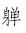

希腊人所用的火，听说是在一直先前，普洛美修斯从天上偷来的，但中国的却和它不同，是燧人氏自家所发见——或者该说是发明罢。因为并非偷儿，所以拴在山上，给老雕去啄的灾难是免掉了，然而也没有普洛美修斯那样的被传扬，被崇拜。
中国也有火神的。但那可不是燧人氏，而是随意放火的莫名其妙的东西。
自从燧人氏发见，或者发明了火以来，能够很有味的吃火锅，点起灯来，夜里也可以工作了，但是，真如先哲之所谓“有一利必有一弊”罢，同时也开始了火灾，故意点上火，烧掉那有巢氏所发明的巢的了不起的人物也出现了。
和善的燧人氏是该被忘却的。即使伤了食，这回是属于神农氏的领域了，所以那神农氏，至今还被人们所记得。至于火灾，虽然不知道那发明家究竟是什么人，但祖师总归是有的，于是没有法，只好漫称之曰火神，而献以敬畏。看他的画像，是红面孔，红胡须，不过祭祀的时候，却须避去一切红色的东西，而代之以绿色。他大约像西班牙的牛一样，一看见红色，便会亢奋起来，做出一种可怕的行动的。
他因此受着崇祀。在中国，这样的恶神还很多。
然而，在人世间，倒似乎因了他们而热闹。赛会也只有火神的，燧人氏的却没有。倘有火灾，则被灾的和邻近的没有被灾的人们，都要祭火神，以表感谢之意。被了灾还要来表感谢之意，虽然未免有些出于意外，但若不祭，据说是第二回还会烧，所以还是感谢了的安全。而且也不但对于火神，就是对于人，有时也一样的这么办，我想，大约也是礼仪的一种罢。
其实，放火，是很可怕的，然而比起烧饭来，却也许更有趣。外国的事情我不知道，若在中国，则无论查检怎样的历史，总寻不出烧饭和点灯的人们的列传来。在社会上，即使怎样的善于烧饭，善于点灯，也毫没有成为名人的希望。然而秦始皇一烧书，至今还俨然做着名人，至于引为希特拉烧书事件的先例。假使希特拉太太善于开电灯，烤面包罢，那么，要在历史上寻一点先例，恐怕可就难了。但是，幸而那样的事，是不会哄动一世的。
烧掉房子的事，据宋人的笔记说，是开始于蒙古人的。因为他们住着帐篷，不知道住房子，所以就一路的放火。然而，这是诳话。蒙古人中，懂得汉文的很少，所以不来更正的。其实，秦的末年就有着放火的名人项羽在，一烧阿房宫，便天下闻名，至今还会在戏台上出现，连在日本也很有名。然而，在未烧以前的阿房宫里每天点灯的人们，又有谁知道他们的名姓呢？
现在是爆裂弹呀，烧夷弹呀之类的东西已经做出，加以飞机也很进步，如果要做名人，就更加容易了。而且如果放火比先前放得大，那么，那人就也更加受尊敬，从远处看去，恰如救世主一样，而那火光，便令人以为是光明。
在前年，曾经拜读过中里介山氏的大作《给支那及支那国民的信》。只记得那里面说，周汉都有着侵略者的资质。而支那人都讴歌他，欢迎他了。连对于朔北的元和清，也加以讴歌了。只要那侵略，有着安定国家之力，保护民生之实，那便是支那人民所渴望的王道，于是对于支那人的执迷不悟之点，愤慨得非常。
那“信”，在满洲出版的杂志上，是被译载了的，但因为未曾输入中国，所以象是回信的东西，至今一篇也没有见。只在去年的上海报上所载的胡适博士的谈话里，有的说，“只有一个方法可以征服中国，即彻底停止侵略，反过来征服中国民族的心。”不消说，那不过是偶然的，但也有些令人觉得好象是对于那信的答复。
征服中国民族的心，这是胡适博士给中国之所谓王道所下的定义，然而我想，他自己恐怕也未必相信自己的话的罢。在中国，其实是彻底的未曾有过王道，“有历史癖和考据癖”的胡博士，该是不至于不知道的。
不错，中国也有过讴歌了元和清的人们，但那是感谢火神之类，并非连心也全被征服了的证据。如果给与一个暗示，说是倘不讴歌，便将更加虐待，那么，即使加以或一程度的虐待，也还可以使人们来讴歌。四五年前，我曾经加盟于一个要求自由的团体，而那时的上海教育局长陈德征氏勃然大怒道，在三民主义的统治之下，还觉得不满么？那可连现在所给与着的一点自由也要收起了。而且，真的是收起了的。每当感到比先前更不自由的时候，我一面佩服着陈氏的精通王道的学识，一面有时也不免想，真该是讴歌三民主义的。然而，现在是已经太晚了。
在中国的王道，看去虽然好象是和霸道对立的东西，其实却是兄弟，这之前和之后，一定要有霸道跑来的。人民之所讴歌，就为了希望霸道的减轻，或者不更加重的缘故。
汉的高祖，据历史家说，是龙种，但其实是无赖出身，说是侵略者，恐怕有些不对的。至于周的武王，则以征伐之名入中国，加以和殷似乎连民族也不同，用现代的话来说，那可是侵略者。然而那时的民众的声音，现在已经没有留存了。孔子和孟子确曾大大的宣传过那王道，但先生们不但是周朝的臣民而已，并且周游历国，有所活动，所以恐怕是为了想做官也难说。说得好看一点，就是因为要“行道”，倘做了官，于行道就较为便当，而要做官，则不如称赞周朝之为便当的。然而，看起别的记载来，却虽是那王道的祖师而且专家的周朝，当讨伐之初，也有伯夷和叔齐扣马而谏，非拖开不可；纣的军队也加反抗，非使他们的血流到漂杵不可。接着是殷民又造了反，虽然特别称之曰“顽民”，从王道天下的人民中除开，但总之，似乎究竟有了一种什么破绽似的。好个王道，只消一个顽民，便将它弄得毫无根据了。
儒士和方士，是中国特产的名物。方士的最高理想是仙道，儒士的便是王道。但可惜的是这两件在中国终于都没有。据长久的历史上的事实所证明，则倘说先前曾有真的王道者，是妄言，说现在还有者，是新药。孟子生于周季，所以以谈霸道为羞，倘使生于今日，则跟着人类的智识范围的展开，怕要羞谈王道的罢。
我想，人们是的确由事实而从新省悟，而事情又由此发生变化的。从宋朝到清朝的末年，许多年间，专以代圣贤立言的“制艺”这一种烦难的文章取士，到得和法国打了败仗，这才省悟了这方法的错误。于是派留学生到西洋，开设兵器制造局，作为那改正的手段。省悟到这还不够，是在和日本打了败仗之后，这回是竭力开起学校来。于是学生们年年大闹了。从清朝倒掉，国民党掌握政权的时候起，才又省悟了这错误，作为那改正的手段的，是除了大造监狱之外，什么也没有了。
在中国，国粹式的监狱，是早已各处都有的，到清末，就也造了一点西洋式，即所谓文明式的监狱。那是为了示给旅行到此的外国人而建造，应该与为了和外国人好互相应酬，特地派出去，学些文明人的礼节的留学生，属于同一种类的。托了这福，犯人的待遇也还好，给洗澡，也给一定分量的饭吃，所以倒是颇为幸福的地方。但是，就在两三礼拜前，政府因为要行仁政了，还发过一个不准克扣囚粮的命令。从此以后，可更加幸福了。
至于旧式的监狱，则因为好象是取法于佛教的地狱的，所以不但禁锢犯人，此外还有给他吃苦的职掌。挤取金钱，使犯人的家属穷到透顶的职掌，有时也会兼带的。但大家都以为应该。如果有谁反对罢，那就等于替犯人说话，便要受恶党的嫌疑。然而文明是出奇的进步了，所以去年也有了提倡每年该放犯人回家一趟，给以解决性欲的机会的，颇是人道主义气味之说的官吏。其实，他也并非对于犯人的性欲，特别表着同情，不过因为总不愁竟会实行的，所以也就高声嚷一下，以见自己的作为官吏的存在。然而舆论颇为沸腾了。有一位批评家，还以为这么一来，大家便要不怕牢监，高高兴兴的进去了，很为世道人心愤慨了一下。受了所谓圣贤之教那么久，竟还没有那位官吏的圆滑，固然也令人觉得诚实可靠，然而他的意见，是以为对于犯人，非加虐待不可，却也因此可见了。
从别一条路想，监狱确也并非没有不像以“安全第一”为标语的人们的理想乡的地方。火灾极少，偷儿不来，土匪也一定不来抢。即使打仗，也决没有以监狱为目标，施行轰炸的傻子；即使革命，有释放囚犯的例，而加以屠戮的是没有的。当福建独立之初，虽有说是释放犯人，而一到外面，和他们自己意见不同的人们倒反而失踪了的谣言，然而这样的例子，以前是未曾有过的。总而言之，似乎也并非很坏的处所。只要准带家眷，则即使不是现在似的大水、饥荒、战争、恐怖的时候，请求搬进去住的人们，也未必一定没有的。于是虐待就成为必不可少了。
牛兰夫妇，作为赤化宣传者而关在南京的监狱里，也绝食了三四回了，可是什么效力也没有。这是因为他不知道中国的监狱的精神的缘故。有一位官员诧异的说过：他自己不吃，和别人有什么关系呢？岂但和仁政并无关系而已呢，省些食料，倒是于监狱有益的。甘地的把戏，倘不挑选兴行场，就毫无成效了。
然而，在这样的近于完美的监狱里，却还剩着一种缺点。至今为止，对于思想上的事，都没有很留心。为要弥补这缺点，是在近来新发明的叫作“反省院”的特种监狱里，施着教育。我还没有到那里面去反省过，所以并不知道详情，但要而言之，好象是将三民主义时时讲给犯人听，使他反省着自己的错误。听人说，此外还得做排击共产主义的论文。如果不肯做，或者不能做，那自然，非终身反省不可了，而做得不够格，也还是非反省到死则不可。现在是进去的也有，出来的也有，因为听说还得添造反省院，可见还是进去的多了。考完放出的良民，偶尔也可以遇见，但仿佛大抵是萎靡不振，恐怕是在反省和毕业论文上，将力气使尽了罢。那前途，是在没有希望这一面的。
原问──
一、苏联的存在与成功，对于你怎样？（苏维埃建设的十月革命，对于你的思想的路径和创作的性质，有什么改变？）
二、你对于苏维埃文学的意见怎样？
三、在资本主义的各国，什么事件和种种文化上的进行，特别引起你的注意？
一、先前，旧社会的腐败，我是觉到了的，我希望着新的社会的起来，但不知道这“新的”该是什么，而且也不知道“新的”起来以后，是否一定就好。待到十月革命后，我才知道这“新的”社会的创造者是无产阶级，但因为资本主义各国的反宣传，对于十月革命还有些冷淡，并且怀疑。现在苏联的存在和成功，使我确切的相信无阶级社会一定要出现，不但完全扫除了怀疑，而且增加许多勇气了。但在创作上，则因为我不在革命的旋涡中心，而且久不能到各处去考察，所以我大约仍然只能暴露旧社会的坏处。
二、我只能看别国──德国、日本──的译本。我觉得现在的讲建设的，还是先前的讲战斗的──如《铁甲列车》、《毁灭》、《铁流》等──于我有兴趣，并且有益。我看苏维埃文学，是大半因为想绍介给中国，而对于中国，现在也还是战斗的作品更为紧要。
三、我在中国，看不见资本主义各国之所谓“文化”；我单知道他们和他们的奴才们，在中国正在用力学和化学的方法，还有电气机械，以拷问革命者，并且用飞机和炸弹以屠杀革命群众。
在中国，小说是向来不算文学的。在轻视的眼光下，自从十八世纪末的《红楼梦》以后，实在也没有产生什么较伟大的作品。小说家的侵入文坛，仅是开始“文学革命”运动，即一九一七年以来的事。自然，一方面是由于社会的要求的，一方面则是受了西洋文学的影响。
但这新的小说的生存，却总在不断的战斗中。最初，文学革命者的要求是人性的解放，他们以为只要扫荡了旧的成法，剩下来的便是原来的人，好的社会了，于是就遇到保守家们的迫压和陷害。大约十年之后，阶级意识觉醒了起来，前进的作家，就都成了革命文学者，而迫害也更加厉害，禁止出版，烧掉书籍，杀戮作家，有许多青年，竟至于在黑暗中，将生命殉了他的工作了。
这一本书，便是十五年来的，“文学革命”以后的短篇小说的选集。因为在我们还算是新的尝试，自然不免幼稚，但恐怕也可以看见它恰如压在大石下面的植物一般，虽然并不繁荣，它却在曲曲折折地生长。
至今为止，西洋人讲中国的著作，大约比中国人民讲自己的还要多。不过这些总不免只是西洋人的看法，中国有一句古谚，说：“肺腑而能语，医师面如土。”我想，假使肺腑真能说话，怕也未必一定完全可靠的罢，然而，也一定能有医师所诊察不到，出乎意外，而其实是十分真实的地方。
一九三四年三月二十三日，鲁迅记于上海。
“旧形式的采用”的问题，如果平心静气的讨论起来，在现在，我想是很有意义的，但开首便遭到了耳耶先生的笔伐。“类乎投降”，“机会主义”，这是近十年来“新形式的探求”的结果，是克敌的咒文，至少先使你惹一身不干不净。但耳耶先生是正直的，因为他同时也在译《艺术底内容和形式》，一经登完，便会洗净他激烈的责罚；而且有几句话也正确的，是他说新形式的探求不能和旧形式的采用机械的地分开。
不过这几句话已经可以说是常识；就是说内容和形式不能机械的地分开，也已经是常识；还有，知道作品和大众不能机械的地分开，也当然是常识。旧形式为什么只是“采用”──但耳耶先生却指为“为整个（！）旧艺术捧场”──就是为了新形式的探求。采取若干，和“整个”捧来是不同的，前进的艺术家不能有这思想（内容）。然而他会想到采取旧艺术，因为他明白了作品和大众不能机械的地分开。以为艺术是艺术家的“灵感”的爆发，像鼻子发痒的人，只要打出喷嚏来就浑身舒服，一了百了的时候已经过去了，现在想到，而且关心了大众。这是一个新思想（内容），由此而在探求新形式，首先提出的是旧形式的采取，这采取的主张，正是新形式的发端，也就是旧形式的蜕变，在我看来，是既没有将内容和形式机械的地分开，更没有看得《姊妹花》叫座，于是也来学一套的投机主义的罪案的。
自然，旧形式的采取，或者必须说新形式的探求，都必须艺术学徒的努力的实践，但理论家或批评家是同有指导，评论，商量的责任的，不能只斥他交代未清之后，便可逍遥事外。我们有艺术史，而且生在中国，即必须翻开中国的艺术史来。采取什么呢？我想，唐以前的真迹，我们无从目睹了，但还能知道大抵以故事为题材，这是可以取法的；在唐，可取佛画的灿烂，线画的空实和明快，宋的院画，萎靡柔媚之处当舍，周密不苟之处是可取的，米点山水，则毫无用处。后来的写意画（文人画）有无用处，我此刻不敢确说，恐怕也许还有可用之点的罢。这些采取，并非断片的古董的杂陈，必须溶化于新作品中，那是不必赘说的事，恰如吃用牛羊，弃去蹄毛，留其精粹，以滋养及发达新的生体，决不因此就会“类乎”牛羊的。
只是上文所举的，亦即我们现在所能看见的，都是消费的艺术。它一向独得有力者的宠爱，所以还有许多存留。但既有消费者，必有生产者，所以一面有消费者的艺术，一面也有生产者的艺术。古代的东西，因为无人保护，除小说的插画以外，我们几乎什么也看不见了。至于现在，却还有市上新年的花纸，和猛克先生所指出的连环图画。这些虽未必是真正的生产者的艺术，但和高等有闲者的艺术对立，是无疑的。但虽然如此，它还是大受着消费者艺术的影响，例如在文学上，则民歌大抵脱不开七言的范围，在图画上，则题材多是士大夫的部事，然而已经加以提炼，成为明快，简捷的东西了。这也就是蜕变，一向则谓之“俗”。注意于大众的艺术家，来注意于这些东西，大约也未必错，至于仍要加以提炼，那也是无须赘说的。
但中国的两者的艺术，也有形似而实不同的地方，例如佛画的满幅云烟，是豪华的装璜，花纸也有一种硬填到几乎不见白纸的，却是惜纸的节俭；唐伯虎画的细腰纤手的美人，是他一类人们的欲得之物，花纸上也有这一种，在赏玩者却只以为世间有这一类人物，聊资博识，或满足好奇心而已。为大众的画家，都无须避忌。
至于谓连环图画不过图画的种类之一，与文学中之有诗歌，戏曲，小说相同，那自然是不错的。但这种类之别，也仍然与社会条件相关联，则我们只要看有时盛行诗歌，有时大出小说，有时独多短篇的史实便可以知道。因此，也可以知道即与内容相关联。现在社会上的流行连环图画，即因为它有流行的可能，且有流行的必要，着眼于此，因而加以导引，正是前进的艺术家的正确的任务；为了大众，力求易懂，也正是前进的艺术家正确的努力。旧形式是采取，必有所删除，既有删除，必有所增益，这结果是新形式的出现，也就是变革。而且，这工作是决不如旁观者所想的容易的。
但就是立有了新形式罢，当然不会就是很高的艺术。艺术的前进，还要别的文化工作的协助，某一文化部门，要某一专家唱独脚戏来提得特别高，是不妨空谈，却难做到的事，所以专责个人，那立论的偏颇和偏重环境的是一样的。
（五月二日。）
“连环图画”的拥护者，看现在的议论，是“启蒙”之意居多的。
古人“左图右史”，现在只剩下一句话，看不见真相了，宋元小说，有的是每页上图下说，却至今还有存留，就是所谓“出相”；明、清以来，有卷头只画书中人物的，称为“绣像”。有画每回故事的，称为“全图”。那目的，大概是在诱引未读者的购读，增加阅读者的兴趣和理解。
但民间另有一种《智灯难字》或《日用杂字》，是一字一像，两相对照，虽可看图，主意却在帮助识字的东西，略加变通，便是现在的《看图识字》。文字较多的是《圣谕像解》，《二十四孝图》等，都是借图画以启蒙，又因中国文字太难，只得用图画来济文字之穷的产物。
“连环图画”便是取“出相”的格式，收《智灯难字》的功效的，倘要启蒙，实在也是一种利器。
但要启蒙，即必须能懂。懂的标准，当然不能俯就低能儿或白痴，但应该着眼于一般的大众，譬如罢，中国画是一向没有阴影的，我所遇见的农民，十之九不赞成西洋画及照相，他们说：人脸那有两边颜色不同的呢？西洋人的看画，是观者作为站在一定之处的，但中国的观者，却向不站在定点上，所以他说的话也是真实。那么，作“连环图画”而没有阴影，我以为是可以的；人物旁边写上名字，也可以的，甚至于表示做梦从人头上放出一道毫光来，也无所不可。观者懂得了内容之后，他就会自己删去帮助理解的记号。这也不能谓之失真，因为观者既经会得了内容，便是有了艺术上的真，倘必如实物之真，则人物只有二三寸，就不真了，而没有和地球一样大小的纸张，地球便无法绘画。
艾思奇先生说：“若能够触到大众真正的切身问题，那恐怕愈是新的，才愈能流行。”这话也并不错。不过要商量的是怎样才能够触到，触到之法，“懂”是最要紧的，而且能懂的图画，也可以仍然是艺术。
（五月九日。）
元遗山在金、元之际，为文宗，为遗献，为愿修野史，保存旧章的有心人，明清以来颇为一部分人士所爱重。然而他生平有一宗疑案，就是为叛将崔立颂德者，是否确实与他无涉，或竟是出于他的手笔的文章。
金天兴元年（一二三二），蒙古兵围洛阳；次年，安平都尉京城西面元帅崔立杀二丞相，自立为郑王，降于元。惧或加以恶名，群小承旨，议立碑颂功德，于是在文臣间，遂发生了极大的惶恐，因为这与一生的名节相关，在个人是十分重要的。
当时的情状，《金史》《王若虚传》这样说──
“天兴元年，哀宗走归德。明年春，崔立变，群小附和，请为立建功德碑。翟奕以尚书省命，召若虚为文。时奕辈恃势作威，人或少忤，则谗搆立见屠灭。若虚自分必死，私谓左右司员外郎元好问曰，‘今召我作碑，不从则死，作之则名节扫地，不若死之为愈。虽然，我姑以理谕之。’……奕辈不能夺，乃召太学生刘祁麻革辈赴省，好问张信之喻以立碑事曰，‘众议属二君，且已白郑王矣！二君其无让。’祁等固辞而别。数日，促迫不已，祁即为草定，以付好问。好问意未惬，乃自为之，既成，以示若虚，乃共删定数字，然止直叙其事而已。后兵入城，不果立也。”
碑虽然“不果立”，但当时却已经发生了“名节”的问题，或谓元好问作，或谓刘祁作，文证具在清凌廷堪所辑的《元遗山先生年谱》中，兹不多录。经其推勘，已知前出的《王若虚传》文，上半据元好问《内翰王公墓表》，后半却全取刘祁自作的《归潜志》，被诬攀之说所蒙蔽了。凌氏辩之云，“夫当时立碑撰文，不过畏崔立之祸，非必取文辞之工，有京叔属草，已足塞立之请，何取更为之耶？”然则刘祁之未尝决死如王若虚，固为一生大玷，但不能更有所推诿，以致成为“塞责”之具，却也可以说是十分晦气的。
然而，元遗山生平还有一宗大事，见于《元史》《张德辉》传──
“世祖在潜邸，……访中国人材。德辉举魏璠、元裕、李冶等二十余人。……壬子，德辉与元裕北觐，请世祖为儒教大宗师，世祖悦而受之。因启：累朝有旨蠲儒户兵赋，乞令有司遵行。从之。”
以拓跋魏的后人与德辉，请蒙古小酋长为“汉儿”的“儒教大宗师”，在现在看来，未免有些滑稽，但当时却似乎并无訾议。盖蠲除兵赋，“儒户”均沾利益，清议操之于士，利益既沾，虽已将“儒教”呈献，也不想再来开口了。
由此士大夫便渐渐的进身，然终因不切实用，又渐渐的见弃。但仕路日塞，而南北之士的相争却也日甚了。余阙的《青阳先生文集》卷四《杨君显民诗集序》云──
“我国初有金宋，天下之人，惟才是用之，无所专主，然用儒者为居多也。自至元以下，始浸用吏，虽执政大臣，亦以吏为之，……而中州之士，见用者遂浸寡。况南方之地远，士多不能自至于京师，其抱才缊者，又往往不屑为吏，故其见用者尤寡也。及其久也，则南北之士亦自町畦以相訾，甚若晋之与秦，不可与同中国，故夫南方之士微矣。”
然在南方，士人其实亦并不冷落。同书《送范立中赴襄阳诗序》云——
“宋高宗南迁，合淝遂为边地，守臣多以武臣为之。……故民之豪杰者，皆去而为将校，累功多至节制。郡中衣冠之族，惟范氏，商氏，葛氏三家而已。……皇元受命，包裹兵革，……诸武臣之子弟，无所用其能，多伏匿而不出。春秋月朔，郡太守有事于学，衣深衣，戴乌角巾，执笾豆罍爵，唱赞道引者，皆三家之子孙也，故其材皆有所成就，至学校官，累累有焉。……虽天道忌满恶盈，而儒者之泽深且远，从古然也。”
这是“中国人才”们献教，卖经以来，“儒户”所食的佳果。虽不能为王者师，且次于吏者数等，而究亦胜于将门和平民者一等，“唱赞道引”，非“伏匿”者所敢望了。
中华民国二十三年五月二十日及次日，上海无线电播音由冯明权先生讲给我们一种奇书：《抱经堂勉学家训》（据《大美晚报》）。这是从未前闻的书，但看见下署“颜子推”，便可以悟出是颜之推《家训》中的《勉学篇》了。曰“抱经堂”者，当是因为曾被卢文弨印入《抱经堂丛书》中的缘故。所讲有这样的一段──
“有学艺者，触地而安。自荒乱已来，诸见俘虏，虽百世小人，知读《论语》、《孝经》者，尚为人师；虽千载冠冕，不晓书记者，莫不耕田养马。以此观之，汝可不自勉耶？若能常保数百卷书，千载终不为小人也。……谚曰，‘积财千万，不如薄伎在身。’伎之易习而可贵者，无过读书也。”
这说得很透彻：易习之伎，莫如读书，但知读《论语》、《孝经》，则虽被俘虏，犹能为人师，居一切别的俘虏之上。这种教训，是从当时的事实推断出来的，但施之于金元而准，按之于明清之际而亦准。现在忽由播音，以“训”听众，莫非选讲者已大有感于方来，遂绸缪于未雨么？
“儒者之泽深且远”，即小见大，我们由此可以明白“儒术”，知道“儒效”了。
（五月二十七日。）
凡一个人，即使到了中年以至暮年，倘一和孩子接近，便会踏进久经忘却了的孩子世界的边疆去，想到月亮怎么会跟着人走，星星究竟是怎么嵌在天空中。但孩子在他的世界里，是好象鱼之在水，游泳自如，忘其所以的，成人却有如人的凫水一样，虽然也觉到水的柔滑和清凉，不过总不免吃力，为难，非上陆不可了。
月亮和星星的情形，一时怎么讲得清楚呢，家境还不算精穷，当然还不如给一点所谓教育，首先是识字。上海有各国的人们，有各国的书铺，也有各国的儿童用书。但我们是中国人，要看中国书，识中国字。这样的书也有，虽然纸张、图画、色彩、印订，都远不及别国，但有是也有的。我到市上去，给孩子买来的是民国二十一年十一月印行的“国难后第六版”的《看图识字》。
先是那色彩就多么恶浊，但这且也不管他。图画又多么死板，这且也不管他。出版处虽然是上海，然而奇怪，图上有蜡烛，有洋灯，却没有电灯；有朝靴，有三镶云头鞋，却没有皮鞋。跪着放枪的，一脚拖地；站着射箭的，两臂不平，他们将永远不能达到目的，更坏的是连钓竿、风车、布机之类，也和实物有些不同。
我轻轻的叹了一口气，记起幼小时候看过的《日用杂字》来。这是一本教育妇女婢仆，使她们能够记帐的书，虽然名物的种类并不多，图画也很粗劣，然而很活泼，也很像。为什么呢？就因为作画的人，是熟悉他所画的东西的，一个“萝卜”，一只鸡，在他的记忆里并不含胡，画起来当然就切实。现在我们只要看《看图识字》里所画的生活状态──洗脸，吃饭，读书──就知道这是作者意中的读者，也是作者自己的生活状态，是在租界上租一层屋，装了全家，既不阔绰，也非精穷的，埋头苦干一日，才得维持生活一日的人，孩子得上学校，自己须穿长衫，用尽心神，撑住场面，又那有余力去买参考书，观察事物，修炼本领呢？况且，那书的末叶上还有一行道：“戊申年七月初版”。查年表，才知道那就是清朝光绪三十四年，即西历一九○八年，虽是前年新印，书却成于二十七年前，已是一部古籍了，其奄奄无生气，正也不足为奇的。
孩子是可以敬服的，他常常想到星月以上的境界，想到地面下的情形，想到花卉的用处，想到昆虫的言语；他想飞上天空，他想潜入蚁穴……所以给儿童看的图书就必须十分慎重，做起来也十分烦难。即如《看图识字》这两本小书，就天文、地理、人事、物情，无所不有。其实是，倘不是对于上至宇宙之大，下至苍蝇之微，都有些切实的知识的画家，决难胜任的。
然而我们是忘却了自己曾为孩子时候的情形了，将他们看作一个蠢才，什么都不放在眼里。即使因为时势所趋，只得施一点所谓教育，也以为只要付给蠢才去教就足够。于是他们长大起来，就真的成了蠢才，和我们一样了。
然而我们这些蠢才，却还在变本加厉的愚弄孩子。只要看近两三年的出版界，给“小学生”、“小朋友”看的刊物，特别的多就知道。中国突然出了这许多“儿童文学家”了么？我想：是并不然的。
（五月三十日。）
中国一向是所谓“闭关主义”，自己不去，别人也不许来。自从给枪炮打破了大门之后，又碰了一串钉子，到现在，成了什么都是“送去主义”了。别的且不说罢，单是学艺上的东西，近来就先送一批古董到巴黎去展览，但终“不知后事如何”；还有几位“大师”们捧着几张古画和新画，在欧洲各国一路的挂过去，叫作“发扬国光”。听说不远还要送梅兰芳博士到苏联去，以催进“象征主义”，此后是顺便到欧洲传道。我在这里不想讨论梅博士演艺和象征主义的关系，总之，活人替代了古董，我敢说，也可以算得显出一点进步了。
但我们没有人根据了“礼尚往来”的仪节，说道：拿来！
当然，能够只是送出去，也不算坏事情，一者见得丰富，二者见得大度。尼采就自诩过他是太阳，光热无穷，只是给与，不想取得。然而尼采究竟不是太阳，他发了疯。中国也不是，虽然有人说，掘起地下的煤来，就足够全世界几百年之用。但是，几百年之后呢？几百年之后，我们当然是化为魂灵，或上天堂，或落了地狱，但我们的子孙是在的，所以还应该给他们留下一点礼品。要不然，则当佳节大典之际，他们拿不出东西来，只好磕头贺喜，讨一点残羹冷炙做奖赏。
这种奖赏，不要误解为“抛来”的东西，这是“抛给”的，说得冠冕些，可以称之为“送来”，我在这里不想举出实例。
我在这里也并不想对于“送去”再说什么，否则太不“摩登”了。我只想鼓吹我们再吝啬一点，“送去”之外，还得“拿来”，是为“拿来主义”。
但我们被“送来”的东西吓怕了。先有英国的鸦片，德国的废枪炮，后有法国的香粉，美国的电影，日本的印着“完全国货”的各种小东西。于是连清醒的青年们，也对于洋货发生了恐怖。其实，这正是因为那是“送来”的，而不是“拿来”的缘故。
所以我们要运用脑髓，放出眼光，自己来拿！
譬如罢，我们之中的一个穷青年，因为祖上的阴功（姑且让我这么说说罢），得了一所大宅子，且不问他是骗来的，抢来的，或合法继承的，或是做了女婿换来的。那么，怎么办呢？我想，首先是不管三七二十一，“拿来”！但是，如果反对这宅子的旧主人，怕给他的东西染污了，徘徊不敢走进门，是孱头；勃然大怒，放一把火烧光，算是保存自己的清白，则是昏蛋。不过因为原是羡慕这宅子的旧主人的，而这回接受一切，欣欣然的蹩进卧室，大吸剩下的鸦片，那当然更是废物。“拿来主义”者是全不这样的。
他占有，挑选。看见鱼翅，并不就抛在路上以显其“平民化”，只要有养料，也和朋友们像萝卜白菜一样的吃掉，只不用它来宴大宾；看见鸦片，也不当众摔在毛厕里，以见其彻底革命，只送到药房里去，以供治病之用，却不弄“出售存膏，售完即止”的玄虚。只有烟枪和烟灯，虽然形式和印度，波斯，阿剌伯的烟具都不同，确可以算是一种国粹，倘使背着周游世界，一定会有人看，但我想，除了送一点进博物馆之外，其余的是大可以毁掉的了。还有一群姨太太，也大以请她们各自走散为是，要不然，“拿来主义”怕未免有些危机。
总之，我们要拿来。我们要或使用，或存放，或毁灭。那么，主人是新主人，宅子也就会成为新宅子。然而首先要这人沉着，勇猛，有辨别，不自私。没有拿来的，人不能自成为新人，没有拿来的，文艺不能自成为新文艺。
（六月四日。）
清朝初年的文字之狱，到清朝末年才被从新提起。最起劲的是“南社”里的有几个人，为被害者辑印遗集；还有些留学生，也争从日本搬回文证来。待到孟森的《心史丛刊》出，我们这才明白了较详细的状况，大家向来的意见，总以为文字之祸，是起于笑骂了清朝。然而，其实是不尽然的。
这一两年来，故宫博物院的故事似乎不大能够令人敬服，但它却印给了我们一种好书，曰《清代文字狱档》，去年已经出到八辑。其中的案件，真是五花八门，而最有趣的，则莫如乾隆四十八年二月“冯起炎注解易诗二经欲行投呈案”。
冯起炎是山西临汾县的生员，闻乾隆将谒泰陵，便身怀著作，在路上徘徊，意图呈进，不料先以“形迹可疑”被捕了。那著作，是以《易》解《诗》，实则信口开河，在这里犯不上抄录，惟结尾有“自传”似的文章一大段，却是十分特别的──
“又，臣之来也，不愿如何如何，亦别无愿求之事，惟有一事未决，请对陛下一叙其缘由。臣……名曰冯起炎，字是南州，尝到臣张三姨母家，见一女，可娶，而恨力不足以办此。此女名曰小女，年十七岁，方当待字之年，而正在未字之时，乃原籍东关春牛厂长兴号张守忭之次女也。又到臣杜五姨母家，见一女，可娶，而恨力不足以办此。此女名小凤，年十三岁，虽非必字之年，而已在可字之时，乃本京东城闹市口瑞生号杜月之次女也。若以陛下之力，差干员一人，选快马一匹，克日长驱到临邑，问彼临邑之地方官：‘其东关春牛厂长兴号中果有张守忭一人否？’诚如是也，则此事谐矣。再问：‘东城闹市口瑞生号中果有杜月一人否？’诚如是也，则此事谐矣。二事谐，则臣之愿毕矣。然臣之来也，方不知陛下纳臣之言耶否耶，而必以此等事相强乎？特进言之际，一叙及之。”
这何尝有丝毫恶意？不过着了当时通行的才子佳人小说的迷，想一举成名，天子做媒，表妹入抱而已。不料事实结局却不大好，署直隶总督袁守侗拟奏罪名是“阅其呈首，胆敢于圣主之前，混讲经书，而呈尾措词，尤属狂妄。核其情罪，较冲突仪仗为更重。冯起炎一犯，应从重发往黑龙江等处，给披甲人为奴。俟部复到日，照例解部刺字发遣。”这位才子，后来大约终于单身出关做西崽去了。
此外的案情，虽然没有这么风雅，但并非反动的还不少。有的是卤莽；有的是发疯；有的是乡曲迂儒，真的不识讳忌；有的则是草野愚民，实在关心皇家。而运命大概很悲惨，不是凌迟，灭族，便是立刻杀头，或者“斩监候”，也仍然活不出。
凡这等事，粗略的一看，先使我们觉得清朝的凶虐，其次，是死者的可怜。但再来一想，事情是并不这么简单的。这些惨案的来由，都只为了“隔膜”。
满洲人自己，就严分着主奴，大臣奏事，必称“奴才”，而汉人却称“臣”就好。这并非因为是“炎黄之胄”，特地优待，锡以嘉名的，其实是所以别于满人的“奴才”，其地位还下于“奴才”数等。奴隶只能奉行，不许言议；评论固然不可，妄自颂扬也不可，这就是“思不出其位”。譬如说：主子，您这袍角有些儿破了，拖下去怕更要破烂，还是补一补好。进言者方自以为在尽忠，而其实却犯了罪，因为另有准其讲这样的话的人在，不是谁都可说的。一乱说，便是“越俎代谋”，当然“罪有应得”。倘自以为是“忠而获咎”，那不过是自己的胡涂。
但是，清朝的开国之君是十分聪明的，他们虽然打定了这样的主意，嘴里却并不照样说，用的是中国的古训：“爱民如子”，“一视同仁”。一部分的大臣，士大夫，是明白这奥妙的，并不敢相信。但有一些简单愚蠢的人们却上了当，真以为“陛下”是自己的老子，亲亲热热的撒娇讨好去了。他那里要这被征服者做儿子呢？于是乎杀掉。不久，儿子们吓得不再开口了，计划居然成功；直到光绪时康有为们的上书，才又冲破了“祖宗的成法”。然而这奥妙，好象至今还没有人来说明。
施蛰存先生在《文艺风景》创刊号里，很为“忠而获咎”者不平，就因为还不免有些“隔膜”的缘故。这是《颜氏家训》或《庄子》、《文选》里所没有的。
(六月十日。）
中国木刻图画，从唐到明，曾经有过很体面的历史。但现在的新的木刻，却和这历史不相干。新的木刻，是受了欧洲的创作木刻的影响的。创作木刻的绍介，始于朝花社，那出版的《艺苑朝华》四本，虽然选择印造，并不精工，且为艺术名家所不齿，却颇引起了青年学徒的注意。到一九三一年夏，在上海遂有了中国最初的木刻讲习会。又由是蔓衍而有木铃社，曾印《木铃木刻集》两本。又有野穗社，曾印《木刻画》一辑。有无名木刻社，曾印《木刻集》。但木铃社早被毁灭，后两社也未有继续或发展的消息。前些时在上海还剩有M.K.木刻研究社，是一个历史较长的小团体，曾经屡次展览作品，并且将出《木刻画选集》的，可惜今夏又被私怨者告密。社员多遭捕逐，木版也为工部局所没收了。
据我们所知道，现在似乎已经没有一个研究木刻的团体了。但尚有研究木刻的个人。如罗清桢，已出《清桢木刻集》二辑；如又村，最近已印有《廖坤玉故事》的连环图。这是都值得特记的。
而且仗着作者历来的努力和作品的日见其优良，现在不但已得中国读者的同情，并且也渐渐的到了跨出世界上去的第一步。虽然还未坚实，但总之，是要跨出去了。不过，同时也到了停顿的危机。因为倘没有鼓励和切磋，恐怕也很容易陷于自足。本集即愿做一个木刻的路程碑，将自去年以来，认为应该流布的作品，陆续辑印，以为读者的综观，作者的借镜之助。但自然，只以收集所及者为限，中国的优秀之作，是决非尽在于此的。
别的出版者，一方面还正在绍介欧美的新作，一方面则在复印中国的古刻，这也都是中国的新木刻的羽翼。采用外国的良规，加以发挥，使我们的作品更加丰满是一条路；择取中国的遗产，融合新机，使将来的作品别开生面也是一条路。如果作者都不断的奋发，使本集能一程一程的向前走，那就会知道上文所说，实在不仅是一种奢望的了。
一九三四年六月中，铁木艺术社记。
中国的“愚民”──没有学问的下等人，向来就怕人注意他。如果你无端的问他多少年纪，什么意见，兄弟几个，家景如何，他总是支吾一通之后，躲了开去。有学识的大人物，很不高兴他们这样的脾气。然而这脾气总不容易改，因为他们也实在从经验而来的。
假如你被谁注意了，一不小心，至少就不免上一点小当，譬如罢，中国是改革过的了，孩子们当然早已从“孟宗哭竹”“王祥卧冰”的教训里蜕出，然而不料又来了一个崭新的“儿童年”，爱国之士，因此又想起了“小朋友”，或者用笔，或者用舌，不怕劳苦的来给他们教训。一个说要用功，古时候曾有“囊萤照读”“凿壁偷光”的志士；一个说要爱国，古时候曾有十几岁突围请援，十四岁上阵杀敌的奇童。这些故事，作为闲谈来听听是不算很坏的，但万一有谁相信了，照办了，那就会成为乳臭未干的吉诃德。你想，每天要捉一袋照得见四号铅字的萤火虫，那岂是一件容易事？但这还只是不容易罢了，倘去凿壁，事情就更糟，无论在哪里，至少是挨一顿骂之后，立刻由爸爸妈妈赔礼，雇人去修好。
请援，杀敌，更加是大事情，在外国，都是三四十岁的人们所做的。他们那里的儿童，着重的是吃，玩，认字，听些极普通，极紧要的常识。中国的儿童给大家特别看得起，那当然也很好，然而出来的题目就因此常常是难题，仍如飞剑一样，非上武当山寻师学道之后，决计没法办。到了二十世纪，古人空想中的潜水艇，飞行机，是实地上成功了，但《龙文鞭影》或《幼学琼林》里的模范故事，却还有些难学。我想，便是说教的人，恐怕自己也未必相信罢。
所以听的人也不相信。我们听了千多年的剑仙侠客，去年到武当山去的只有三个人，只占全人口的五百兆分之一，就可见。古时候也许还要多，现在是有了经验，不大相信了，于是照办的人也少了。──但这是我个人的推测。
不负责任的，不能照办的教训多，则相信的人少；利己损人的教训多，则相信的人更其少。“不相信”就是“愚民”的远害的堑壕，也是使他们成为散沙的毒素。然而有这脾气的也不但是“愚民”，虽是说教的士大夫，相信自己和别人的，现在也未必有多少。例如既尊孔子，又拜活佛者，也就是恰如将他的钱试买各种股票，分存许多银行一样，其实是那一面都不相信的。
（七月一日。）
线装书真是买不起了。乾隆时候的刻本的价钱，几乎等于那时的宋本。明版小说，是五四运动以后飞涨的；从今年起，洪运怕要轮到小品文身上去了。至于清朝禁书，则民元革命后就是宝贝，即使并无足观的著作，也常要百余元至数十元。我向来也走走旧书坊，但对于这类宝书，却从不敢作非分之想。端午节前，在四马路一带闲逛，竟无意之间买到了一种，曰《小学大全》，共五本，价七角，看这名目，是不大有人会欢迎的，然而，却是清朝的禁书。
这书的编纂者尹嘉铨，博野人；他父亲尹会一，是有名的孝子，乾隆皇帝曾经给过褒扬的诗。他本身也是孝子，又是道学家，官又做到大理寺卿稽察觉罗学。还请令旗籍子弟也讲读朱子的《小学》，而“荷蒙朱批：所奏是。钦此。”这部书便成于两年之后的，加疏的《小学》六卷，《考证》和《释文》、《或问》各一卷，《后编》二卷，合成一函，是为《大全》。也曾进呈，终于在乾隆四十二年九月十七日奉旨：“好！知道了。钦此。”那明明是得了皇帝的嘉许的。
到乾隆四十六年，他已经致仕回家了，但真所谓“及其老也，戒之在得”罢，虽然欲得的乃是“名”，也还是一样的招了大祸。这年三月，乾隆行经保定，尹嘉铨便使儿子送了一本奏章，为他的父亲请，朱批是“与乃国家定典，岂可妄求。此奏本当交部治罪，念汝为父私情，姑免之。若再不安分家居，汝罪不可逭矣！钦此。”不过他豫先料不到会碰这样的大钉子，所以接着还有一本，是请许“我朝”名臣汤斌范文程李光地顾八代张伯行等从祀孔庙，“至于臣父尹会一，既蒙御制诗章褒嘉称孝，已在德行之科，自可从祀，非臣所敢请也。”这回可真出了大岔子，三月十八日的朱批是：“竟大肆狂吠，不可恕矣！钦此。”
乾隆时代的一定办法，是凡以文字获罪者，一面拿办，一面就查抄，这并非着重他的家产，乃在查看藏书和另外的文字，如果别有“狂吠”，便可以一并治罪。因为乾隆的意见，是以为既敢“狂吠”，必不止于一两声，非彻底根究不可的。尹嘉铨当然逃不出例外，和自己的被捕同时，他那博野的老家和北京的寓所，都被查抄了。藏书和别项著作，实在不少，但其实也并无什么干碍之作。不过那时是决不能这样就算的，经大学士三宝等再三审讯之后，定为“相应请旨将尹嘉铨照大逆律凌迟处死”，幸而结果很宽大：“尹嘉铨著加恩免其凌迟之罪，改为处绞立决，其家属一并加恩免其缘坐”就完结了。
这也还是名儒兼孝子的尹嘉铨所不及料的。
这一回的文字狱，只绞杀了一个人，比起别的案子来，决不能算是大狱，但乾隆皇帝却颇费心机，发表了几篇文字。从这些文字和奏章（均见《清代文字狱档》第六辑）看来，这回的祸机虽然发于他的“不安分”，但大原因，却在既以名儒自居，又请将名臣从祀：这都是大“不可恕”的地方。清朝虽然尊崇朱子，但止于“尊崇”，却不许“学样”，因为一学样，就要讲学，于是而有学说，于是而有门徒，于是而有门户，于是而有门户之争，这就足为“太平盛世”之累。况且以这样的“名儒”而做官，便不免以“名臣”自居，“妄自尊大”。乾隆是不承认清朝会有“名臣”的，他自己是“英主”，是“明君”，所以在他的统治之下，不能有奸臣，既没有特别坏的奸臣，也就没有特别好的名臣，一律都是不好不坏，无所谓好坏的奴子。
特别攻击道学先生，所以是那时的一种潮流，也就是“圣意”。我们所常见的，是纪昀总纂的《四库全书总目提要》和自著的《阅微草堂笔记》里的时时的排击。这就是迎合着这种潮流的，倘以为他秉性平易近人，所以憎恨了道学先生的谿刻，那是一种误解。大学士三宝们也很明白这潮流，当会审尹嘉铨时，曾奏道：“查该犯如此狂悖不法，若即行定罪正法，尚不足以泄公愤而快人心。该犯曾任三品大员，相应遵例奏明，将该犯严加夹讯，多受刑法，问其究属何心，录取供词，具奏，再请旨立正典刑，方足以昭炯戒。”后来究竟用了夹棍没有，未曾查考，但看所录供词，却于用他的“丑行”来打倒他的道学的策略，是做得非常起劲的。现在抄三条在下面──
“问：尹嘉铨！你所书李孝女暮年不字事一篇，说‘年逾五十，依然待字，吾妻李恭人闻而贤之，欲求淑女以相助，仲女固辞不就’等语。这处女既立志不嫁，已年过五旬，你为何叫你女人遣媒说合，要他做妾？这样没廉耻的事，难道是讲正经人干的么？据供：我说的李孝女年逾五十，依然待字，原因素日间知道雄县有个姓李的女子，守贞不字。吾女人要聘他为妾，我那时在京候补，并不知道；后来我女人告诉我，才知道的，所以替他做了这篇文字，要表扬他，实在我并没有见过他的面。但他年过五十，我还将要他做妾的话，做在文字内，这就是我廉耻丧尽，还有何辩。
“问：你当时在皇上跟前讨赏翎子，说是没有翎子，就回去见不得你妻小。你这假道学怕老婆，到底皇上没有给你翎子，你如何回去的呢？据供：我当初在家时，曾向我妻子说过，要见皇上讨翎子，所以我彼时不辞冒昧，就妄求恩典，原想得了翎子回家，可以夸耀。后来皇上没有赏我，我回到家里，实在觉得害羞，难见妻子。这都是我假道学，怕老婆，是实。
“问：你女人平日妒悍，所以替你娶妾，也要娶这五十岁女人给你，知道这女人断不肯嫁，他又得了不妒之名。总是你这假道学居常做惯这欺世盗名之事，你女人也学了你欺世盗名。你难道不知道么？供：我女人要替我讨妾，这五十岁李氏女子既已立志不嫁，断不肯做我的妾，我女人是明知的，所以借此要得不妒之名。总是我平日所做的事，俱系欺世盗名，所以我女人也学做此欺世盗名之事，难逃皇上洞鉴。”
还有一件要紧事是销毁和他有关的书。他的著述也真太多，计应“销毁”者有书籍八十六种，石刻七种，都是著作；应“撤毁”者有书籍六种，都是古书，而有他的序跋。《小学大全》虽不过“疏辑”，然而是在“销毁”之列的。
但我所得的《小学大全》，却是光绪二十二年开雕，二十五年刊竣，而“宣统丁巳”（实是中华民国六年）重校的遗老本，有张锡恭跋云：“世风不古若矣，愿读是书者，有以转移之。……”又有刘安涛跋云：“晚近凌夷，益加甚焉，异言喧豗，显与是书相悖，一唱百和，……驯致家与国均蒙其害，唐虞三代以来先圣先贤蒙以养正之遗意，扫地尽矣。剥极必复，天地之心见焉。……”为了文字狱，使士子不敢治史，尤不敢言近代事，但一面却也使昧于掌故，乾隆朝所竭力“销毁”的书，虽遗老也不复明白，不到一百三十年，又从新奉为宝典了。这莫非也是“剥极必复”么？恐怕是遗老们的乾隆皇帝所不及料的罢。
但是，清的康熙雍正和乾隆三个，尤其是后两个皇帝，对于“文艺政策”或说得较大一点的“文化统制”，却真尽了很大的努力的。文字狱不过是消极的一方面，积极的一面，则如钦定四库全书，于汉人的著作，无不加以取舍，所取的书，凡有涉及金元之处者，又大抵加以修改，作为定本。此外，对于《七经》，《二十四史》，《通鉴》，文士的诗文，和尚的语录，也都不肯放过，不是鉴定，便是评选，文苑中实在没有不被蹂躏的处所了。而且他们是深通汉文的异族的君主，以胜者的看法，来批评被征服的汉族的文化和人情，也鄙夷，但也恐惧，有苛论，但也有确评，文字狱只是由此而来的辣手的一种，那成果，由满洲这方面言，是的确不能说它没有效的。
现在这影响好象是淡下去了，遗老们的重刻《小学大全》，就是一个证据，但也可见被愚弄了的性灵，又终于并不清醒过来。近来明人小品，清代禁书，市价之高，决非穷读书人所敢窥，但《东华录》、《御批通鉴辑览》、《上谕八旗》、《雍正朱批谕旨》……等，却好象无人过问，其低廉为别的一切大部书所不及。倘有有心人加以收集，一一钩稽，将其中的关于驾御汉人，批评文化，利用文艺之处，分别排比，辑成一书，我想，我们不但可以看见那策略的博大和恶辣，并且还能够明白我们怎样受异族主子的驯扰，以及遗留至今的奴性的由来的罢。
自然，这决不及赏玩性灵文字的有趣，然而借此知道一点演成了现在的所谓性灵的历史，却也十分有益的。
(七月十日。）
韦君素园之墓。
君以一九又二年六月十八日生，一九三二年八月一日卒。呜呼，宏才远志，厄于短年。文苑失英，明者永悼。弟丛芜，友静农，霁野立表；鲁迅书。
我也还有记忆的，但是，零落得很。我自己觉得我的记忆好象被刀刮过了的鱼鳞，有些还留在身体上，有些是掉在水里了，将水一搅，有几片还会翻腾，闪烁，然而中间混着血丝，连我自己也怕得因此污了赏鉴家的眼目。
现在有几个朋友要纪念韦素园君，我也须说几句话。是的，我是有这义务的。我只好连身外的水也搅一下，看看泛起怎样的东西来。
○ ○ ○ ○
怕是十多年之前了罢，我在北京大学做讲师，有一天，在教师豫备室里遇见了一个头发和胡子统统长得要命的青年，这就是李霁野。我的认识素园，大约就是霁野绍介的罢，然而我忘记了那时的情景。现在留在记忆里的。是他已经坐在客店的一间小房子里计画出版了。
这一间小房子，就是未名社。
○ ○ ○ ○
那时我正在编印两种小丛书，一种是《乌合丛书》，专收创作，一种是《未名丛刊》，专收翻译，都由北新书局出版。出版者和读者的不喜欢翻译书，那时和现在也并不两样，所以《未名丛刊》是特别冷落的。恰巧，素园他们愿意绍介外国文学到中国来，便和李小峰商量，要将《未名丛刊》移出，由几个同人自办。小峰一口答应了，于是这一种丛书便和北新书局脱离。稿子是我们自己的，另筹了一笔印费，就算开始。因这丛书的名目，连社名也就叫了“未名”──但并非“没有名目”的意思，是“还没有名目”的意思，恰如孩子的“还未成丁”似的。
未名社的同人，实在并没有什么雄心和大志，但是，愿意切切实实的，点点滴滴的做下去的意志，却是大家一致的。而其中的骨干就是素园。
○ ○ ○ ○
于是他坐在一间破小屋子，就是未名社里办事了，不过小半好象也因为他生着病，不能上学校去读书，因此便天然的轮着他守寨。
我最初的记忆是在这破寨里看见了素园，一个瘦小，精明，正经的青年，窗前的几排破旧外国书，在证明他穷着也还是钉住着文学。然而，我同时又有了一种坏印象，觉得和他是很难交往的，因为他笑影少。“笑影少”原是未名社同人的一种特色，不过素园显得最分明，一下子就能够令人感得。但到后来，我知道我的判断是错误了，和他也并不难于交往。他的不很笑，大约是因为年龄的不同，对我的一种特别态度罢，可惜我不能化为青年，使大家忘掉彼我，得到确证了。这真相，我想，霁野他们是知道的。
但待到我明白了我的误解之后，却同时又发见了一个他的致命伤：他太认真；虽然似乎沉静，然而他激烈。认真会是人的致命伤的么？至少，在那时以至现在，可以是的。一认真，便容易趋于激烈，发扬则送掉自己的命，沉静着，又啮碎了自己的心。
○ ○ ○ ○
这里有一点小例子。──我们是只有小例子的。
那时候，因为段祺瑞总理和他的帮闲们的迫压，我已经逃到厦门，但北京的狐虎之威还正是无穷无尽。段派的女子师范大学校长林素园，带兵接收学校去了，演过全副武行之后，还指留着的几个教员为“共产党”。这个名词，一向就给有些人以“办事”上的便利，而且这方法，也是一种老谱，本来并不希罕的。但素园却好象激烈起来了，从此以后，他给我的信上，有好一晌竟憎恶“素园”两字而不用，改称为“漱园”。同时社内也发生了冲突，高长虹从上海寄信来，说素园压下了向培良的稿子，叫我讲一句话。我一声也不响。于是在《狂飙》上骂起来了，先骂素园，后是我。素园在北京压下了培良的稿子，却由上海的高长虹来抱不平，要在厦门的我去下判断，我颇觉得是出色的滑稽，而且一个团体，虽是小小的文学团体罢，每当光景艰难时，内部是一定有人起来捣乱的，这也并不希罕。然而素园却很认真，他不但写信给我，叙述着详情，还作文登在杂志上剖白。在“天才”们的法庭上，别人剖白得清楚的么？──我不禁长长的叹了一口气，想到他只是一个文人，又生着病，却这么拚命的对付着内忧外患，又怎么能够持久呢。自然，这仅仅是小忧患，但在认真而激烈的个人，却也相当的大的。
不久，未名社就被封，几个人还被捕。也许素园已经咯血，进了病院了罢，他不在内。但后来，被捕的释放，未名社也启封了，忽封忽启，忽捕忽放，我至今还不明白这是怎么的一个玩意。
○ ○ ○ ○
我到广州，是第二年── 一九二七年的秋初，仍旧陆续的接到他几封信，是在西山病院里，伏在枕头上写就的，因为医生不允许他起坐。他措辞更明显，思想也更清楚，更广大了，但也更使我担心他的病。有一天，我忽然接到一本书，是布面装订的素园翻译的《外套》。我一看明白，就打了一个寒噤：这明明是他送给我的一个纪念品，莫非他已经自觉了生命的期限了么？
我不忍再翻阅这一本书，然而我没有法。
我因此记起，素园的一个好朋友也咯过血，一天竟对着素园咯起来，他慌张失措，用了爱和忧急的声音命令道：“你不许再吐了！”我那时却记起了伊孛生的《勃兰特》。他不是命令过去的人，从新起来，却并无这神力，只将自己埋在崩雪下面的么？……
我在空中看见了勃兰特和素园，但是我没有话。
○ ○ ○ ○
一九二九年五月末，我最以为侥幸的是自己到西山病院去，和素园谈了天。他为了日光浴，皮肤被晒得很黑了，精神却并不萎顿。我们和几个朋友都很高兴。但我在高兴中，又时时夹着悲哀：忽而想到他的爱人，已由他同意之后，和别人订了婚；忽而想到他竟连绍介外国文学给中国的一点志愿，也怕难于达到；忽而想到他在这里静卧着，不知道他自以为是在等候全愈，还是等候灭亡；忽而想到他为什么要寄给我一本精装的《外套》？……
壁上还有一幅陀思妥也夫斯基的大画像。对于这先生，我是尊敬，佩服的，但我又恨他残酷到了冷静的文章。他布置了精神上的苦刑，一个个拉了不幸的人来，拷问给我们看。现在他用沉郁的眼光，凝视着素园和他的卧榻，好象在告诉我：这也是可以收在作品里的不幸的人。
自然，这不过是小不幸，但在素园个人，是相当的大的。
○ ○ ○ ○
一九三二年八月一日晨五时半，素园终于病殁在北平同仁医院里了，一切计画，一切希望，也同归于尽。我所抱憾的是因为避祸，烧去了他的信札，我只能将一本《外套》当作唯一的纪念，永远放在自己的身边。
○ ○ ○ ○
自素园病殁之后，转眼已是两年了，这其间，对于他，文坛上并没有人开口。这也不能算是希罕的，他既非天才，也非豪杰，活的时候，既不过在默默中生存，死了之后，当然也只好在默默中泯没。但对于我们，却是值得记念的青年，因为他在默默中支持了未名社。
未名社现在是几乎消灭了，那存在期，也并不长久。然而自素园经营以来，绍介了果戈理（N. Gogol），陀思妥也夫斯基（F. Dostoevsky），安特列夫（L. Andreev），绍介了望·蔼覃（F. van Eeden），绍介了爱伦堡（I. Ehrenburg）的《烟袋》和拉夫列涅夫（B. Lavrenev）的《四十一》。还印行了《未名新集》，其中有丛芜的《君山》，静农的《地之子》和《建塔者》，我的《朝华夕拾》，在那时候，也都还算是相当可看的作品。事实不为轻薄阴险小儿留情，曾几何年，他们就都已烟消火灭，然而未名社的译作，在文苑里却至今没有枯死的。
是的，但素园却并非天才，也非豪杰，当然更不是高楼的尖顶，或名园的美花，然而他是楼下的一块石材，园中的一撮泥土，在中国第一要它多。他不入于观赏者的眼中，只有建筑者和栽植者，决不会将他置之度外。
○ ○ ○ ○
文人的遭殃，不在生前的被攻击和被冷落，一瞑之后，言行两亡，于是无聊之徒，谬托知己，是非蜂起，既以自衒，又以卖钱，连死尸也成了他们的沽名获利之具，这倒是值得悲哀的。现在我以这几千字纪念我所熟识的素园，但愿还没有营私肥己的处所，此外也别无话说了。
我不知道以后是否还有记念的时候，倘止于这一次，那么，素园，从此别了！
一九三四年七月十六之夜，鲁迅记。
这是小峰出给我的一个题目。
这题目并不出得过分。半农去世，我是应该哀悼的，因为他也是我的老朋友。但是，这是十来年前的话了，现在呢，可难说得很。
我已经忘记了怎么和他初次会面，以及他怎么能到了北京。他到北京，恐怕是在《新青年》投稿之后，由蔡孑民先生或陈独秀先生去请来的，到了之后，当然更是《新青年》里的一个战士。他活泼，勇敢，很打了几次大仗。譬如罢，答王敬轩的双信，“她”字和“牠”字的创造，就都是的。这两件，现在看起来，自然是琐屑得很，但那是十多年前，单是提倡新式标点，就会有一大群人“若丧考妣”，恨不得“食肉寝皮”的时候，所以的确是“大仗”。现在的二十左右的青年，大约很少有人知道三十年前，单是剪下辫子就会坐牢或杀头的了。然而这曾经是事实。
但半农的活泼，有时颇近于草率，勇敢也有失之无谋的地方。但是，要商量袭击敌人的时候，他还是好伙伴，进行之际，心口并不相应，或者暗暗的给你一刀，他是决不会的。倘若失了算，那是因为没有算好的缘故。
《新青年》每出一期，就开一次编辑会，商定下一期的稿件。其时最惹我注意的是陈独秀和胡适之。假如将韬略比作一间仓库罢。独秀先生的是外面竖一面大旗，大书道：“内皆武器，来者小心！”但那门却开着的，里面有几枝枪，几把刀，一目了然，用不着提防。适之先生的是紧紧的关着门，门上粘一条小纸条道：“内无武器，请勿疑虑。”这自然可以是真的，但有些人──至少是我这样的人──有时总不免要侧着头想一想。半农却是令人不觉其有“武库”的一个人，所以我佩服陈、胡，却亲近半农。
所谓亲近，不过是多谈闲天，一多谈，就露出了缺点。几乎有一年多，他没有消失掉从上海带来的才子必有“红袖添香夜读书”的艳福的思想，好容易才给我们骂掉了。但他好象到处都这么的乱说，使有些“学者”皱眉。有时候，连到《新青年》投稿都被排斥。他很勇于写稿，但试去看旧报去，很有几期是没有他的。那些人们批评他的为人，是：浅。
不错，半农确是浅。但他的浅，却如一条清溪，澄澈见底，纵有多少沉渣和腐草，也不掩其大体的清。倘使装的是烂泥，一时就看不出它的深浅来了。如果是烂泥的深渊呢，那就更不如浅一点的好。
但这些背后的批评，大约是很伤了半农的心的，他的到法国留学，我疑心大半就为此。我最懒于通信，从此我们就疏远起来了。他回来时，我才知道他在外国钞古书，后来也要标点《何典》，我那时还以老朋友自居，在序文上说了几句老实话，事后，才知道半农颇不高兴了，“驷不及舌”，也没有法子。另外还有一回关于《语丝》的彼此心照的不快活。五六年前，曾在上海的宴会上见过一回面，那时候，我们几乎已经无话可谈了。
近几年，半农渐渐的据了要津，我也渐渐的更将他忘却；但从报章上看见他禁称“蜜斯”之类，却很起了反感：我以为这些事情是不必半农来做的。从去年来，又看见他不断的做打油诗，弄烂古文，回想先前的交情，也往往不免长叹。我想，假如见面，而我还以老朋友自居，不给一个“今天天气……哈哈哈”完事，那就也许会弄到冲突罢。
不过，半农的忠厚，是还使我感动的。我前年曾到北平，后来有人通知我，半农是要来看我的，有谁恐吓了他一下，不敢来了。这使我很惭愧，因为我到北平后，实在未曾有过访问半农的心思。
现在他死去了，我对于他的感情，和他生时也并无变化。我爱十年前的半农，而憎恶他的近几年。这憎恶是朋友的憎恶，因为我希望他常是十年前的半农，他的为战士，即使“浅”罢，却于中国更为有益。我愿以愤火照出他的战绩，免使一群陷沙鬼将他先前的光荣和死尸一同拖入烂泥的深渊。
（八月一日。）
聚仁先生：
关于大众语的问题，提出得真是长久了，我是没有研究的，所以一向没有开过口。但是现在的有些文章觉得不少是“高论”，文章虽好，能说而不能行，一下子就消灭，而问题却依然如故。
现在写一点我的简单的意见在这里：
一、汉字和大众，是势不两立的。
二、所以，要推行大众语文，必须用罗马字拼音（即拉丁化，现在有人分为两件事，我不懂是怎么一回事），而且要分为多少区，每区又分为小区（譬如绍兴一个地方，至少也得分为四小区），写作之初，纯用其地的方言，但是，人们是要前进的，那时原有方言一定不够，就只好采用白话，欧字，甚而至于语法。但，在交通繁盛，言语混杂的地方，又有一种语文，是比较普通的东西，它已经采用着新字汇，我想，这就是“大众语”的雏形，它的字汇和语法，即可以输进穷乡僻壤去。中国人是无论如何，在将来必有非通几种中国语不可的运命的，这事情，由教育与交通，可以办得到。
三、普及拉丁化，要在大众自掌教育的时候。现在我们所办得到的是：（甲）研究拉丁化法；（乙）试用广东话之类，读者较多的言语，做出东西来看；（丙）竭力将白话做得浅豁，使能懂的人增多，但精密的所谓“欧化”语文，仍应支持，因为讲话倘要精密，中国原有的语法是不够的，而中国的大众语文，也决不会永久含胡下去。譬如罢，反对欧化者所说的欧化，就不是中国固有字，有些新字眼，新语法，是会有非用不可的时候的。
四、在乡僻处启蒙的大众语，固然应该纯用方言，但一面仍然要改进。譬如“妈的”一句话罢，乡下是有许多意义的，有时骂骂，有时佩服，有时赞叹，因为他说不出别样的话来。先驱者的任务，是在给他们许多话，可以发表更明确的意思，同时也可以明白更精确的意义。如果也照样的写着“这妈的天气真是妈的，妈的再这样，什么都要妈的了。”那么于大众有什么益处呢？
五、至于已有大众语雏形的地方，我以为大可以依此为根据而加以改进，太僻的土语，是不必用的。例如上海叫“打”为“吃生活”，可以用于上海人的对话，却不必特用于作者的叙事中，因为说“打”，工人也一样的能够懂。有些人以为如“像煞有介事”之类，已经通行，也是不确的话，北方人对于这句话的理解，和江苏人是不一样的，那感觉并不比“俨乎其然”切实。
语文和口语不能完全相同；讲话的时候，可以夹许多“这个这个”“那个那个”之类，其实并无意义，到写作时，为了时间、纸张的经济，意思的分明，就要分别删去的，所以文章一定应该比口语简洁，然而明了，有些不同，并非文章的坏处。
所以现在能够实行的，我以为是（一）制定罗马字拼音（赵元任的太繁，用不来的）；（二）做更浅显的白话文，采用较普通的方言，姑且算是向大众语去的作品，至于思想，那不消说，该是“进步”的；（三）仍要支持欧化文法，当作一种后备。
还有一层，是文言的保护者，现在也有打了大众语的旗子的了，他一方面，是立论极高，使大众语悬空，做不得；别一方面，借此攻击他当面的大敌──白话。这一点也须注意的。要不然，我们就会自己缴了自己的械。专此布复，即颂
时绥。
迅上。八月二日。
因为长久没有小孩子，曾有人说，这是我做人不好的报应，要绝种的。房东太太讨厌我的时候，就不准她的孩子们到我这里玩，叫作“给他冷清冷清，冷清得他要死！”但是，现在却有了一个孩子，虽然能不能养大也很难说，然而目下总算已经颇能说些话，发表他自己的意见了。不过不会说还好，一会说，就使我觉得他仿佛也是我的敌人。
他有时对于我很不满，有一回，当面对我说：“我做起爸爸来，还要好……”甚而至于颇近于“反动”，曾经给我一个严厉的批评道：“这种爸爸，什么爸爸！？”
我不相信他的话。做儿子时，以将来的好父亲自命，待到自己有了儿子的时候，先前的宣言早已忘得一干二净了。况且我自以为也不算怎么坏的父亲，虽然有时也要骂，甚至于打，其实是爱他的。所以他健康，活泼，顽皮，毫没有被压迫得瘟头瘟脑。如果真的是一个“什么爸爸”，他还敢当面发这样反动的宣言么？
但那健康和活泼，有时却也使他吃亏，九一八事件后，就被同胞误认为日本孩子，骂了好几回，还挨过一次打──自然是并不重的。这里还要加一句说的听的，都不十分舒服的话：近一年多以来，这样的事情可是一次也没有了。
中国和日本的小孩子，穿的如果都是洋服，普通实在是很难分辨的。但我们这里的有些人，都有一种错误的速断法：温文尔雅，不大言笑，不大动弹的，是中国孩子；健壮活泼，不怕生人，大叫大跳的，是日本孩子。
然而奇怪，我曾在日本的照相馆里给他照过一张相，满脸顽皮，也真像日本孩子；后来又在中国的照相馆里照了一张相，相类的衣服，然而面貌很拘谨，驯良，是一个道地的中国孩子了。
为了这事，我曾经想了一想。
这不同的大原因，是在照相师的。他所指示的站或坐的姿势，两国的照相师先就不相同，站定之后，他就瞪了眼睛，机摄取他以为最好的一刹那的相貌。孩子被摆在照相机的镜头之下，表情是总在变化的，时而活泼，时而顽皮，时而驯良，时而拘谨，时而烦厌，时而疑惧，时而无畏，时而疲劳……。照住了驯良和拘谨的一刹那的，是中国孩子相；照住了活泼或顽皮的一刹那的，就好象日本孩子相。
驯良之类并不是恶德。但发展开去，对一切事无不驯良，却决不是美德，也许简直倒是没出息。“爸爸”和前辈的话，固然也要听的，但也须说得有道理。假使有一个孩子，自以为事事都不如人，鞠躬倒退；或者满脸笑容，实际上却总是阴谋暗箭，我实在宁可听到当面骂我“什么东西”的爽快，而且希望他自己是一个东西。
但中国一般的趋势，却只在向驯良之类──“静”的一方面发展，低眉顺眼，唯唯诺诺，才算一个好孩子，名之曰“有趣”。活泼，健康，顽强，挺胸仰面……凡是属于“动”的，那就未免有人摇头了，甚至于称之为“洋气”。又因为多年受着侵略，就和这“洋气”为仇；更进一步，则故意和这“洋气”反一调：他们活动，我偏静坐；他们讲科学，我偏扶乩；他们穿短衣，我偏着长衫；他们重卫生，我偏吃苍蝇；他们壮健，我偏生病……这才是保存中国固有文化，这才是爱国，这才不是奴隶性。
其实，由我看来，所谓“洋气”之中，有不少是优点，也是中国人性质中所本有的，但因了历朝的压抑，已经萎缩了下去，现在就连自己也莫名其妙，统统送给洋人了。这是必须拿它回来──恢复过来的──自然还得加一番慎重的选择。
即使并非中国所固有的罢，只要是优点，我们也应该学习。即使那老师是我们的仇敌罢，我们也应该向他学习。我在这里要提出现在大家所不高兴说的日本来，他的会摹仿，少创造，是为中国的许多论者所鄙薄的，但是，只要看看他们的出版物和工业品，早非中国所及，就知道“会摹仿”决不是劣点，我们正应该学习这“会摹仿”的。“会摹仿”又加以有创造，不是更好么？否则，只不过是一个“恨恨而死”而已。
我在这里还要附加一句象是多余的声明：我相信自己的主张，决不是“受了帝国主义者的指使”，要诱中国人做奴才；而满口爱国，满身国粹，也于实际上的做奴才并无妨碍。
（八月七日。）
听说今年上海的热，是六十年来所未有的。白天出去混饭，晚上低头回家，屋子里还是热，并且加上蚊子，这时候，只有门外是天堂。因为海边的缘故罢，总有些风，用不着挥扇。虽然彼此有些认识，却不常见面的寓在四近的亭子间或搁楼里的邻人也都坐出来了，他们有的是店员，有的是书局里的校对员，有的是制图工人的好手。大家都已经做得筋疲力尽，叹着苦，但这时总还算有闲的，所以也谈闲天。
闲天的范围也并不小：谈旱灾，谈求雨，谈吊膀子，谈三寸怪人干，谈洋米，谈裸腿，也谈古文，谈白话，谈大众语。因为我写过几篇白话文，所以关于古文之类他们特别要听我的话，我也只好特别说的多。这样的过了两三夜，才给别的话岔开，也总算谈完了。不料过了几天之后，有几个还要我写出来。
他们里面，有的是因为我看过几本古书，所以相信我的，有的是因为我看过一点洋书，有的又因为我看古书也看洋书；但有几位却因此反不相信我，说我是蝙蝠。我说到古文，他就笑道，你不是唐、宋八大家，能信么？我谈到大众语，他又笑道：你又不是劳苦大众，讲什么海话呢？
这也是真的。我们讲旱灾的时候，就讲到一位老爷下乡查灾，说有些地方是本可以不成灾的，现在成灾，是因为农民懒，不戽水。但一种报上，却记着一个六十老翁，因儿子戽水乏力而死，灾象如故，无路可走，自杀了。老爷和乡下人，意见是真有这么的不同的。那么，我的夜谈，恐怕也终不过是一个门外闲人的空话罢了。
飓风过后，天气也凉爽了一些，但我终于照着希望我写的几个人的希望，写出来了，比口语简单得多，大致却无异，算是抄给我们一流人看的。当时只凭记忆，乱引古书，说话是耳边风，错点不打紧，写在纸上，却使我很踌躇，但自己又苦于没有原书可对，这只好请读者随时指正了。
一九三四年，八月十六夜，写完并记。
字是什么人造的？
我们听惯了一件东西，总是古时候一位圣贤所造的故事，对于文字，也当然要有这质问。但立刻就有忘记了来源的答话：字是仓颉造的。
这是一般的学者的主张，他自然有他的出典。我还见过一幅这位仓颉的画像，是生着四只眼睛的老头陀。可见要造文字，相貌先得出奇，我们这种只有两只眼睛的人，是不但本领不够，连相貌也不配的。
然而做《易经》的人（我不知道是谁），却比较的聪明，他说：“上古结绳而治，后世圣人易之以书契。”他不说仓颉，只说“后世圣人”，不说创造，只说掉换，真是谨慎得很；也许他无意中就不相信古代会有一个独自造出许多文字来的人的了，所以就只是这么含含胡胡的来一句。
但是，用书契来代结绳的人，又是什么脚色呢？文学家？不错，从现在的所谓文学家的最要卖弄文字，夺掉笔杆便一无所能的事实看起来，的确首先就要想到他；他也的确应该给自己的吃饭家伙出点力。然而并不是的。有史以前的人们，虽然劳动也唱歌，求爱也唱歌，他却并不起草，或者留稿子，因为他做梦也想不到卖诗稿，编全集，而且那时的社会里，也没有报馆和书铺子，文字毫无用处。据有些学者告诉我们的话来看，这在文字上用了一番工夫的，想来该是史官了。
原始社会里，大约先前只有巫，待到渐次进化，事情繁复了，有些事情，如祭祀，狩猎，战争……之类，渐有记住的必要，巫就只好在他那本职的“降神”之外，一面也想法子来记事，这就是“史”的开头。况且“升中于天”，他在本职上，也得将记载酋长和他的治下的大事的册子，烧给上帝看，因此一样的要做文章──虽然这大约是后起的事。再后来，职掌分得更清楚了，于是就有专门记事的史官。文字就是史官必要的工具，古人说：“仓颉，黄帝史。”第一句未可信，但指出了史和文字的关系，却是很有意思的。至于后来的“文学家”用它来写“阿呀呀，我的爱哟，我要死了！”那些佳句，那不过是享享现成的罢了，“何足道哉”！
照《易经》说，书契之前明明是结绳；我们那里的乡下人，碰到明天要做一件紧要事，怕得忘记时，也常常说：“裤带上打一个结！”那么，我们的古圣人，是否也用一条长绳，有一件事就打一个结呢？恐怕是不行的。只有几个结还记得，一多可就糟了。或者那正是伏羲皇上的“八封”之流，三条绳一组，都不打结是“乾”，中间各打一结是“坤”罢？恐怕也不对。八组尚可，六十四组就难记，何况还会有五百十二组呢。只有在秘鲁还有存留的“打结字”（Quippus），用一条横绳，挂上许多直绳，拉来拉去的结起来，网不像网，倒似乎还可以表现较多的意思。我们上古的结绳，恐怕也是如此的罢。但它既然被书契掉换，又不是书契的祖宗，我们也不妨暂且不去管它了。
夏禹的“岣嵝碑”，是道士们假造的；现在我们能在实物上看见的最古的文字，只有商朝的甲骨和钟鼎文。但这些，都已经很进步了，几乎找不出一个原始形态。只在铜器上，有时还可以看见一点写实的图形，如鹿，如象，而从这图形上，又能发见和文字相关的线索：中国文字的基础是“象形”。
画在西班牙的亚勒泰米拉（Altamira）洞里的野牛，是有名的原始人的遗迹，许多艺术史家说，这正是“为艺术的艺术”，原始人画着玩玩的。但这解释未免过于“摩登”，因为原始人没有十九世纪的文艺家那么有闲，他的画一只牛，是有缘故的，为的是关于野牛，或者是猎取野牛，禁咒野牛的事。现在上海墙壁上的香烟和电影的广告画，尚且常有人张着嘴巴看，在少见多怪的原始社会里，有了这么一个奇迹，那轰动一时，就可想而知了。他们一面看，知道了野牛这东西，原来可以用线条移在别的平面上，同时仿佛也认识了一个“牛”字，一面也佩服这作者的才能，但没有人请他作自传赚钱，所以姓氏也就湮没了。但在社会里，仓颉也不止一个，有的在刀柄上刻一点图，有的在门户上画一些画，心心相印，口口相传，文字就多起来，史官一采集，便可以敷衍记事了。中国文字的由来，恐怕也逃不出这例子的。
自然，后来还该有不断的增补，这是史官自己可以办到的，新字夹在熟字中，又是象形，别人也容易推测到那字的意义。直到现在，中国还在生出新字来。但是，硬做新仓颉，却要失败的，吴的朱育，唐的武则天，都曾经造过古怪字，也都白费力。现在最会造字的是中国化学家，许多原质和化合物的名目，很不容易认得，连音也难以读出来了。老实说，我是一看见就头痛的，觉得远不如就用万国通用的拉丁名来得爽快，如果二十来个字母都认不得，请恕我直说：那么，化学也大抵学不好的。
《周礼》和《说文解字》上都说文字的构成法有六种，这里且不谈罢，只说些和“象形”有关的东西。
象形，“近取诸身，远取诸物”，就是画一只眼睛是“目”，画一个圆圈，放几条毫光是“日”，那自然很明白，便当的。但有时要碰壁，譬如要画刀口，怎么办呢？不画刀背，也显不出刀口来，这时就只好别出心裁，在刀口上加一条短棍，算是指明“这个地方”的意思，造了“刃”。这已经颇有些办事棘手的模样了，何况还有无形可象的事件，于是只得来“象事”，也叫作“会意”。一只手放在树上是“采”，一颗心放在屋子和饭碗之间是“寍”，有吃有住，安寍了。但要写“寜可”的寜，却又得在碗下面放一条线，表明这不过是用了“寍”的声音的意思。“会意”比“象形”更麻烦，它至少要画两样。如“寶”字，则要画一个屋顶，一串玉，一个缶，一个貝，计四样；我看“缶”字还是杵臼两形合成的，那么一共有五样。单单为了寶这一个字，就很要破费些工夫。
不过还是走不通，因为有些事物是画不出，有些事物是画不来，譬如松柏，叶样不同，原是可以分出来的，但写字究竟是写字，不能像绘画那样精工，到底还是硬挺不下去。来打开这僵局的是“谐声”，意义和形象离开了关系。这已经是“记音”了，所以有人说，这是中国文字的进步。不错，也可以说是进步，然而那基础也还是画画儿。例如“菜，从草，采声”，画一窠草，一个爪，一株树：三样；“海，从水，每声”，画一条河，一位戴帽（？）的太太，也三样。总之：如果要写字，就非永远画画不成。
但古人是并不愚蠢的，他们早就将形象改得简单，远离了写实。篆字圆折，还有图画的余痕，从隶书到现在的楷书，和形象就天差地远。不过那基础并未改变，天差地远之后，就成为不象形的象形字，写起来虽然比较的简单，认起来却非常困难了，要凭空一个一个的记住。而且有些字，也至今并不简单，例如“鸞”或“鑿”，去叫孩子写，非练习半年六月，是很难写在半寸见方的格子里面的。
还有一层，是“谐声”字也因为古今字音的变迁，很有些和“声”不大“谐”的了。现在还有谁读“滑”为“骨”，读“海”为“每”呢？
古人传文字给我们，原是一份重大的遗产，应该感谢的。但在成了不象形的象形字，不十分谐声的谐声字的现在，这感谢却只好踌蹰一下了。
到这里，我想来猜一下古时候言文是否一致的问题。
对于这问题，现在的学者们虽然并没有分明的结论，但听他口气，好象大概是以为一致的；越古，就越一致。不过我却很有些怀疑，因为文字愈容易写，就愈容易写得和口语一致，但中国却是那么难画的象形字，也许我们的古人，向来就将不关重要的词摘去了的。
《书经》有那么难读，似乎正可作照写口语的证据，但商周人的的确的口语，现在还没有研究出，还要繁也说不定的。至于周秦古书，虽然作者也用一点他本地的方言，而文字大致相类，即使和口语还相近罢，用的也是周秦白话，并非周秦大众语。汉朝更不必说了，虽是肯将《书经》里难懂的字眼，翻成今字的司马迁，也不过在特别情况之下，采用一点俗语，例如陈涉的老朋友看见他为王，惊异道：“夥颐，涉之为王沈沈者”，而其中的“涉之为王”四个字，我还疑心太史公加过修剪的。
那么，古书里采录的童谣，谚语，民歌，该是那时的老牌俗语罢。我看也很难说。中国的文学家，是颇有爱改别人文章的脾气的。最明显的例子是汉民间的《淮南王歌》，同一地方的同一首歌，《汉书》和《前汉纪》记的就两样。
一面是──
一尺布，尚可缝；
一斗粟，尚可舂。
兄弟二人，不能相容。
一面却是──
一尺布，暖童童；
一斗粟，饱蓬蓬。
兄弟二人不相容。
比较起来，好象后者是本来面目，但已经删掉了一些也说不定的：只是一个提要。后来宋人的语录，话本，元人的杂剧和传奇里的科白，也都是提要，只是它用字较为平常，删去的文字较少，就令人觉得“明白如话”了。
我的臆测，是以为中国的言文，一向就并不一致的，大原因便是字难写，只好节省些。当时的口语的摘要，是古人的文；古代的口语的摘要，是后人的古文。所以我们的做古文，是在用了已经并不象形的象形字，未必一定谐声的谐声字，在纸上描出今人谁也不说，懂的也不多的，古人的口语的摘要来。你想，这难不难呢？
文字在人民间萌芽，后来却一定为特权者所收揽。据《易经》的作者所推测，“上古结绳而治”，则连结绳就已是治人者的东西。待到落在巫史的手里的时候，更不必说了，他们都是酋长之下，万民之上的人。社会改变下去，学习文字的人们的范围也扩大起来，但大抵限于特权者。至于平民，那是不识字的，并非缺少学费，只因为限于资格，他不配。而且连书籍也看不见。中国在刻版还未发达的时候，有一部好书，往往是“藏之秘阁，副在三馆”，连做了士子，也还是不知道写着什么的。
因为文字是特权者的东西，所以它就有了尊严性，并且有了神秘性。中国的字，到现在还很尊严，我们在墙壁上，就常常看见挂着写上“敬惜字纸”的篓子；至于符的驱邪治病，那就靠了它的神秘性的。文字既然含着尊严性，那么，知道文字，这人也就连带的尊严起来了。新的尊严者日出不穷，对于旧的尊严者就不利，而且知道文字的人们一多，也会损伤神秘性的。符的威力，就因为这好象是字的东西，除道士以外，谁也不认识的缘故。所以，对于文字，他们一定要把持。
欧洲中世，文章学问，都在道院里；克罗蒂亚（Kroatia），是到了十九世纪，识字的还只有教士的，人民的口语，退步到对于旧生活刚够用。他们革新的时候，就只好从外国借进许多新语来。
我们中国的文字，对于大众，除了身分，经济这些限制之外，却还要加上一条高门槛：难。单是这条门槛，倘不费他十来年工夫，就不容易跨过。跨过了的，就是士大夫，而这些士大夫，又竭力的要使文字更加难起来，因为这可以使他特别的尊严，超出别的一切平常的士大夫之上。汉朝的杨雄的喜欢奇字，就有这毛病的，刘歆想借他的《方言》稿子，他几乎要跳黄浦。唐朝呢，樊宗师的文章做到别人点不断，李贺的诗做到别人看不懂，也都为了这缘故。还有一种方法是将字写得别人不认识，下焉者，是从《康熙字典》上查出几个古字来，夹进文章里面去；上焉者是钱坫的用篆字来写刘熙的《释名》，最近还有钱玄同先生的照《说文》字样给太炎先生抄《小学答问》。
文字难，文章难，这还都是原来的；这些上面，又加以士大夫故意特制的难，却还想它和大众有缘，怎么办得到。但士大夫们也正愿其如此，如果文字易识，大家都会，文字就不尊严，他也跟着不尊严了。说白话不如文言的人，就从这里出发的；现在论大众语，说大众只要教给“千字课”就够的人，那意思的根柢也还是在这里。
用那么艰难的文字写出来的古语摘要，我们先前也叫“文”，现在新派一点的叫“文学”，这不是从“文学子游子夏”上割下来的，是从日本输入，他们的对于英文 Literature 的译名。会写写这样的“文”的，现在是写白话也可以了，就叫作“文学家”，或者叫“作家”。
文学的存在条件首先要会写字，那么，不识字的文盲群里，当然不会有文学家的了。然而作家却有的。你们不要太早的笑我，我还有话说。我想，人类是在未有文字之前，就有了创作的，可惜没有人记下，也没有法子记下。我们的祖先的原始人，原是连话也不会说的，为了共同劳作，必需发表意见，才渐渐的练出复杂的声音来，假如那时大家抬木头，都觉得吃力了，却想不到发表，其中有一个叫道“杭育杭育”，那么，这就是创作；大家也要佩服，应用的，这就等于出版；倘若用什么记号留存了下来，这就是文学；他当然就是作家，也是文学家，是“杭育杭育派”。不要笑，这作品确也幼稚得很，但古人不及今人的地方是很多的，这正是其一。就是周朝的什么“关关雎鸠，在河之洲，窈窕淑女，君子好逑”罢，它是《诗经》里的头一篇，所以吓得我们只好磕头佩服，假如先前未曾有过这样的一篇诗，现在的新诗人用这意思做一首白话诗，到无论什么副刊上去投稿试试罢，我看十分之九是要被编辑者塞进字纸篓去的。“漂亮的好小姐呀，是少爷的好一对儿！”什么话呢？
就是《诗经》的《国风》里的东西，好许多也是不识字的无名氏作品，因为比较的优秀，大家口口相传的。王官们检出它可作行政上参考的记录了下来，此外消灭的正不知有多少。希腊人荷马──我们姑且当作有这样一个人──的两大史诗，也原是口吟，现存的是别人的记录。东晋到齐、陈的《子夜歌》和《读曲歌》之类，唐朝的《竹枝词》和《柳枝词》之类，原都是无名氏的创作，经文人的采录和润色之后，留传下来的。这一润色，留传固然留传了，但可惜的是一定失去了许多本来面目。到现在，到处还有民谣，山歌，渔歌等，这就是不识字的诗人的作品；也传述着童话和故事，这就是不识字的小说家的作品；他们，就都是不识字的作家。
但是，因为没有记录作品的东西，又很容易消灭，流布的范围也不能很广大，知道的人们也就很少了。偶有一点为文人所见，往往倒吃惊，吸入自己的作品中，作为新的养料。旧文学衰颓时，因为摄取民间文学或外国文学而起一个新的转变，这例子是常见于文学史上的。不识字的作家虽然不及文人的细腻，但他却刚健，清新。
要这样的作品为大家所共有，首先也就是要这作家能写字，同时也还要读者们能识字以至能写字，一句话：将文字交给一切人。
将文字交给大众的事实，从清朝末年就已经有了的。
“莫打鼓，莫打锣，听我唱个太平歌……”是钦颁的教育大众的俗歌；此外，士大夫也办过一些白话报，但那主意，是只要大家听得懂，不必一定写得出。《平民千字课》就带了一点写得出的可能，但也只够记账，写信。倘要写出心里所想的东西，它那限定的字数是不够的。譬如牢监，的确是给了人一块地，不过它有限制，只能在这圈子里行立坐卧，断不能跑出设定了的铁栅外面去。
劳乃宣和王照他两位都有简字，进步得很，可以照音写字了。民国初年，教育部要制字母，他们俩都是会员，劳先生派了一位代表，王先生是亲到的，为了入声存废问题，曾和吴稚晖先生大战，战得吴先生肚子一凹，棉裤也落了下来。但结果总算几经斟酌，制成了一种东西，叫作“注音字母”。那时很有些人，以为可以替代汉字了，但实际上还是不行，因为它究竟不过简单的方块字，恰如日本的“假名”一样，夹上几个，或者注在汉字的旁边还可以，要它拜帅，能力就不够了。写起来会混杂，看起来要眼花。那时的会员们称它为“注音字母”，是深知道它的能力范围的。再看日本，他们有主张减少汉字的，有主张拉丁拼音的，但主张只用“假名”的却没有。
再好一点的是用罗马字拼法，研究得最精的是赵元任先生罢，我不大明白。用世界通用的罗马字拼起来──现在是连土耳其也采用了── 一词一串，非常清晰，是好的。但教我似的门外汉来说，好象那拼法还太繁。要精密，当然不得不繁，但繁得很，就又变了“难”，有些妨碍普及了。最好是另有一种简而不陋的东西。
这里我们可以研究一下新的“拉丁化”法，《每日国际文选》里有一小本《中国语书法之拉丁化》，《世界》第二年第六七号合刊附录的一份《言语科学》，就都是绍介这东西的。价钱便宜，有心的人可以买来看。它只有二十八个字母，拼法也容易学。“人”就是 Rhen，“房子”就是 Fangz，“我吃果子”是 Wo ch goz，“他是工人”是 Tau sh gungrhen 。现在在华侨里实验，见了成绩的，还只是北方话。但我想，中国究竟还是讲北方话──不是北京话──的人们多，将来如果真有一种到处通行的大众语，那主力也恐怕还是北方话罢。为今之计，只要酌量增减一点，使它合于各该地方所特有的音，也就可以用到无论什么穷乡僻壤去了。
那么，只要认识二十八个字母，学一点拼法和写法，除懒虫和低能外，就谁都能够写得出，看得懂了。况且它还有一个好处，是写得快。美国人说，时间就是金钱；但我想：时间就是性命。无端的空耗别人的时间，其实是无异于谋财害命的。不过像我们这样坐着乘风凉，谈闲天的人们，可又是例外。
到了这里，就又碰着了一个大问题：中国的言语，各处很不同，单给一个粗枝大叶的区别，就有北方话，江浙话，两湖川贵话，福建话，广东话这五种，而这五种中，还有小区别。现在用拉丁字来写，写普通话，还是写土话呢？要写普通话，人们不会；倘写土话，别处的人们就看不懂，反而隔阂起来，不及全国通行的汉字了。这是一个大弊病！
我的意思是：在开首的启蒙时期，各地方各写它的土话，用不着顾到和别地方意思不相通。当未用拉丁写法之前，我们的不识字的人们，原没有用汉字互通着声气，所以新添的坏处是一点也没有的。倒有新的益处，至少是在同一语言的区域里，可以彼此交换意见，吸收智识了──那当然，一面也得有人写些有益的书。问题倒在这各处的大众语文，将来究竟要它专化呢，还是普通化？
方言土语里，很有些意味深长的话，我们那里叫“炼话”，用起来是很有意思的，恰如文言的用古典，听者也觉得趣味津津。各就各处的方言，将语法和词汇，更加提炼，使他们发达上去的，就是专化。这于文学，是很有益处的，它可以做得比仅用泛泛的话头的文章更加有意思。但专化又有专化的危险。言语学我不知道，看生物，是一到专化，往往要灭亡的。未有人类以前的许多动植物，就因为太专化了，失其可变性，环境一改，无法应付，只好灭亡。──幸而我们人类还不算专化的动物，请你们不要愁。大众，是有文学，要文学的，但决不该为文学做牺牲，要不然，他的荒谬和为了保存汉字，要十分之八的中国人做文盲来殉难的活圣贤就并不两样。所以，我想，启蒙时候用方言，但一面又要渐渐的加入普通的语法和词汇去。先用固有的，是一地方的语文的大众化，加入新的去，是全国的语文的大众化。
几个读书人在书房里商量出来的方案，固然大抵行不通，但一切都听其自然，却也不是好办法。现在在码头上，公共机关中，大学校里，确已有着一种好象普通话模样的东西，大家说话，既非“国语”，又不是京话，各各带着乡音，乡调，却又不是方言，即使说的吃力，听的也吃力，然而总归说得出，听得懂。如果加以整理，帮它发达，也是大众语中的一支，说不定将来还简直是主力。我说要在方言里“加入新的去”，那“新的”的来源就在这地方。待到这一种出于自然，又加人工的话一普遍，我们的大众语文就算大致统一了。
此后当然还要做。年深月久之后，语文更加一致，和“炼话”一样好，比“古典”还要活的东西，也渐渐的形成，文学就更加精采了。马上是办不到的。你们想，国粹家当作宝贝的汉字，不是化了三四千年工夫，这才有这么一堆古怪成绩么？
至于开手要谁来做的问题，那不消说：是觉悟的读书人。有人说：“大众的事情，要大众自己来做！”那当然不错的，不过得看看说的是什么脚色。如果说的是大众，那有一点是对的，对的是要自己来，错的是推开了帮手。倘使说的是读书人呢，那可全不同了：他在用漂亮话把持文字，保护自己的尊荣。
但是，这还不必实做，只要一说，就又使另一些人发生恐慌了。
首先是说提倡大众语文的，乃是“文艺的政治宣传员如宋阳之流”，本意在于造反。给带上一顶有色帽，是极简单的反对法。不过一面也就是说，为了自己的太平，宁可中国有百分之八十的文盲。那么，倘使口头宣传呢，就应该使中国有百分之八十的聋子了。但这不属于“谈文”的范围，这里也无须多说。
专为着文学发愁的，我现在看见有两种。一种是怕大众如果都会读，写，就大家都变成文学家了。这真是怕天掉下来的好人。上次说过，在不识字的大众里，是一向就有作家的。我久不到乡下去了，先前是，农民们还有一点余闲，譬如乘凉，就有人讲故事。不过这讲手，大抵是特定的人，他比较的见识多，说话巧，能够使人听下去，懂明白，并且觉得有趣。这就是作家，抄出他的话来，也就是作品。倘有语言无味，偏爱多嘴的人，大家是不要听的，还要送给他许多冷话──讥刺。我们弄了几千年文言，十来年白话，凡是能写的人，何尝个个是文学家呢？即使都变成文学家，又不是军阀或土匪，于大众也并无害处的，不过彼此互看作品而已。
还有一种是怕文学的低落。大众并无旧文学的修养，比起士大夫文学的细致来，或者会显得所谓“低落”的，但也未染旧文学的痼疾，所以它又刚健，清新。无名氏文学如《子夜歌》之流，会给旧文学一种新力量，我先前已经说过了；现在也有人绍介了许多民歌和故事。还有戏剧，例如《朝花夕拾》所引《目连救母》里的无常鬼的自传，说是因为同情一个鬼魂，暂放还阳半日，不料被阎罗责罚，从此不再宽纵了──
“那怕你铜墙铁壁！
那怕你皇亲国戚！……”
何等有人情，又何等知过，何等守法，又何等果决，我们的文学家做得出来么？
这是真的农民和手业工人的作品，由他们闲中扮演。借目连的巡行来贯串许多故事，除《小尼姑下山》外，和刻本的《目莲救母记》是完全不同的。其中有一段《武松打虎》，是甲乙两人，一强一弱，扮着戏玩。先是甲扮武松，乙扮老虎；被甲打得要命，乙埋怨他了，甲道：“你是老虎，不打，不是给你咬死了？”乙只得要求互换，却又被甲咬得要命，一说怨话，甲便道：“你是武松，不咬，不是给你打死了？”我想：比起希腊的伊索，俄国的梭罗古勃的寓言来，这是毫无逊色的。
如果到全国的各处去收集，这一类的作品恐怕还很多。但自然，缺点是有的。是一向受着难文字，难文章的封锁，和现代思潮隔绝。所以，倘要中国的文化一同向上，就必须提倡大众语，大众文，而且书法更必须拉丁化。
但是，这一回，大众语文刚一提出，就有些猛将趁势出现了，来路是并不一样的，可是都向白话，翻译，欧化语法，新字眼进攻。他们都打着“大众”的旗，说这些东西，都为大众所不懂，所以要不得。其中有的是原是文言余孽，借此先来打击当面的白话和翻译的，就是祖传的“远交近攻”的老法术；有的是本是懒惰分子，未尝用功，要大众语未成，白话先倒，让他在这空场上夸海口的，其实也还是文言文的好朋友，我都不想在这里多谈。现在要说的只是那些好意的，然而错误的人，因为他们不是看轻了大众，就是看轻了自己，仍旧犯着古之读书人的老毛病。
读书人常常看轻别人，以为较新，较难的字句，自己能懂，大众却不能懂，所以为大众计，是必须彻底扫荡的；说话作文，越俗，就越好。这意见发展开来，他就要不自觉的成为新国粹派。或则希图大众语文在大众中推行得快，主张什么都要配大众的胃口，甚至于说要“迎合大众”，故意多骂几句，以博大众的欢心。这当然自有他的苦心孤诣，但这样下去，可要成为大众的新帮闲的。
说起大众来，界限宽泛得很，其中包括着各式各样的人，但即使“目不识丁”的文盲，由我看来，其实也并不如读书人所推想的那么愚蠢。他们是要智识，要新的智识，要学习，能摄取的。当然，如果满口新语法，新名词，他们是什么也不懂；但逐渐的检必要的灌输进去，他们却会接受；那消化的力量，也许还赛过成见更多的读书人。初生的孩子，都是文盲，但到两岁，就懂许多话，能说许多话了，这在他，全部是新名词，新语法。他哪里是从《马氏文通》或《辞源》里查来的呢，也没有教师给他解释，他是听过几回之后，从比较而明白了意义的。大众的会摄取新词汇和语法，也就是这样子，他们会这样的前进。所以，新国粹派的主张，虽然好象为大众设想，实际上倒尽了拖住的任务。不过也不能听大众的自然，因为有些见识，他们究竟还在觉悟的读书人之下，如果不给他们随时拣选，也许会误拿了无益的，甚而至于有害的东西。所以，“迎合大众”的新帮闲，是绝对的要不得的。
由历史所指示，凡有改革，最初，总是觉悟的智识者的任务。但这些智识者，却必须有研究，能思索，有决断，而且有毅力。他也用权，却不是骗人，他利导，却并非迎合。他不看轻自己，以为是大家的戏子，也不看轻别人，当作自己的喽罗。他只是大众中的一个人，我想，这才可以做大众的事业。
话已经说得不少了。总之，单是话不行，要紧的是做。要许多人做：大众和先驱；要各式的人做：教育家，文学家，言语学家……。这已经迫于必要了，即使目下还有点逆水行舟，也只好拉纤；顺水固然好得很，然而还是少不得把舵的。
这拉纤或把舵的好方法，虽然也可以口谈，但大抵得益于实验，无论怎么看风看水，目的只是一个：向前。
各人大概都有些自己的意见，现在还是给我听听你们诸位的高论罢。
今年的尊孔，是民国以来第二次的盛典，凡是可以施展出来的，几乎全都施展出来了。上海的华界虽然接近夷（亦作彝）场，也听到了当年孔子听得“三月不知肉味”的“韶乐”。八月三十日的《申报》报告我们说──
“廿七日本市各界在文庙举行孔诞纪念会，到党政机关，及各界代表一千余人。有大同乐会演奏中和韶乐二章，所用乐器因欲扩大音量起见，不分古今，凡属国乐器，一律配入，共四十种。其谱一仍旧贯，并未变动。聆其节奏，庄严肃穆，不同凡响，令人悠然起敬，如亲三代以上之承平雅颂，亦即我国民族性酷爱和平之表示也。……”
乐器不分古今，一律配入，盖和周朝的韶乐，该已很有不同。但为“扩大音量起见”，也只能这么办，而且和现在的尊孔的精神，也似乎十分合拍的。“孔子，圣之时者也”，“亦即圣之摩登者也”，要三月不知鱼翅燕窝味，乐器大约决非“共四十种”不可；况且那时候，中国虽然已有外患，却还没有夷场。
不过因此也可见时势究竟有些不同了，纵使“扩大音量”，终于还扩不到乡间，同日的《中华日报》上，就记着一则颇伤“承平雅颂，亦即我国民族性酷爱和平之表示”的体面的新闻，最不凑巧的是事情也出在二十七──
“（宁波通讯）余姚入夏以来，因天时亢旱，河水干涸，住民饮料，大半均在河畔开凿土井，借以汲取，故往往因争先后，而起冲突。廿七日上午，距姚城四十里之朗霞镇后方屋地方，居民杨厚坤与姚士莲，又因争井水，发生冲突，互相加殴。姚士莲以烟筒头猛击杨头部，杨当即昏倒在地。继姚又以木棍石块击杨中要害，竟遭殴毙。迨邻近闻声施救，杨早已气绝。而姚士莲见已闯祸，知必不能免，即乘机逃避……”
闻韶，是一个世界，口渴，是一个世界。食肉而不知味，是一个世界，口渴而争水，又是一个世界。自然，这中间大有君子小人之分，但“非小人无以养君子”，到底还不可任凭他们互相打死，渴死的。
听说在阿拉伯，有些地方，水已经是宝贝，为了喝水，要用血去换。“我国民族性”是“酷爱和平”的，想必不至于如此。但余姚的实例却未免有点怕人，所以我们除食肉者听了而不知肉味的“韶乐”之外，还要不知水味者听了而不想水喝的“韶乐”。
（八月二十九日。）
中国现在的所谓中国字和中国文，已经不是中国大家的东西了。
古时候，无论那一国，能用文字的原是只有少数的人的，但到现在，教育普及起来，凡是称为文明国者，文字已为大家所公有。但我们中国，识字的却大概只占全人口的十分之二，能作文的当然还要少。这还能说文字和我们大家有关系么？
也许有人要说，这十分之二的特别国民，是怀抱着中国文化，代表着中国大众的。我觉得这话并不对。这样的少数，并不足以代表中国人。正如中国人中，有吃燕窝鱼翅的人，有卖红丸的人，有拿回扣的人，但不能因此就说一切中国人，都在吃燕窝鱼翅，卖红丸，拿回扣一样。要不然，一个郑孝胥，真可以把全副“王道”挑到满洲去。
我们倒应该以最大多数为根据，说中国现在等于并没有文字。
这样的一个连文字也没有的国度，是在一天一天的坏下去了。我想，这可以无须我举例。
单在没有文字这一点上，智识者是早就感到模胡的不安的。清末的办白话报，五四时候的叫“文学革命”，就为此。但还只知道了文章难，没有悟出中国等于并没有文字。今年的提倡复兴文言文，也为此，他明知道现在的机关枪是利器，却因历来偷懒，未曾振作，临危又想侥幸，就只好梦想大刀队成事了。
大刀队的失败已经显然，只有两年，已没有谁来打九十九把钢刀去送给军队。但文言队的显出不中用来，是很慢，很隐的，它还有寿命。
和提倡文言文的开倒车相反，是目前的大众语文的提倡，但也还没有碰到根本的问题：中国等于并没有文字。待到拉丁化的提议出现，这才抓住了解决问题的紧要关键。
反对，当然大大的要有的，特殊人物的成规，动他不得。格理莱倡地动说，达尔文说进化论，摇动了宗教，道德的基础，被攻击原是毫不足怪的；但哈飞发见了血液在人身中环流，这和一切社会制度有什么关系呢，却也被攻击了一世。然而结果怎样？结果是：血液在人身中环流！
中国人要在这世界上生存，那些识得《十三经》的名目的学者，“灯红”会对“酒绿”的文人，并无用处，却全靠大家的切实的智力，是明明白白的。那么，倘要生存，首先就必须除去阻碍传布智力的结核：非语文和方块字。如果不想大家来给旧文字做牺牲，就得牺牲掉旧文字。走那一面呢，这并非如冷笑家所指摘，只是拉丁化提倡者的成败，乃是关于中国大众的存亡的。要得实证，我看也不必等候怎么久。
至于拉丁化的较详的意见，我是大体和《自由谈》连载的华圉作《门外文谈》相近的，这里不多说。我也同意于一切冷笑家所冷嘲的大众语的前途的艰难；但以为即使艰难，也还要做；愈艰难，就愈要做。改革，是向来没有一帆风顺的，冷笑家的赞成，是在见了成效之后，如果不信，可看提倡白话文的当时。
（九月二十四日。）
从公开的文字上看起来：两年以前，我们总自夸着“地大物博”，是事实；不久就不再自夸了，只希望着国联，也是事实；现在是既不夸自己，也不信国联，改为一味求神拜佛，怀古伤今了──却也是事实。
于是有人慨叹曰：中国人失掉自信力了。
如果单据这一点现象而论，自信其实是早就失掉了的。先前信“地”，信“物”，后来信“国联”，都没有相信过“自己”。假使这也算一种“信”，那也只能说中国人曾经有过“他信力”，自从对国联失望之后，便把这他信力都失掉了。
失掉了他信力，就会疑，一个转身，也许能够只相信了自己，倒是一条新生路，但不幸的是逐渐玄虚起来了。信“地”和“物”，还是切实的东西，国联就渺茫，不过这还可以令人不久就省悟到依赖它的不可靠。一到求神拜佛，可就玄虚之至了，有益或是有害，一时就找不出分明的结果来，它可以令人更长久的麻醉着自己。
中国人现在是在发展着“自欺力”。
“自欺”也并非现在的新东西，现在只不过日见其明显，笼罩了一切罢了。然而，在这笼罩之下，我们有并不失掉自信力的中国人在。
我们从古以来，就有埋头苦干的人，有拚命硬干的人，有为民请命的人，有舍身求法的人，……虽是等于为帝王将相作家谱的所谓“正史”，也往往掩不住他们的光耀，这就是中国的脊梁。
这一类的人们，就是现在也何尝少呢？他们有确信，不自欺；他们在前仆后继的战斗，不过一面总在被摧残，被抹杀，消灭于黑暗中，不能为大家所知道罢了。说中国人失掉了自信力，用以指一部分人则可，倘若加于全体，那简直是诬蔑。
要论中国人，必须不被搽在表面的自欺欺人的脂粉所诓骗，却看看他的筋骨和脊梁。自信力的有无，状元宰相的文章是不足为据的，要自己去看地底下。
（九月二十五日。）
杜衡先生在“最近，出于‘与其看一部新的书，还不如看一部旧的书’的心情”，重读了莎士比亚的《凯撒传》。这一读是颇有关系的，结果使我们能够拜读他从读旧书而来的新文章：《莎剧凯撒传里所表现的群众》（见《文艺风景》创刊号）。
这个剧本，杜衡先生是“曾经用两个月的时间把它翻译出来过”的，就可见读得非常子细。他告诉我们：“在这个剧里，莎氏描写了两个英雄──凯撒，和……勃鲁都斯。……还进一步创造了两位政治家（煽动家）──阴险而卑鄙的卡西乌斯，和表面上显得那么麻木而糊涂的安东尼。”但最后的胜利却属于安东尼，而“很明显地，安东尼底胜利是凭借了群众底力量”，于是更明显地，即使“甚至说，群众是这个剧底无形的主脑，也不嫌太过”了。
然而这“无形的主脑”是怎样的东西呢？杜衡先生在叙事和引文之后，加以结束──决不是结论，这是作者所不愿意说的──道──
“在这许多地方，莎氏是永不忘记把群众表现为一个力量的；不过，这力量只是一种盲目的暴力。他们没有理性，他们没有明确的利害观念；他们底感情是完全被几个煽动家所控制着，所操纵着。……自然，我们不能贸然地肯定这是群众底本质，但是我们倘若说，这位伟大的剧作者是把群众这样看法的，大概不会有什么错误吧。这看法，我知道将使作者大大地开罪于许多把群众底理性和感情用另一种方式来估计的朋友们。至于我，说实话，我以为对这些问题的判断，是至今还超乎我底能力之上，我不敢妄置一词。……”
杜衡先生是文学家，所以这文章做得极好，很谦虚。假如说，“妈的群众是瞎了眼睛的！”即使根据的是“理性”，也容易因了表现的粗暴而招致反感；现在是“这位伟大的剧作者”莎士比亚老前辈“把群众这样看法的”，您以为怎么样呢？“巽语之言，能无说乎”，至少也得客客气气的搔一搔头皮，如果你没有翻译或细读过莎剧《凯撒传》的话──只得说，这判断，更是“超乎我底能力之上”了。
于是我们都不负责任，单是讲莎剧。莎剧的确是伟大的，仅就杜衡先生所绍介的几点来看，它实在已经打破了文艺和政治无关的高论了。群众是一个力量，但“这力量只是一种盲目的暴力。他们没有理性，他们没有明确的利害观念”，据莎氏的表现，至少，他们就将“民治”的金字招牌踏得粉碎，何况其他？即在目前，也使杜衡先生对于这些问题不能判断了。一本《凯撒传》，就是作政论看，也是极有力量的。
然而杜衡先生却又因此替作者捏了一把汗，怕“将使作者大大地开罪于许多把群众底理性和感情用另一种方式来估计的朋友们”。自然，在杜衡先生，这是一定要想到的，他应该爱惜这一位以《凯撒传》给他智慧的作者。然而肯定的判断了那一种“朋友们”，却未免太不顾事实了。现在不但施蛰存先生已经看见了苏联将要排演莎剧的“丑态”（见《现代》九月号），便是《资本论》里，不也常常引用莎氏的名言，未尝说他有罪么？将来呢，恐怕也如未必有人引《哈孟雷特》来证明有鬼，更未必有人因《哈孟雷特》而责莎士比亚的迷信一样，会特地“吊民伐罪”，和杜衡先生一般见识的。
况且杜衡先生的文章，是写给心情和他两样的人们来读的，因为会看见《文艺风景》这一本新书的，当然决不是怀着“与其看一部新的书，还不如看一部旧的书”的心情的朋友。但是，一看新书，可也就不至于只看一本《文艺风景》了，讲莎剧的书又很多，涉猎一点，心情就不会这么抖抖索索，怕被“政治家”（煽动家）所煽动。那些“朋友们”除注意作者的时代和环境而外，还会知道《凯撒传》的材料是从布鲁特奇的《英雄传》里取来的，而且是莎士比亚从作喜剧转入悲剧的第一部；作者这时是失意了。为什么事呢，还不大明白。但总之，当判断的时候，是都要想到的，又未必有杜衡先生所豫言的痛快，简单。
单是对于“莎剧《凯撒传》里所表现的群众”的看法，和杜衡先生的眼睛两样的就有的是。现在只抄一位痛恨十月革命，逃入法国的显斯妥夫（Lev Shestov）先生的见解，而且是结论在这里罢──
“在《攸里乌斯·凯撒》中活动的人，以上之外，还有一个。那是复合底人物。那便是人民，或说‘群众’。莎士比亚之被称为写实家，并不是无意义的。无论在那一点，他决不阿谀群众，做出凡俗的性格来。他们轻薄，胡乱，残酷。今天跟在彭贝的战车之后，明天喊着凯撒之名，但过了几天，却被他的叛徒勃鲁都斯的辩才所惑，其次又赞成安东尼的攻击，要求着刚才的红人勃鲁都斯的头了。人往往愤慨着群众之不可靠。但其实，岂不是正有适用着‘以眼还眼，以牙还牙’的古来的正义的法则的事在这里吗？劈开底来看，群众原是轻蔑着彭贝、凯撒、安东尼、辛那之辈的，他们那一面，也轻蔑着群众。今天凯撒握着权力，凯撒万岁。明天轮到安东尼了，那就跟在他后面罢。只要他们给饭吃，给戏看，就好。他们的功绩之类，是用不着想到的。他们那一面也很明白，施与些像个王者的宽容，借此给自己收得报答。在拥挤着这些满是虚荣心的人们的连串里，间或夹杂着勃鲁都斯那样的廉直之士，是事实。然而谁有从山积的沙中，找出一粒珠子来的闲工夫呢？群众，是英雄的大炮的食料，而英雄，从群众看来，不过是余兴。在其间，正义就占了胜利，而幕也垂下来了。”（《莎士比亚〔剧〕中的伦理的问题》）
这当然也未必是正确的见解，显斯妥夫就不很有人说他是哲学家或文学家。不过便是这一点点，就很可以看见虽然同是从《凯撒传》来看它所表现的群众，结果却已经和杜衡先生有这么的差别。而且也很可以推见，正不会如杜衡先生所豫料，“将使作者大大地开罪于许多把群众底理性和感情用另一方式来估计的朋友们”了。
所以，杜衡先生大可以不必替莎士比亚发愁。彼此其实都很明白：“阴险而卑鄙的卡西乌斯，和表面上显得那么麻木而糊涂的安东尼”，就是在那时候的群众，也“不过是余兴”而已。
（九月三十日。）
“面子”，是我们在谈话里常常听到的，因为好象一听就懂，所以细想的人大约不很多。
但近来从外国人的嘴里，有时也听到这两个音，他们似乎在研究。他们以为这一件事情，很不容易懂，然而是中国精神的纲领，只要抓住这个，就像二十四年前的拔住了辫子一样，全身都跟着走动了。相传前清时候，洋人到总理衙门去要求利益，一通威吓，吓得大官们满口答应，但临走时，却被从边门送出去。不给他走正门，就是他没有面子；他既然没有面子，自然就是中国有了面子，也就是占了上风了。这是不是事实，我断不定，但这故事，“中外人士”中是颇有些人知道的。
因此，我颇疑心他们想专将“面子”给我们。
但“面子”究竟是怎么一回事呢？不想还好，一想可就觉得胡涂。它象是很有好几种的，每一种身份，就有一种“面子”，也就是所谓“脸”。这“脸”有一条界线，如果落到这线的下面去了，即失了面子，也叫作“丢脸”。不怕“丢脸”，便是“不要脸”。但倘使做了超出这线以上的事，就“有面子”，或曰“露脸”。而“丢脸”之道，则因人而不同，例如车夫坐在路边赤膊捉虱子，并不算什么，富家姑爷坐在路边赤膊捉虱子，才成为“丢脸”。但车夫也并非没有“脸”，不过这时不算“丢”，要给老婆踢了一脚，就躺倒哭起来，这才成为他的“丢脸”。这一条“丢脸”律，是也适用于上等人的。这样看来，“丢脸”的机会，似乎上等人比较的多，但也不一定，例如车夫偷一个钱袋，被人发见，是失了面子的，而上等人大捞一批金珠珍玩，却仿佛也不见得怎样“丢脸”，况且还有“出洋考察”，是改头换面的良方。
谁都要“面子”，当然也可以说是好事情，但“面子”这东西，却实在有些怪。九月三十日的《申报》就告诉我们一条新闻：沪西有业木匠大包作头之罗立鸿，为其母出殡，邀开“贳器店之王树宝夫妇帮忙，因来宾众多，所备白衣，不敷分配，其时适有名王道才，绰号三喜子，亦到来送殡，争穿白衣不遂，以为有失体面，心中怀恨，……邀集徒党数十人，各执铁棍，据说尚有持手枪者多人，将王树宝家人乱打，一时双方有剧烈之战争，头破血流，多人受有重伤。……”白衣是亲族有服者所穿的，现在必须“争穿”而又“不遂”，足见并非亲族，但竟以为“有失体面”，演成这样的大战了。这时候，好象要和普通有些不同便是“有面子”，而自己成了什么，却可以完全不管。这类脾气，是“绅商”也不免发露的：袁世凯将要称帝的时候，有人以列名于劝进表中为“有面子”；有一国从青岛撤兵的时候，有人以列名于万民伞上为“有面子”。
所以，要“面子”也可以说并不一定是好事情──但我并非说，人应该“不要脸”。现在说话难，如果主张“非孝”，就有人会说你在煽动打父母，主张男女平等，就有人会说你在提倡乱交──这声明是万不可少的。
况且，“要面子”和“不要脸”实在也可以有很难分辨的时候。不是有一个笑话么？一个绅士有钱有势，我假定他叫四大人罢，人们都以能够和他扳谈为荣。有一个专爱夸耀的小瘪三，一天高兴的告诉别人道：“四大人和我讲过话了！”人问他“说什么呢？”答道：“我站在他门口，四大人出来了，对我说：滚开去！”当然，这是笑话，是形容这人的“不要脸”，但在他本人，是以为“有面子”的，如此的人一多，也就真成为“有面子”了。别的许多人，不是四大人连“滚开去”也不对他说么？
在上海，“吃外国火腿”虽然还不是“有面子”，却也不算怎么“丢脸”了，然而比起被一个本国的下等人所踢来，又仿佛近于“有面子”。
中国人要“面子”，是好的，可惜的是这“面子”是“圆机活法”，善于变化，于是就和“不要脸”混起来了。长谷川如是闲说“盗泉”云：“古之君子，恶其名而不饮，今之君子，改其名而饮之。”也说穿了“今之君子”的“面子”的秘密。
（十月四日。）
有一天，我坐在内山书店里闲谈──我是常到内山书店去闲谈的，我的可怜的敌对的“文学家”，还曾经借此竭力给我一个“汉奸”的称号，可惜现在他们又不坚持了──才知道日本的丙午年生，今年二十九岁的女性，是一群十分不幸的人。大家相信丙午年生的女人要克夫，即使再嫁，也还要克，而且可以多至五六个，所以想结婚是很困难的。这自然是一种迷信，但日本社会上的迷信也还是真不少。
我问：可有方法解除这夙命呢？回答是：没有。
接着我就想到了中国。
许多外国的中国研究家，都说中国人是定命论者，命中注定，无可奈何；就是中国的论者，现在也有些人这样说。但据我所知道，中国女性就没有这样无法解除的命运。“命凶”或“命硬”，是有的，但总有法子想，就是所谓“禳解”；或者和不怕相克的命的男子结婚，制住她的“凶”或“硬”。假如有一种命，说是要连克五六个丈夫的罢，那就早有道士之类出场，自称知道妙法，用桃木刻成五六个男人，画上符咒，和这命的女人一同行“结俪之礼”后，烧掉或埋掉，于是真来订婚的丈夫，就算是第七个，毫无危险了。
中国人的确相信运命，但这运命是有方法转移的。所谓“没有法子”，有时也就是一种另想道路──转移运命的方法。等到确信这是“运命”，真真“没有法子”的时候，那是在事实上已经十足碰壁，或者恰要灭亡之际了。运命并不是中国人的事前的指导，乃是事后的一种不费心思的解释。
中国人自然有迷信，也有“信”，但好象很少“坚信”。我们先前最尊皇帝，但一面想玩弄他，也尊后妃，但一面又有些想吊她的膀子；畏神明，而又烧纸钱作贿赂，佩服豪杰，却不肯为他作牺牲。崇孔的名儒，一面拜佛，信甲的战士，明天信丁。宗教战争是向来没有的，从北魏到唐末的佛道二教的此仆彼起，是只靠几个人在皇帝耳朵边的甘言蜜语。风水，符咒，拜祷……偌大的“运命”，只要化一批钱或磕几个头，就改换得和注定的一笔大不相同了──就是并不注定。
我们的先哲，也有知道“定命”有这么的不定，是不足以定人心的，于是他说，这用种种方法之后所得的结果，就是真的“定命”，而且连必须用种种方法，也是命中注定的。但看起一般的人们来，却似乎并不这样想。
人而没有“坚信”，狐狐疑疑，也许并不是好事情，因为这也就是所谓“无特操”。但我以为信运命的中国人而又相信运命可以转移，却是值得乐观的。不过现在为止，是在用迷信来转移别的迷信，所以归根结蒂，并无不同，以后倘能用正当的道理和实行──科学来替换了这迷信，那么，定命论的思想，也就和中国人离开了。
假如真有这一日，则和尚、道士、巫师、星相家、风水先生……的宝座，就都让给了科学家，我们也不必整年的见神见鬼了。
（十月二十三日。）
对于戏剧，我完全是外行。但遇到研究中国戏剧的文章，有时也看一看。近来的中国戏是否象征主义，或中国戏里有无象征手法的问题，我是觉得很有趣味的。
伯鸿先生在《戏》周刊十一期（《中华日报》副刊）上，说起脸谱，承认了中国戏有时用象征的手法，“比如白表‘奸诈’，红表‘忠勇’，黑表‘威猛’，蓝表‘妖异’，金表‘神灵’之类，实与西洋的白表‘纯洁清净’，黑表‘悲哀’，红表‘热烈’，黄金色表‘光荣’和‘努力’”并无不同，这就是“色的象征”，虽然比较的单纯，低级。
这似乎也很不错，但再一想，却又生了疑问，因为白表奸诈，红表忠勇之类，是只以在脸上为限，一到别的地方，白就并不象征奸诈，红也不表示忠勇了。
对于中国戏剧史，我又是完全的外行。我只知道古时候（南北朝）的扮演故事，是带假面的，这假面上，大约一定得表示出这角色的特征，一面也是这角色的脸相的规定。古代的假面和现在的打脸的关系，好象还没有人研究过，假使有些关系，那么，“白表奸诈”之类，就恐怕只是人物的分类，却并非象征手法了。
中国古来就喜欢讲“相人术”，但自然和现在的“相面”不同，并非从气色上看出祸福来，而是所谓“诚于中，必形于外”，要从脸相上辨别这人的好坏的方法。一般的人们，也有这一种意见的，我们在现在，还常听到“看他样子就不是好人”这一类话。这“样子”的具体的表现，就是戏剧上的“脸谱”。富贵人全无心肝，只知道自私自利，吃得白白胖胖，什么都做得出，于是白就表了奸诈。红表忠勇，是从关云长的“面如重枣”来的。“重枣”是怎样的枣子，我不知道，要之，总是红色的罢。在实际上，忠勇的人思想较为简单，不会神经衰弱，面皮也容易发红，倘使他要永远中立，自称“第三种人”，精神上就不免时时痛苦，脸上一块青，一块白，终于显出白鼻子来了。黑表威猛，更是极平常的事，整年在战场上驰驱，脸孔怎会不黑，擦着雪花膏的公子，是一定不肯自己出面去战斗的。
士君子常在一门一门的将人们分类，平民也在分类，我想，这“脸谱”，便是优伶和看客公同逐渐议定的分类图。不过平民的辨别，感受的力量，是没有士君子那么细腻的。况且我们古时候戏台的搭法，又和罗马不同，使看客非常散漫，表现倘不加重，他们就觉不到，看不清。这么一来，各类人物的脸谱，就不能不夸大化，漫画化，甚而至于到得后来，弄得希奇古怪，和实际离得很远，好象象征手法了。
脸谱，当然自有它本身的意义的，但我总觉得并非象征手法，而且在舞台的构造和看客的程度和古代不同的时候，它更不过是一种赘疣，无须扶持它的存在了。然而用在别一种有意义的玩艺上，在现在，我却以为还是很有兴趣的。
（十月三十一日。）
我想讲一点我的当作消闲的读书──随便翻翻。但如果弄得不好，会受害也说不定的。
我最初去读书的地方是私塾，第一本读的是《鉴略》，桌上除了这一本书和习字的描红格，对字（这是做诗的准备）的课本之外，不许有别的书。但后来竟也慢慢的认识字了，一认识字，对于书就发生了兴趣，家里原有两三箱破烂书，于是翻来翻去，大目的是找图画看，后来也看看文字。这样就成了习惯，书在手头，不管它是什么，总要拿来翻一下，或者看一遍序目，或者读几叶内容，到得现在，还是如此，不用心，不费力，往往在作文或看非看不可的书籍之后，觉得疲劳的时候，也拿这玩意来作消遣了，而且它也的确能够恢复疲劳。
倘要骗人，这方法很可以冒充博雅。现在有一些老实人，和我闲谈之后，常说我书是看得很多的，略谈一下，我也的确好象书看得很多，殊不知就为了常常随手翻翻的缘故，却并没有本本细看。还有一种很容易到手的秘本，是《四库书目提要》，倘还怕繁，那么，《简明目录》也可以，这可要细看，它能做成你好象看过许多书。不过我也曾用过正经工夫，如什么“国学”之类，请过先生指教，留心过学者所开的参考书目。结果都不满意。有些书目开得太多，要十来年才能看完，我还疑心他自己就没有看；只开几部的较好，可是这须看这位开书目的先生了，如果他是一位胡涂虫，那么，开出来的几部一定也是极顶胡涂书，不看还好，一看就胡涂。
我并不是说，天下没有指导后学看书的先生，有是有的，不过很难得。
这里只说我消闲的看书──有些正经人是反对的，以为这么一来，就“杂”！“杂”，现在又算是很坏的形容词。但我以为也有好处。譬如我们看一家的陈年账簿，每天写着“豆付三文，青菜十文，鱼五十文，酱油一文”，就知先前这几个钱就可买一天的小菜，吃够一家；看一本旧历本，写着“不宜出行，不宜沐浴，不宜上梁”，就知道先前是有这么多的禁忌。看见了宋人笔记里的“食菜事魔”，明人笔记里的“十彪五虎”，就知道“哦呵，原来‘古已有之’。”但看完一部书，都是些那时的名人轶事，某将军每餐要吃三十八碗饭，某先生体重一百七十五斤半；或是奇闻怪事，某村雷劈蜈蚣精，某妇产生人面蛇，毫无益处的也有。这时可得自己有主意了，知道这是帮闲文士所做的书。凡帮闲，他能令人消闲消得最坏，他用的是最坏的方法。倘不小心，被他诱过去，那就坠入陷阱，后来满脑子是某将军的饭量，某先生的体重，蜈蚣精和人面蛇了。
讲扶乩的书，讲婊子的书，倘有机会遇见，不要皱起眉头，显示憎厌之状，也可以翻一翻；明知道和自己意见相反的书，已经过时的书，也用一样的办法。例如杨先生的《不得已》是清初的著作，但看起来，他的思想是活着的，现在意见和他相近的人们正多得很。这也有一点危险，也就是怕被它诱过去。治法是多翻，翻来翻去，一多翻，就有比较，比较是医治受骗的好方子。乡下人常常误认一种硫化铜为金矿，空口是和他说不明白的，或者他还会赶紧藏起来，疑心你要白骗他的宝贝。但如果遇到一点真的金矿，只要用手掂一掂轻重，他就死心塌地：明白了。
“随便翻翻”是用各种别的矿石来比的方法，很费事，没有用真的金矿来比的明白，简单。我看现在青年的常在问人该读什么书，就是要看一看真金，免得受硫化铜的欺骗。而且一识得真金，一面也就真的识得了硫化铜，一举两得了。
但这样的好东西，在中国现有的书里，却不容易得到。我回忆自己的得到一点知识，真是苦得可怜。幼小时候，我知道中国在“盘古氏开辟天地”之后，有三皇五帝、……宋朝，元朝，明朝，“我大清”。到二十岁，又听说“我们”的成吉思汗征服欧洲，是“我们”最阔气的时代。到二十五岁，才知道所谓这“我们”最阔气的时代，其实是蒙古人征服了中国，我们做了奴才。直到今年八月里，因为要查一点故事，翻了三部蒙古史，这才明白蒙古人的征服“斡罗思”，侵入匈奥，还在征服全中国之前，那时的成吉思还不是我们的汗，倒是俄人被奴的资格比我们老，应该他们说“我们的成吉思汗征服中国，是我们最阔气的时代”的。
我久不看现行的历史教科书了，不知道里面怎么说；但在报章杂志上，却有时还看见以成吉思汗自豪的文章。事情早已过去了，原没有什么大关系，但也许正有着大关系，而且无论如何，总是说些真实的好。所以我想，无论是学文学的，学科学的，他应该先看一部关于历史的简明而可靠的书。但如果他专讲天王星，或海王星，虾蟆的神经细胞，或只咏梅花，叫妹妹，不发关于社会的议论，那么，自然，不看也可以的。
我自己，是因为懂一点日本文，在用日译本《世界史教程》和新出的《中国社会史》应应急的，都比我历来所见的历史书类说得明确。前一种中国曾有译本，但只有一本，后五本不译了，译得怎样，因为没有见过，不知道，后一种中国倒先有译本，叫作《中国社会发展史》，不过据日译者说，是多错误，有删节，靠不住的。
我还在希望中国有这两部书。又希望不要一哄而来，一哄而散，要译，就译他完；也不要删节，要删节，就得声明，但最好还是译得小心，完全，替作者和读者想一想。
（十一月二日。）
我认识一个医生，忙的，但也常受病家的攻击，有一回，自解自叹道：要得称赞，最好是杀人，你把拿破仑和隋那（Edward Jenner，1749─1823）去比比看……
我想，这是真的。拿破仑的战绩，和我们什么相干呢，我们却总敬服他的英雄。甚而至于自己的祖宗做了蒙古人的奴隶，我们却还恭维成吉思；从现在的卐字眼睛看来，黄人已经是劣种了，我们却还夸耀希特拉。
因为他们三个，都是杀人不眨眼的大灾星。
但我们看看自己的臂膊，大抵总有几个疤，这就是种过牛痘的痕迹，是使我们脱离了天花的危症的。自从有这种牛痘法以来，在世界上真不知救活了多少孩子，──虽然有些人大起来也还是去给英雄们做炮灰，但我们有谁记得这发明者隋那的名字呢？
杀人者在毁坏世界，救人者在修补它，而炮灰资格的诸公，却总在恭维杀人者。
这看法倘不改变，我想，世界是还要毁坏，人们也还要吃苦的。
（十一月六日。）
鲁迅先生鉴：
《阿Q》的第一幕已经登完了，搬上舞台实验虽还不是马上可以做到，但我们的准备工作是就要开始发动了。我们希望你能在第一幕刚登完的时候先发表一点意见，一方面对于我们的公演准备或者也有些帮助，另方面本刊的丛书计划一实现也可以把你的意见和《阿Q》剧本同时付印当作一篇序。这是编者的要求，也是作者，读者和演出的同志们的要求。祝健！
编者。
编辑先生──
在《戏》周刊上给我的公开信，我早看见了；后来又收到邮寄的一张周刊，我知道这大约是在催促我的答复。对于戏剧，我是毫无研究的，我的最可靠的答复，是一声也不响。但如果先生和读者们都肯豫先了解我不过是一个外行人的随便谈谈，那么，我自然也不妨说一点我个人的意见。
《阿Q》在每一期里，登得不多，每期相隔又有六天，断断续续的看过，也陆陆续续的忘记了。现在回忆起来，只记得那编排，将《呐喊》中的另外的人物也插进去，以显示未庄或鲁镇的全貌的方法，是很好的。但阿Q所说的绍兴话，我却有许多地方看不懂。
现在我自己想说几句的，有两点──
一，未庄在那里？《阿Q》的编者已经决定：在绍兴。我是绍兴人，所写的背景又是绍兴的居多，对于这决定，大概是谁都同意的。但是，我的一切小说中，指明着某处的却少得很。中国人几乎都是爱护故乡，奚落别处的大英雄，阿Q也很有这脾气。那时我想，假如写一篇暴露小说，指定事情是出在某处的罢，那么，某处人恨得不共戴天，非某处人却无异隔岸观火，彼此都不反省，一班人咬牙切齿，一班人却飘飘然，不但作品的意义和作用完全失掉了，还要由此生出无聊的枝节来，大家争一通闲气──《闲话扬州》是最近的例子。为了医病，方子上开人参，吃法不好，倒落得满身浮肿，用萝卜子来解，这才恢复了先前一样的瘦，人参白买了，还空空的折贴了萝卜子。人名也一样，古今文坛消息家，往往以为有些小说的根本是在报私仇，所以一定要穿凿书上的谁，就是实际上的谁。为免除这些才子学者们的白费心思，另生枝节起见，我就用“赵太爷”，“钱大爷”，是《百家姓》上最初的两个字；至于阿Q的姓呢，谁也不十分了然。但是，那时还是发生了谣言。还有排行，因为我是长男，下有两个兄弟，为豫防谣言家的毒舌起见，我的作品中的坏脚色，是没有一个不是老大，或老四，老五的。
上面所说那样的苦心，并非我怕得罪人，目的是在消灭各种无聊的副作用，使作品的力量较能集中，发挥得更强烈。果戈理作《巡按使》，使演员直接对看客道：“你们笑自己！”（奇怪的是中国的译本，却将这极要紧的一句删去了。）我的方法是在使读者摸不着在写自己以外的谁，一下子就推诿掉，变成旁观者，而疑心到象是写自己，又象是写一切人，由此开出反省的道路。但我看历来的批评家，是没有一个注意到这一点的。这回编者的对于主角阿Q所说的绍兴话，取了这样随手胡调的态度，我看他的眼睛也是为俗尘所蔽的。
但是，指定了绍兴也好。于是跟着起来的是第二个问题──
二，阿Q该说什么话？这似乎无须问，阿Q一生的事情既然出在绍兴，他当然该说绍兴话。但是第三个疑问接着又来了──
三，《阿Q》是演给那里的人们看的？倘是演给绍兴人看的，他得说绍兴话无疑。绍兴戏文中，一向是官员秀才用官话，堂倌狱卒用土话的，也就是生，旦，净大抵用官话，丑用土话。我想，这也并非全为了用这来区别人的上下，雅俗，好坏，还有一个大原因，是警句或炼话，讥刺和滑稽，十之九是出于下等人之口的，所以他必用土话，使本地的看客们能够彻底的了解。那么，这关系之重大，也就可想而知了。其实，倘使演给绍兴的人们看，别的脚色也大可以用绍兴话，因为同是绍兴话，所谓上等人和下等人说的也并不同，大抵前者句子简，语助词和感叹词少，后者句子长，语助词和感叹词多，同一意思的一句话，可以冗长到一倍。但如演给别处的人们看，这剧本的作用却减弱，或者简直完全消失了。据我所留心观察，凡有自以为深通绍兴话的外县人，他大抵是像目前标点明人小品的名人一样，并不怎么懂得的；至于北方或闽粤人，我恐怕他听了之后，不会比听外国马戏里的打诨更有所得。
我想，普遍，永久，完全，这三件宝贝，自然是了不得的，不过也是作家的棺材钉，会将他钉死。譬如现在的中国，要编一本随时随地，无不可用的剧本，其实是不可能的，要这样编，结果就是编不成。所以我以为现在的办法，只好编一种对话都是比较的容易了解的剧本，倘在学校之类这些地方扮演，可以无须改动，如果到某一省县，某一乡村里面去，那么，这本子就算是一个底本，将其中的说白都改为当地的土话，不但语言，就是背景，人名，也都可变换，使看客觉得更加切实。譬如罢，如果这演剧之处并非水村，那么，航船可以化为大车，七斤也可以叫作“小辫儿”的。
我的意见说完了，总括一句，不过是说，这剧本最好是不要专化，却使大家可以活用。
临末还有一点尾巴，当然决没有叭儿君的尾巴的有趣。这是我十分抱歉的，不过还是非说不可。记得几个月之前，曾经回答过一个朋友的关于大众语的质问，这信后来被发表在《社会月报》上了，末了是杨邨人先生的一篇文章。一位绍伯先生就在《火炬》上说我已经和杨邨人先生调和，并且深深的感慨了一番中国人之富于调和性。这一回，我的这一封信，大约也要发表的罢，但我记得《戏》周刊上已曾发表过曾今可叶灵凤两位先生的文章；叶先生还画了一幅阿Q像，好象我那一本《呐喊》还没有在上茅厕时候用尽，倘不是多年便秘，那一定是又买了一本新的了。如果我被绍伯先生的判决所震慑，这回是应该不敢再写什么的，但我想，也不必如此。只是在这里要顺便声明：我并无此种权力，可以禁止别人将我的信件在刊物上发表，而且另外还有谁的文章，更无从豫先知道，所以对于同一刊物上的任何作者，都没有表示调和与否的意思；但倘有同一营垒中人，化了装从背后给我一刀，则我的对于他的憎恶和鄙视，是在明显的敌人之上的。
这倒并非个人的事情，因为现在又到了绍伯先生可以施展老手段的时候，我若不声明，则我所说过的各节，纵非买办意识，也是调和论了，还有什么意思呢？
专此布复，即请
文安。
鲁迅。十一月十四日。
编辑先生：
今天看《戏》周刊第十四期，《独白》上“抱憾”于不得我的回信，但记得这信已于前天送出了，还是病中写的，自以为巴结得很，现在特地声明，算是讨好之意。
在这周刊上，看了几个阿Q像，我觉得都太特别，有点古里古怪。我的意见，以为阿Q该是三十岁左右，样子平平常常，有农民式的质朴，愚蠢，但也很沾了些游手之徒的狡猾。在上海，从洋车夫和小车夫里面，恐怕可以找出他的影子来的，不过没有流氓样，也不像瘪三样。只要在头上戴上一顶瓜皮小帽，就失去了阿Q，我记得我给他戴的是毡帽。这是一种黑色的，半圆形的东西，将那帽边翻起一寸多，戴在头上的；上海的乡下，恐怕也还有人戴。
报上说要图画，我这里有十张，是陈铁耕君刻的，今寄上，如不要，仍请寄回。他是广东人，所用的背景有许多大约是广东。第二，第三之二，第五，第七这四幅，比较刻的好；第三之一和本文不符；第九更远于事实，那时那里有摩托车给阿Q坐呢？该是大车，有些地方叫板车，是一种马拉的四轮的车，平时是载货物的。但绍兴也并没有这种车，我用的是那时的北京的情形，我在绍兴，其实并未见过这样的盛典。
又，今天的《阿Q正传》上说：“小D大约是小董罢？”并不是的。他叫“小同”，大起来，和阿Q一样。
专此布达，并请
撰安。
鲁迅上。十一月十八日。
一
当国民党对于共产党从合作改为剿灭之后，有人说，国民党先前原不过利用他们的，北伐将成的时候，要施行剿灭是豫定的计划。但我以为这说的并不是真实。国民党中很有些有权力者，是愿意共产的，他们那时争先恐后的将自己的子女送到苏联去学习，便是一个证据，因为中国的父母，孩子是他们第一等宝贵的人，他们决不至于使他们去练习做剿灭的材料。不过权力者们好象有一种错误的思想，他们以为中国只管共产，但他们自己的权力却可以更大，财产和姨太太也更多；至少，也总不会比不共产还要坏。
我们有一个传说。大约二千年之前，有一个刘先生，积了许多苦功，修成神仙，可以和他的夫人一同飞上天去了，然而他的太太不愿意。为什么呢？她舍不得住着的老房子，养着的鸡和狗。刘先生只好去恳求上帝，设法连老房子、鸡、狗，和他们俩全都弄到天上去，这才做成了神仙。也就是大大的变化了，其实却等于并没有变化。假使共产主义国里可以毫不改动那些权力者的老样，或者还要阔，他们是一定赞成的。然而后来的情形证明了共产主义没有上帝那样的可以通融办理，于是才下了剿灭的决心。孩子自然是第一等宝贵的人，但自己究竟更宝贵。
于是许多青年们，共产主义者及其嫌疑者，左倾者及其嫌疑者，以及这些嫌疑者的朋友们，就到处用自己的血来洗自己的错误，以及那些权力者们的错误。权力者们的先前的错误，是受了他们的欺骗的，所以必得用他们的血来洗干净。然而另有许多青年们，却还不知底细，在苏联学毕，骑着骆驼高高兴兴的由蒙古回来了。我记得有一个外国旅行者还曾经看得酸心，她说，他们竟不知道现在在祖国等候他们的，却已经是绞架。
不错，是绞架。但绞架还不算坏，简简单单的只用绞索套住了颈子，这是属于优待的。而且也并非个个走上了绞架，他们之中的一些人，还有一条路，是使劲的拉住了那颈子套上了绞索的朋友的脚。这就是用事实来证明他内心的忏悔，能忏悔的人，精神是极其崇高的。
二
从此而不知忏悔的共产主义者，在中国就成了该杀的罪人。而且这罪人，却又给了别人无穷的便利；他们成为商品，可以卖钱，给人添出职业来了。而且学校的风潮，恋爱的纠纷，也总有一面被指为共产党，就是罪人，因此极容易的得到解决。如果有谁和有钱的诗人辩论，那诗人的最后的结论是：共产党反对资产阶级，我有钱，他反对我，所以他是共产党。于是诗神就坐了金的坦克车，凯旋了。
但是，革命青年的血，却浇灌了革命文学的萌芽，在文学方面，倒比先前更其增加了革命性。政府里很有些从外国学来，或在本国学得的富于智识的青年，他们自然是觉得的，最先用的是极普通的手段：禁止书报，压迫作者，终于是杀戮作者，五个左翼青年作家就做了这示威的牺牲。然而这事件又并没有公表，他们很知道，这事是可以做，却不可以说的。古人也早经说过，“以马上得天下，不能以马上治之。”所以要剿灭革命文学，还得用文学的武器。
作为这武器而出现的，是所谓“民族文学”。他们研究了世界上各人种的脸色，决定了脸色一致的人种，就得取同一的行为，所以黄色的无产阶级，不该和黄色的有产阶级斗争，却该和白色的无产阶级斗争。他们还想到了成吉思汗，作为理想的标本，描写他的孙子拔都汗，怎样率领了许多黄色的民族，侵入斡罗斯，将他们的文化摧残，贵族和平民都做了奴隶。
中国人跟了蒙古的可汗去打仗，其实是不能算中国民族的光荣的，但为了扑灭斡罗斯，他们不能不这样做，因为我们的权力者，现在已经明白了古之斡罗斯，即今之苏联，他们的主义，是决不能增加自己的权力，财富和姨太太的了。然而，现在的拔都汗是谁呢？
一九三一年九月，日本占据了东三省，这确是中国人将要跟着别人去毁坏苏联的序曲，民族主义文学家们可以满足的了。但一般的民众却以为目前的失去东三省，比将来的毁坏苏联还紧要，他们激昂了起来。于是民族主义文学家也只好顺风转舵，改为对于这事件的啼哭，叫喊了。许多热心的青年们往南京去请愿，要求出兵；然而这须经过极辛苦的试验，火车不准坐，露宿了几日，才给他们坐到南京，有许多是只好用自己的脚走。到得南京，却不料就遇到一大队曾经训练过的“民众”，手里是棍子，皮鞭，手枪，迎头一顿打，使他们只好脸上或身上肿起几块，当作结果，垂头丧气的回家，有些人还从此找不到，有的是在水里淹死了，据报上说，那是他们自己掉下去的。
民族主义文学家们的啼哭也从此收了场，他们的影子也看不见了，他们已经完成了送丧的任务。这正和上海的葬式行列是一样的，出去的时候，有杂乱的乐队，有唱歌似的哭声，但那目的是在将悲哀埋掉，不再记忆起来；目的一达，大家走散，再也不会成什么行列的了。
三
但是，革命文学是没有动摇的，还发达起来，读者们也更加相信了。
于是别一方面，就出现了所谓“第三种人”，是当然决非左翼，但又不是右翼，超然于左右之外的人物。他们以为文学是永久的，政治的现象是暂时的，所以文学不能和政治相关，一相关，就失去它的永久性，中国将从此没有伟大的作品。不过他们，忠实于文学的“第三种人”，也写不出伟大的作品。为什么呢？是因为左翼批评家不懂得文学，为邪说所迷，对于他们的好作品，都加以严酷而不正确的批评，打击得他们写不出来了。所以左翼批评家，是中国文学的刽子手。
至于对于政府的禁止刊物，杀戮作家呢，他们不谈，因为这是属于政治的，一谈，就失去他们的作品的永久性了；况且禁压，或杀戮“中国文学的刽子手”之流，倒正是“第三种人”的永久的文学，伟大的作品的保护者。
这一种微弱的假惺惺的哭诉，虽然也是一种武器，但那力量自然是很小的，革命文学并不为它所击退。“民族主义文学”已经自灭，“第三种文学”又站不起来，这时候，只好又来一次真的武器了。
一九三三年十一月，上海的艺华影片公司突然被一群人们所袭击，捣毁得一塌胡涂了。他们是极有组织的，吹一声哨，动手，又一声哨，停止，又一声哨，散开。临时还留下了传单，说他们的所以征伐，是为了这公司为共产党所利用。而且所征伐的还不止影片公司，又蔓延到书店方面去，大则一群人闯进去捣毁一切，小则不知从那里飞来一块石子，敲碎了值洋二百的窗玻璃。那理由，自然也是因为这书店为共产党所利用。高价的窗玻璃的不安全，是使书店主人非常心痛的。几天之后，就有“文学家”将自己的“好作品”来卖给他了，他知道印出来是没有人看的，但得买下，因为价钱不过和一块窗玻璃相当，而可以免去第二块石子，省了修理窗门的工作。
四
压迫书店，真成为最好的战略了。
但是，几块石子是还嫌不够的。中央宣传委员会也查禁了一大批书，计一百四十九种，凡是销行较多的，几乎都包括在里面。中国左翼作家的作品，自然大抵是被禁止的，而且又禁到译本。要举出几个作者来，那就是高尔基（Gorky），卢那卡尔斯基（Lunacharsky），斐定（Fedin），法捷耶夫（Fadeev），绥拉斐摩维支（Serafimovich），辛克莱（Upton Sinclair），甚而至于梅迪林克（Maeterlinck），梭罗古勃（Sologub），斯忒林培克（Strindberg）。
这真使出版家很为难，他们有的是立刻将书缴出，烧毁了，有的却还想补救，和官厅去商量，结果是免除了一部分。为减少将来的出版的困难起见，官员和出版家还开了一个会议。在这会议上，有几个“第三种人”因为要保护好的文学和出版家的资本，便以杂志编辑者的资格提议，请采用日本的办法，在付印之前，先将原稿审查，加以删改，以免别人也被左翼作家的作品所连累而禁止，或印出后始行禁止而使出版家受亏。这提议很为各方面所满足，当即被采用了，虽然并不是光荣的拔都汗的老方法。
而且也即开始了实行，今年七月，在上海就设立了书籍杂志检查处，许多“文学家”的失业问题消失了，还有些改悔的革命作家们，反对文学和政治相关的“第三种人”们，也都坐上了检查官的椅子。他们是很熟悉文坛情形的；头脑没有纯粹官僚的胡涂，一点讽刺，一句反语，他们都比较的懂得所含的意义，而且用文学的笔来涂抹，无论如何总没有创作的烦难，于是那成绩，听说是非常之好了。
但是，他们的引日本为榜样，是错误的。日本固然不准谈阶级斗争，却并不说世界上并无阶级斗争，而中国则说世界上其实无所谓阶级斗争，都是马克斯捏造出来的，所以这不准谈，为的是守护真理。日本固然也禁止，删削书籍杂志，但在被删削之处，是可以留下空白的，使读者一看就明白这地方是受了删削，而中国却不准留空白，必须连起来，在读者眼前好象还是一篇完整的文章，只是作者在说着意思不明的昏话。这种在现在的中国读者面前说昏话，是弗理契（Friche），卢那卡尔斯基他们也在所不免的。
于是出版家的资本安全了，“第三种人”的旗子不见了，他们也在暗地里使劲的拉那上了绞架的同业的脚，而没有一种刊物可以描出他们的原形，因为他们正握着涂抹的笔尖，生杀的权力。在读者，只看见刊物消沉，作品的衰落，和外国一向有名的前进的作家，今年也大抵忽然变了低能者而已。
然而在实际上，文学界的阵线却更加分明了。蒙蔽是不能长久的，接着起来的又将是一场血腥的战斗。
（十一月二十一日。）
──答问
比较，是最好的事情。当没有知道拼音字之前，就不会想到象形字的难；当没有看见拉丁化的新文字之前，就很难明确的断定以前的注音字母和罗马字拼法，也还是麻烦的，不合实用，也没有前途的文字。
方块汉字真是愚民政策的利器，不但劳苦大众没有学习和学会的可能，就是有钱有势的特权阶级，费时一二十年，终于学不会的也多得很。最近，宣传古文的好处的教授，竟将古文的句子也点错了，就是一个证据──他自己也没有懂。不过他们可以装作懂得的样子，来胡说八道，欺骗不明真相的人。
所以，汉字也是中国劳苦大众身上的一个结核，病菌都潜伏在里面，倘不首先除去它，结果只有自己死。先前也曾有过学者，想出拼音字来，要大家容易学，也就是更容易教训，并且延长他们服役的生命，但那些字都还很繁琐，因为学者总忘不了官话，四声，以及这是学者创造出来的字，必需有学者的气息。这回的新文字却简易得远了，又是根据于实生活的，容易学，有用，可以用这对大家说话，听大家的话，明白道理，学得技艺，这才是劳苦大众自己的东西，首先的唯一的活路。
现在正在中国试验的新文字，给南方人读起来，是不能全懂的。现在的中国，本来还不是一种语言所能统一，所以必须另照各地方的言语来拼，待将来再图沟通。反对拉丁化文字的人，往往将这当作一个大缺点，以为反而使中国的文字不统一了，但他却抹杀了方块汉字本为大多数中国人所不识，有些知识阶级也并不真识的事实。
然而他们却深知道新文字对于劳苦大众有利，所以在弥漫着白色恐怖的地方，这新文字是一定要受摧残的。现在连并非新文字，而只是更接近口语的“大众语”，也在受着苛酷的压迫和摧残。中国的劳苦大众虽然并不识字，但特权阶级却还嫌他们太聪明了，正竭力的弄麻木他们的思索机关呢，例如用飞机掷下炸弹去，用机关枪送过子弹去，用刀斧将他们的颈子砍断，就都是的。
（十二月九日。）
一
生一点病，的确也是一种福气。不过这里有两个必要条件：一要病是小病，并非什么霍乱吐泻，黑死病，或脑膜炎之类；二要至少手头有一点现款，不至于躺一天，就饿一天。这二者缺一，便是俗人，不足与言生病之雅趣的。
我曾经爱管闲事，知道过许多人，这些人物，都怀着一个大愿。大愿，原是每个人都有的，不过有些人却模模胡胡，自己抓不住，说不出。他们中最特别的有两位：一位是愿天下的人都死掉，只剩下他自己和一个好看的姑娘，还有一个卖大饼的；另一位是愿秋天薄暮，吐半口血，两个侍儿扶着，恹恹的到阶前去看秋海棠。这种志向，一看好象离奇，其实却照顾得很周到。第一位姑且不谈他罢，第二位的“吐半口血”，就有很大的道理。才子本来多病，但要“多”，就不能重，假使一吐就是一碗或几升，一个人的血，能有几回好吐呢？过不几天，就雅不下去了。
我一向很少生病，上月却生了一点点。开初是每晚发热，没有力，不想吃东西，一礼拜不肯好，只得看医生。医生说是流行性感冒。好罢，就是流行性感冒。但过了流行性感冒一定退热的时期，我的热却还不退。医生从他那大皮包里取出玻璃管来，要取我的血液，我知道他在疑心我生伤寒病了，自己也有些发愁。然而他第二天对我说，血里没有一粒伤寒菌；于是注意的听肺，平常；听心，上等。这似乎很使他为难。我说，也许是疲劳罢；他也不甚反对，只是沉吟着说，但是疲劳的发热，还应该低一点。……
好几回检查了全体，没有死症，不至于呜呼哀哉是明明白白的，不过是每晚发热，没有力，不想吃东西而已，这真无异于“吐半口血”，大可享生病之福了。因为既不必写遗嘱，又没有大痛苦，然而可以不看正经书，不管柴米账，玩他几天，名称又好听，叫作“养病”。从这一天起，我就自己觉得好象有点儿“雅”了；那一位愿吐半口血的才子，也就是那时躺着无事，忽然记了起来的。
光是胡思乱想也不是事，不如看点不劳精神的书，要不然，也不成其为“养病”。像这样的时候，我赞成中国纸的线装书，这也就是有点儿“雅”起来了的证据。洋装书便于插架，便于保存，现在不但有洋装二十五六史，连《四部备要》也硬领而皮靴了，──原是不为无见的。但看洋装书要年富力强，正襟危坐，有严肃的态度。假使你躺着看，那就好象两只手捧着一块大砖头，不多工夫，就两臂酸麻，只好叹一口气，将它放下。所以，我在叹气之后，就去寻线装书。
一寻，寻到了久不见面的《世说新语》之类一大堆，躺着来看，轻飘飘的毫不费力了，魏晋人的豪放潇洒的风姿，也仿佛在眼前浮动。由此想到阮嗣宗的听到步兵厨善于酿酒，就求为步兵校尉；陶渊明的做了彭泽令，就教官田都种秫，以便做酒，因了太太的抗议，这才种了一点秔。这真是天趣盎然，决非现在的“站在云端里呐喊”者们所能望其项背。但是，“雅”要想到适可而止，再想便不行。例如阮嗣宗可以求做步兵校尉，陶渊明补了彭泽令，他们的地位，就不是一个平常人，要“雅”，也还是要地位。“采菊东篱下，悠然见南山”是渊明的好句，但我们在上海学起来可就难了。没有南山，我们还可以改作“悠然见洋房”或“悠然见烟囱”的，然而要租一所院子里有点竹篱，可以种菊的房子，租钱就每月总得一百两，水电在外；巡捕捐按房租百分之十四，每月十四两。单是这两项，每月就是一百十四两，每两作一元四角算，等于一百五十九元六。近来的文稿又不值钱，每千字最低的只有四五角，因为是学陶渊明的雅人的稿子，现在算他每千字三大元罢，但标点，洋文，空白除外。那么，单单为了采菊，他就得每月译作净五万三千二百字。吃饭呢？要另外想法子生发，否则，他只好“饥来驱我去，不知竟何之”了。
“雅”要地位，也要钱，古今并不两样的，但古代的买雅，自然比现在便宜；办法也并不两样，书要摆在书架上，或者抛几本在地板上，酒杯要摆在桌子上，但算盘却要收在抽屉里，或者最好是在肚子里。
此之谓“空灵”。
二
为了“雅”，本来不想说这些话的。后来一想，这于“雅”并无伤，不过是在证明我自己的“俗”。王夷甫口不言钱，还是一个不干不净人物，雅人打算盘，当然也无损其为雅人。不过他应该有时收起算盘，或者最妙是暂时忘却算盘，那么，那时的一言一笑，就都是灵机天成的一言一笑，如果念念不忘世间的利害，那可就成为“杭育杭育派”了。这关键，只在一者能够忽而放开，一者却是永远执着，因此也就大有了雅俗和高下之分。我想，这和时而“敦伦”者不失为圣贤，连白天也在想女人的就被称为“登徒子”的道理，大概是一样的。
所以我恐怕只好自己承认“俗”，因为随手翻了一通《世说新语》，看过“娵隅跃清池”的时候，千不该万不该的竟从“养病”想到“养病费”上去了，于是一骨碌爬起来，写信讨版税，催稿费。写完之后，觉得和魏晋人有点隔膜，自己想，假使此刻有阮嗣宗或陶渊明在面前出现，我们也一定谈不来的。于是另换了几本书，大抵是明末清初的野史，时代较近，看起来也许较有趣味。第一本拿在手里的是《蜀碧》。
这是蜀宾从成都带来送我的，还有一部《蜀龟鉴》，都是讲张献忠祸蜀的书，其实是不但四川人，而是凡有中国人都该翻一下的著作，可惜刻的太坏，错字颇不少。翻了一遍，在卷三里看见了这样的一条──
“又，剥皮者，从头至尻，一缕裂之，张于前，如鸟展翅，率逾日始绝。有即毙者，行刑之人坐死。”
也还是为了自己生病的缘故罢，这时就想到了人体解剖。医术和虐刑，是都要生理学和解剖学智识的。中国却怪得很，固有的医书上的人身五脏图，真是草率错误到见不得人，但虐刑的方法，则往往好象古人早懂得了现代的科学。例如罢，谁都知道从周到汉，有一种施于男子的“宫刑”，也叫“腐刑”，次于“大辟”一等。对于女性就叫“幽闭”，向来不大有人提起那方法，但总之，是决非将她关起来，或者将它缝起来。近时好象被我查出一点大概来了，那办法的凶恶，妥当，而又合乎解剖学，真使我不得不吃惊。但妇科的医书呢？几乎都不明白女性下半身的解剖学的构造，他们只将肚子看作一个大口袋，里面装着莫名其妙的东西。
单说剥皮法，中国就有种种。上面所抄的是张献忠式；还有孙可望式，见于屈大均的《安龙逸史》，也是这回在病中翻到的。其时是永历六年，即清顺治九年，永历帝已经躲在安隆（那时改为安龙），秦王孙可望杀了陈邦传父子，御史李如月就弹劾他“擅杀勋将，无人臣礼”，皇帝反打了如月四十板。可是事情还不能完，又给孙党张应科知道了，就去报告了孙可望。
“可望得应科报，即令应科杀如月，剥皮示众。俄缚如月至朝门，有负石灰一筐，稻草一捆，置于其前。如月问，‘如何用此？’其人曰，‘是揎你的草！’，如月叱曰，‘瞎奴！此株株是文章，节节是忠肠也！’既而应科立右角门阶，捧可望令旨，喝如月跪。如月叱曰，‘我是朝廷命官，岂跪贼令！？’乃步至中门，向阙再拜。……应科促令仆地，剖脊，及臀，如月大呼曰：‘死得快活，浑身清凉！’又呼可望名，大骂不绝。及断至手足，转前胸，犹微声恨骂；至颈绝而死。随以灰渍之，纫以线，后乃入草，移北城门通衢阁上，悬之。……”
张献忠的自然是“流贼”式；孙可望虽然也是流贼出身，但这时已是保明拒清的柱石，封为秦王，后来降了满洲，还是封为义王，所以他所用的其实是官式。明初，永乐皇帝剥了那忠于建文帝的景清的皮，也就是用这方法的。大明一朝，以剥皮始，以剥皮终，可谓始终不变；至今在绍兴戏文里和乡下人的嘴上，还偶然可以听到“剥皮揎草”的话，那皇泽之长也就可想而知了。
真也无怪有些慈悲心肠人不愿意看野史，听故事；有些事情，真也不像人世，要令人毛骨悚然，心里受伤，永不全愈的。残酷的事实尽有，最好莫如不闻，这才可以保全性灵，也是“是以君子远庖厨也”的意思。比灭亡略早的晚明名家的潇洒小品在现在的盛行，实在也不能说是无缘无故。不过这一种心地晶莹的雅致，又必须有一种好境遇，李如月仆地“剖脊”，脸孔向下，原是一个看书的好姿势，但如果这时给他看袁中郎的《广庄》，我想他是一定不要看的。这时他的性灵有些儿不对，不懂得真文艺了。
然而，中国的士大夫是到底有点雅气的，例如李如月说的“株株是文章，节节是忠肠”，就很富于诗趣。临死做诗的，古今来也不知道有多少。直到近代，谭嗣同在临刑之前就做一绝“闭门投辖思张俭”，秋瑾女士也有一句“秋雨秋风愁杀人”，然而还雅得不够格，所以各种诗选里都不载，也不能卖钱。
三
清朝有灭族，有凌迟，却没有剥皮之刑，这是汉人应该惭愧的，但后来脍炙人口的虐政是文字狱。虽说文字狱，其实还含着许多复杂的原因，在这里不能细说；我们现在还直接受到流毒的，是他删改了许多古人的著作的字句，禁了许多明清人的书。
《安龙逸史》大约也是一种禁书，我所得的是吴兴刘氏嘉业堂的新刻本。他刻的前清禁书还不止这一种，屈大均的又有《翁山文外》；还有蔡显的《闲渔闲闲录》，是作者因此“斩立决”，还累及门生的，但我细看了一遍，却又寻不出什么忌讳。对于这种刻书家，我是很感激的，因为他传授给我许多知识──虽然从雅人看来，只是些庸俗不堪的知识。但是到嘉业堂去买书，可真难。我还记得，今年春天的一个下午，好容易在爱文义路找着了，两扇大铁门，叩了几下，门上开了一个小方洞，里面有中国门房，中国巡捕，白俄镖师各一位。巡捕问我来干什么的。我说买书。他说账房出去了，没有人管，明天再来罢。我告诉他我住得远，可能给我等一会呢？他说，不成！同时也堵住了那个小方洞。过了两天，我又去了，改作上午，以为此时账房也许不至于出去。但这回所得回答却更其绝望，巡捕曰：“书都没有了！卖完了！不卖了！”
我就没有第三次再去买，因为实在回复的斩钉截铁。现在所有的几种，是托朋友去辗转买来的，好象必须是熟人或走熟的书店，这才买得到。
每种书的末尾，都有嘉业堂主人刘承干先生的跋文，他对于明季的遗老很有同情，对于清初的文祸也颇不满。但奇怪的是他自己的文章却满是前清遗老的口风；书是民国刻的，“儀”还缺着末笔。我想，试看明朝遗老的著作，反抗清朝的主旨，是在异族的入主中夏的，改换朝代，倒还在其次。所以要顶礼明末的遗民，必须接受他的民族思想，这才可以心心相印。现在以明遗老之仇的满清的遗老自居，却又引明遗老为同调，只着重在“遗老”两个字，而毫不问遗于何族，遗在何时，这真可以说是“为遗老而遗老”，和现在文坛上的“为艺术而艺术”，成为一副绝好的对子了。
倘以为这是因为“食古不化”的缘故，那可也并不然。中国的士大夫，该化的时候，就未必决不化。就如上面说过的《蜀龟鉴》，原是一部笔法都仿《春秋》的书，但写到“圣祖仁皇帝康熙元年春正月”，就有“赞”道：“……明季之乱甚矣！风终豳，雅终《召旻》，托乱极思治之隐忧而无其实事，孰若臣祖亲见之，臣身亲被之乎？是编以元年正月终者，非徒谓体元表正，蔑以加兹；生逢 盛世，荡荡难名，一以寄没世不忘之恩，一以见太平之业所由始耳！”
《春秋》上是没有这种笔法的。满洲的肃王的一箭，不但射死了张献忠，也感化了许多读书人，而且改变了“春秋笔法”了。
四
病中来看这些书，归根结蒂，也还是令人气闷。但又开始知道了有些聪明的士大夫，依然会从血泊里寻出闲适来。例如《蜀碧》，总可以说是够惨的书了，然而序文后面却刻着一位乐斋先生的批语道：“古穆有魏晋间人笔意。”
这真是天大的本领！那死似的镇静，又将我的气闷打破了。
我放下书，合了眼睛，躺着想想学这本领的方法，以为这和“君子远庖厨也”的法子是大两样的，因为这时是君子自己也亲到了庖厨里。瞑想的结果，拟定了两手太极拳。一，是对于世事要“浮光掠影”，随时忘却，不甚了然，仿佛有些关心，却又并不恳切；二，是对于现实要“蔽聪塞明”，麻木冷静，不受感触，先由努力，后成自然。第一种的名称不大好听，第二种却也是却病延年的要诀，连古之儒者也并不讳言的。这都是大道。还有一种轻捷的小道，是：彼此说谎，自欺欺人。
有些事情，换一句话说就不大合式，所以君子憎恶俗人的“道破”。其实，“君子远庖厨也”就是自欺欺人的办法：君子非吃牛肉不可，然而他慈悲，不忍见牛的临死的觳觫，于是走开，等到烧成牛排，然后慢慢的来咀嚼。牛排是决不会“觳觫”的了，也就和慈悲不再有冲突，于是他心安理得，天趣盎然，剔剔牙齿，摸摸肚子，“万物皆备于我矣”了。彼此说谎也决不是伤雅的事情，东坡先生在黄州，有客来，就要客谈鬼，客说没有，东坡道：“姑妄言之！”至今还算是一件韵事。
撒一点小谎，可以解无聊，也可以消闷气；到后来，忘却了真，相信了谎。也就心安理得，天趣盎然了起来。永乐的硬做皇帝，一部分士大夫是颇以为不大好的。尤其是对于他的惨杀建文的忠臣。和景清一同被杀的还有铁铉，景清剥皮，铁铉油炸，他的两个女儿则发付了教坊，叫她们做婊子。这更使士大夫不舒服，但有人说，后来二女献诗于原问官，被永乐所知，赦出，嫁给士人了。
这真是“曲终奏雅”，令人如释重负，觉得天皇毕竟圣明，好人也终于得救。她虽然做过官妓，然而究竟是一位能诗的才女，她父亲又是大忠臣，为夫的士人，当然也不算辱没。但是，必须“浮光掠影”到这里为止，想不得下去。一想，就要想到永乐的上谕，有些是凶残猥亵，将张献忠祭梓潼神的“咱老子姓张，你也姓张，咱老子和你联了宗罢。尚飨！”的名文，和他的比起来，真是高华典雅，配登西洋的上等杂志，那就会觉得永乐皇帝决不像一位爱才怜弱的明君。况且那时的教坊是怎样的处所？罪人的妻女在那里是并非静候嫖客的，据永乐定法，还要她们“转营”，这就是每座兵营里都去几天，目的是在使她们为多数男性所凌辱，生出“小龟子”和“淫贱材儿”来！所以，现在成了问题的“守节”，在那时，其实是只准“良民”专利的特典。在这样的治下，这样的地狱里，做一首诗就能超生的么？
我这回从杭世骏的《订讹类编》（续补卷上）里，这才确切的知道了这佳话的欺骗。他说：
“……考铁长女诗，乃吴人范昌期《题老妓卷》作也。诗云：‘教坊落籍洗铅华，一片春心对落花。旧曲听来空有恨，故园归去却无家。云鬟半临青镜，雨泪频弹湿绛纱。安得江州司马在，尊前重为赋琵琶。’昌期，字鸣凤；诗见张士瀹《国朝文纂》。同时杜琼用嘉亦有次韵诗，题曰《无题》，则其非铁氏作明矣。次女诗所谓‘春来雨露深如海，嫁得刘郎胜阮郎’，其论尤为不伦。宗正睦论革除事，谓建文流落西南诸诗，皆好事伪作，则铁女之诗可知。……”
《国朝文纂》我没有见过，铁氏次女的诗，杭世骏也并未寻出根底，但我以为他的话是可信的，──虽然他败坏了口口相传的韵事。况且一则他也是一个认真的考证学者，二则我觉得凡是得到大杀风景的结果的考证，往往比表面说得好听，玩得有趣的东西近真。
首先将范昌期的诗嫁给铁氏长女，聊以自欺欺人的是谁呢？我也不知道。但“浮光掠影”的一看，倒也罢了，一经杭世骏道破，再去看时，就很明白的知道了确是咏老妓之作，那第一句就不像现任官妓的口吻。不过中国的有一些士大夫，总爱无中生有，移花接木的造出故事来，他们不但歌颂升平，还粉饰黑暗。关于铁氏二女的撒谎，尚其小焉者耳，大至胡元杀掠，满清焚屠之际，也还会有人单单捧出什么烈女绝命，难妇题壁的诗词来，这个艳传，那个步韵，比对于华屋丘墟，生民涂炭之惨的大事情还起劲。到底是刻了一本集，连自己们都附进去，而韵事也就完结了。
我在写着这些的时候，病是要算已经好了的了，用不着写遗书。但我想在这里趁便拜托我的相识的朋友，将来我死掉之后，即使在中国还有追悼的可能，也千万不要给我开追悼会或者出什么记念册。因为这不过是活人的讲演或挽联的斗法场，为了造语惊人，对仗工稳起见，有些文豪们是简直不恤于胡说八道的。结果至多也不过印成一本书，即使有谁看了，于我死人，于读者活人，都无益处，就是对于作者，其实也并无益处，挽联做得好，也不过挽联做得好而已。
现在的意见，我以为倘有购买那些纸墨白布的闲钱，还不如选几部明人，清人或今人的野史或笔记来印印，倒是于大家很有益处的。但是要认真，用点工夫，标点不要错。
(十二月十一日。）
──关于“舒愤懑”
一
我常说明朝永乐皇帝的凶残，远在张献忠之上，是受了宋端仪的《立斋闲录》的影响的。那时我还是满洲治下的一个拖着辫子的十四五岁的少年，但已经看过记载张献忠怎样屠杀蜀人的《蜀碧》，痛恨着这“流贼”的凶残。后来又偶然在破书堆里发见了一本不全的《立斋闲录》，还是明抄本，我就在那书上看见了永乐的上谕，于是我的憎恨就移到永乐身上去了。
那时我毫无什么历史知识，这憎恨转移的原因是极简单的，只以为流贼尚可，皇帝却不该，还是“礼不下庶人”的传统思想。至于《立斋闲录》，好象是一部少见的书，作者是明人，而明朝已有抄本，那刻本之少就可想。记得《汇刻书目》说是在明代的一部什么丛书中，但这丛书我至今没有见；清《四库全书总目提要》将它放在“存目”里，那么，《四库全书》里也是没有的，我家并不是藏书家，我真不解怎么会有这明抄本。这书我一直保存着，直到十多年前，因为肚子饿得慌了，才和别的两本明抄和一部明刻的《宫闺秘典》去卖给以藏书家和学者出名的傅某，他使我跑了三四趟之后，才说一总给我八块钱，我赌气不卖，抱回来了，又藏在北平的寓里；但久已没有人照管，不知道现在究竟怎样了。
那一本书，还是四十年前看的，对于永乐的憎恨虽然还在，书的内容却早已模模胡胡，所以在前几天写《病后杂谈》时，举不出一句永乐上谕的实例。我也很想看一看《永乐实录》，但在上海又如何能够；来青阁有残本在寄售，十本，实价却是一百六十元，也决不是我辈书架上的书。又是一个偶然：昨天在《安徽丛书》第三集中看见了清俞正燮（1775─1840）《癸巳类稿》的改定本，那《除乐户丐户籍及女乐考附古事》里，却引有永乐皇帝的上谕，是根据王世贞《弇州史料》中的《南京法司所记》的，虽然不多，又未必是精粹，但也足够“略见一斑”，和献忠流贼的作品相比较了。摘录于下──
“永乐十一年正月十一日，教坊司于右顺门口奏：齐泰姊及外甥媳妇，又黄子澄妹四个妇人，每一日一夜，二十余条汉子看守着，年少的都有身孕，除生子令做小龟子，又有三岁女子，奏请圣旨。奉钦依：由他。不的到长大便是个淫贱材儿？”
“铁铉妻杨氏年三十五，送教坊司；茅大芳妻张氏年五十六，送教坊司。张氏病故，教坊司安政于奉天门奏。奉圣旨：分付上元县抬出门去，着狗吃了！钦此！”
君臣之间的问答，竟是这等口吻，不见旧记，恐怕是万想不到的罢。但其实，这也仅仅是一时的一例。自有历史以来，中国人是一向被同族和异族屠戮，奴隶，敲掠，刑辱，压迫下来的，非人类所能忍受的楚毒，也都身受过，每一考查，真教人觉得不像活在人间。俞正燮看过野史，正是一个因此觉得义愤填膺的人，所以他在记载清朝的解放惰民丐户，罢教坊，停女乐的故事之后，作一结语道──
“自三代至明，惟宇文周武帝、唐高祖、后晋高祖，金，元及明景帝，于法宽假之，而尚存其旧。余皆视为固然。本朝尽去其籍，而天地为之廓清矣。汉儒歌颂朝廷功德，自云‘舒愤懑’，除乐户之事，诚可云舒愤懑者：故列古语琐事之实，有关因革者如此。”
这一段结语，有两事使我吃惊。第一事，是宽假奴隶的皇帝中，汉人居很少数。但我疑心俞正燮还是考之未详，例如金元，是并非厚待奴隶的，只因那时连中国的蓄奴的主人也成了奴隶，从征服者看来，并无高下，即所谓“一视同仁”，于是就好象对于先前的奴隶加以宽假了。第二事，就是这自有历史以来的虐政，竟必待满洲的清才来廓清，使考史的儒生，为之拍案称快，自比于汉儒的“舒愤懑”──就是明末清初的才子们之所谓“不亦快哉！”然而解放乐户却是真的，但又并未“廓清”，例如绍兴的惰民，直到民国革命之初，他们还是不与良民通婚，去给大户服役，不过已有报酬，这一点，恐怕是和解放之前大不相同的了。革命之后，我久不回到绍兴去了，不知道他们怎样，推想起来，大约和三十年前是不会有什么两样的。
二
但俞正燮的歌颂清朝功德，却不能不说是当然的事。他生于乾隆四十年，到他壮年以至晚年的时候，文字狱的血迹已经消失，满洲人的凶焰已经缓和，愚民政策早已集了大成，剩下的就只有“功德”了。那时的禁书，我想他都未必看见。现在不说别的，单看雍正乾隆两朝的对于中国人著作的手段，就足够令人惊心动魄。全毁，抽毁，剜去之类也且不说，最阴险的是删改了古书的内容。乾隆朝的纂修《四库全书》，是许多人颂为一代之盛业的，但他们却不但捣乱了古书的格式，还修改了古人的文章；不但藏之内廷，还颁之文风颇盛之处，使天下士子阅读，永不会觉得我们中国的作者里面，也曾经有过很有些骨气的人。（这两句，奉官命改为“永远看不出底细来。”）
嘉庆道光以来，珍重宋元版本的风气逐渐旺盛，也没有悟出乾隆皇帝的“圣虑”，影宋元本或校宋元本的书籍很有些出版了，这就使那时的阴谋露了马脚。最初启示了我的是《琳琅秘室丛书》里的两部《茅亭客话》，一是校宋本，一是四库本，同是一种书，而两本的文章却常有不同，而且一定是关于“华夷”的处所。这一定是四库本删改了的；现在连影宋本的《茅亭客话》也已出版，更足据为铁证，不过倘不和四库本对读，也无从知道那时的阴谋。《琳琅秘室丛书》我是在图书馆里看的，自己没有，现在去买起来又嫌太贵，因此也举不出实例来。但还有比较容易的法子在。
新近陆续出版的《四部丛刊续编》自然应该说是一部新的古董书，但其中却保存着满清暗杀中国著作的案卷。例如宋洪迈的《容斋随笔》至《五笔》是影宋刊本和明活字本，据张元济跋，其中有三条就为清代刻本中所没有。所删的是怎样内容的文章呢？为惜纸墨汁，现在只摘录一条《容斋三笔》卷三里的《北狄俘虏之苦》在这里──
“元魏破江陵，尽以所俘士民为奴，无分贵贱，盖北方夷俗皆然也。自靖康之后，陷于金虏者，帝子王孙，官门仕族之家，尽没为奴婢，使供作务。每人一月支稗子五斗，令自舂为米，得一斗八升，用为餱粮；岁支麻五把，令缉为裘。此外更无一钱一帛之入。男子不能缉者，则终岁裸体。虏或哀之，则使执爨，虽时负火得暖气，然才出外取柴归，再坐火边，皮肉即脱落，不日辄死。惟喜有手艺，如医人绣工之类，寻常只团坐地上，以败席或芦藉衬之，遇客至开筵，引能乐者使奏技，酒阑客散，各复其初，依旧环坐刺绣：任其生死，视如草芥。……”
清朝不惟自掩其凶残，还要替金人来掩饰他们的凶残。据此一条，可见俞正燮入金朝于仁君之列，是不确的了，他们不过是一扫宋朝的主奴之分，一律都作为奴隶，而自己则是主子。但是，这校勘，是用清朝的书坊刻本的，不知道四库本是否也如此。要更确凿，还有一部也是《四部丛刊续编》里的影旧抄本宋晁说之《嵩山文集》在这里，卷末就有单将《负薪对》一篇和四库本相对比，以见一斑的实证，现在摘录几条在下面，大抵非删则改，语意全非，仿佛宋臣晁说之，已在对金人战栗，嗫嚅不吐，深怕得罪似的了──
旧抄本 四库本
金贼以我疆埸之臣无 金人扰我疆埸之地，
状，斥堠不明，遂豕突河 边城斥堠不明，遂长驱河北，
北，蛇结河东。 盘结河东。
犯孔子春秋之大禁， 为上下臣民之大耻，
以百骑却虏枭将， 以百骑却辽枭将，
彼金贼虽非人类，而 彼金人虽甚强盛，而
犬豕亦有掉瓦怖恐之号， 赫然示之以威令之森严，
顾弗之惧哉！ 顾弗之惧哉！
我取而歼焉可也。 我因而取之可也。
太宗时，女真困于 太宗时，女真困于契
契丹之三栅，控告乞援， 丹之三栅，控告乞援，亦
亦卑恭甚矣。不谓敢 和好甚矣。不谓竟酿患滋
睨中国之地于今日也。 祸一至于今日也。
忍弃上皇之子于胡 忍弃上皇之子于异
虏乎？ 地乎？
何则：夷狄喜相吞
并斗争，是其犬羊狺吠
咋啮之性也。唯其富者
最先亡。古今夷狄族帐，
大小见于史册者百十，
今其存者一二，皆以其
财富而自底灭亡者也。 （无）
今此小丑不指日而灭亡，
是无天道也。
褫中国之衣冠，复 遂其报复之心，肆其
夷狄之态度。 凌侮之意。
取故相家孙女姊妹， 故相家皆携老襁幼，
缚马上而去，执侍帐中， 弃其籍而去，焚掠之余，
远近胆落，不暇寒心。 远近胆落，不暇寒心。
即此数条，已可见“贼”“虏”“犬羊”是讳的；说金人的淫掠是讳的；“夷狄”当然要讳，但也不许看见“中国”两个字，因为这是和“夷狄”对立的字眼，很容易引起种族思想来的。但是，这《嵩山文集》的抄者不自改，读者不自改，尚存旧文，使我们至今能够看见晁氏的真面目，在现在说起来，也可以算是令人大“舒愤懑”的了。
清朝的考据家有人说过，“明人好刻古书而古书亡”，因为他们妄行校改。我以为这之后，则清人纂修《四库全书》而古书亡，因为他们变乱旧式，删改原文；今人标点古书而古书亡，因为他们乱点一通，佛头着粪：这是古书的水火兵虫以外的三大厄。
三
对于清朝的愤懑的从新发作，大约始于光绪中，但在文学界上，我没有查过以谁为“祸首”。太炎先生是以文章排满的骁将著名的，然而在他那《訄书》的未改订本中，还承认满人可以主中国，称为“客帝”，比于嬴秦的“客卿”。但是，总之，到光绪末年，翻印的不利于清朝的古书，可是陆续出现了；太炎先生也自己改正了“客帝”说，在再版的《訄书》里，“删而存此篇”；后来这书又改名为《检论》，我却不知道是否还是这办法。留学日本的学生们中的有些人，也在图书馆里搜寻可以鼓吹革命的明末清初的文献。那时印成一大本的有《汉声》，是《湖北学生界》的增刊，面子上题着四句集《文选》句：“抒怀旧之积念，发思古之幽情”，第三句想不起来了，第四句是“振大汉之天声”。无古无今，这种文献，倒是总要在外国的图书馆里抄得的。
我生长在偏僻之区，毫不知道什么是满汉，只在饭店的招牌上看见过“满汉酒席”字样，也从不引起什么疑问来。听人讲“本朝”的故事是常有的，文字狱的事情却一向没有听到过，乾隆皇帝南巡的盛事也很少有人讲述了，最多的是“打长毛”。我家里有一个年老的女工，她说长毛时候，她已经十多岁，长毛故事要算她对我讲得最多，但她并无邪正之分，只说最可怕的东西有三种，一种自然是“长毛”，一种是“短毛”，还有一种是“花绿头”。到得后来，我才明白后两种其实是官兵，但在愚民的经验上，是和长毛并无区别的。给我指明长毛之可恶的倒是几位读书人；我家里有几部县志，偶然翻开来看，那时殉难的烈士烈女的名册就有一两卷，同族里的人也有几个被杀掉的，后来封了“世袭云骑尉”，我于是确切的认定了长毛之可恶。然而，真所谓“心事如波涛”罢，久而久之，由于自己的阅历，证以女工的讲述，我竟决不定那些烈士烈女的凶手，究竟是长毛呢，还是“短毛”和“花绿头”了。我真很羡慕“四十而不惑”的圣人的幸福。
对我最初提醒了满汉的界限的不是书，是辫子。这辫子，是砍了我们古人的许多头，这才种定了的，到得我有知识的时候，大家早忘却了血史，反以为全留乃是长毛，全剃好象和尚，必须剃一点，留一点，才可以算是一个正经人了。而且还要从辫子上玩出花样来：小丑挽一个结，插上一朵纸花打诨；开口跳将小辫子挂在铁杆上，慢慢的吸烟献本领；变把戏的不必动手，只消将头一摇，劈拍一声，辫子便自会跳起来盘在头顶上，他于是耍起关王刀来了。而且还切于实用：打架的时候可以拔住，挣脱极难；捉人的时候可以拉着，省得绳索，要是被捉的人多呢，只要捏住辫梢头，一个人就可以牵一大串。吴友如画的《申江胜景图》里，有一幅会审公堂，就有一个巡捕拉着犯人的辫子的形象，但是，这是已经算作“胜景”了。
住在偏僻之区还好，一到上海，可就不免有时会听到一句洋话：Pig–tail——猪尾巴。这一句话，现在是早不听见了，那意思，似乎也不过说人头上生着猪尾巴，和今日之上海，中国人自己一斗嘴，便彼此互骂为“猪猡”的，还要客气得远。不过那时的青年，好象涵养工夫没有现在的深，也还未懂得“幽默”，所以听起来实在觉得刺耳。而且对于拥有二百余年历史的辫子的模样，也渐渐的觉得并不雅观，既不全留，又不全剃，剃去一圈，留下一撮，又打起来拖在背后，真好象做着好给别人来拔着牵着的柄子。对于它终于怀了恶感，我看也正是人情之常，不必指为拿了什么地方的东西，迷了什么斯基的理论的。（这两句，奉官谕改为“不足怪的”。）
我的辫子留在日本，一半送给客店里的一位使女做了假发，一半给了理发匠，人是在宣统初年回到故乡来了。一到上海，首先得装假辫子。这时上海有一个专装假辫子的专家，定价每条大洋四元，不折不扣，他的大名，大约那时的留学生都知道。做也真做得巧妙，只要别人不留心，是很可以不出岔子的，但如果人知道你原是留学生，留心研究起来，那就漏洞百出。夏天不能戴帽，也不大行；人堆里要防挤掉或挤歪，也不行。装了一个多月，我想，如果在路上掉了下来或者被人拉下来，不是比原没有辫子更不好看么？索性不装了，贤人说过的：一个人做人要真实。
但这真实的代价真也不便宜，走出去时，在路上所受的待遇完全和先前两样了。我从前是只以为访友作客，才有待遇的，这时才明白路上也一样的一路有待遇。最好的是呆看，但大抵是冷笑，恶骂。小则说是偷了人家的女人，因为那时捉住奸夫，总是首先剪去他辫子的，我至今还不明白为什么；大则指为“里通外国”，就是现在之所谓“汉奸”。我想，如果一个没有鼻子的人在街上走，他还未必至于这么受苦，假使没有了影子，那么，他恐怕也要这样的受社会的责罚了。
我回中国的第一年在杭州做教员，还可以穿了洋服算是洋鬼子；第二年回到故乡绍兴中学去做学监，却连洋服也不行了，因为有许多人是认识我的，所以不管如何装束，总不失为“里通外国”的人，于是我所受的无辫之灾，以在故乡为第一。尤其应该小心的是满洲人的绍兴知府的眼睛，他每到学校来，总喜欢注视我的短头发，和我多说话。
学生们里面，忽然起了剪辫风潮了，很有许多人要剪掉。我连忙禁止。他们就举出代表来诘问道：究竟有辫子好呢，还是没有辫子好呢？我的不假思索的答覆是：没有辫子好，然而我劝你们不要剪。学生是向来没有一个说我“里通外国”的，但从这时起，却给了我一个“言行不一致”的结语，看不起了。“言行一致”，当然是很有价值的，现在之所谓文学家里，也还有人以这一点自豪，但他们却不知道他们一剪辫子，价值就会集中在脑袋上。轩亭口离绍兴中学并不远，就是秋瑾小姐就义之处，他们常走，然而忘却了。
“不亦快哉！”──到了一千九百十一年的双十，后来绍兴也挂起白旗来，算是革命了，我觉得革命给我的好处，最大，最不能忘的是我从此可以昂头露顶，慢慢的在街上走，再不听到什么嘲骂。几个也是没有辫子的老朋友从乡下来，一见面就摩着自己的光头，从心底里笑了出来道：哈哈，终于也有了这一天了。
假如有人要我颂革命功德，以“舒愤懑”，那么，我首先要说的就是剪辫子。
四
然而辫子还有一场小风波，那就是张勋的“复辟”，一不小心，辫子是又可以种起来的，我曾见他的辫子兵在北京城外布防，对于没辫子的人们真是气焰万丈。幸而不几天就失败了，使我们至今还可以剪短，分开，披落，烫卷……
张勋的姓名已经暗淡，“复辟”的事件也逐渐遗忘，我曾在《风波》里提到它，别的作品上却似乎没有见，可见早就不受人注意。现在是，连辫子也日见稀少，将与周鼎商彝同列，渐有卖给外国人的资格了。
我也爱看绘画，尤其是人物。国画呢，方巾长袍，或短褐椎结，从没有见过一条我所记得的辫子；洋画呢，歪脸汉子，肥腿女人，也从没有见过一条我所记得的辫子。这回见了几幅钢笔画和木刻的阿Q像，这才算遇到了在艺术上的辫子，然而是没有一条生得合式的。想起来也难怪，现在的二十岁上下的青年，他生下来已是民国，就是三十岁的，在辫子时代也不过四五岁，当然不会深知道辫子的底细的了。
那么，我的“舒愤懑”，恐怕也很难传给别人，令人一样的愤激，感慨，欢喜，忧愁的罢。
（十二月十七日。）
一星期前，我在《病后杂谈》里说到铁氏二女的诗。据杭世骏说，钱谦益编的《列朝诗集》里是有的，但我没有这书，所以只引了《订讹类编》完事。今天《四部丛刊续编》的明遗民彭孙贻《茗斋集》出版了，后附《明诗钞》，却有铁氏长女诗在里面。现在就照抄在这里，并将范昌期原作，与所谓铁女诗不同之处，用括弧附注在下面，以便比较。照此看来，作伪者实不过改了一句，并每句各改易一二字而已──
教坊献诗
教坊脂粉（落籍）洗铅华，一片闲（春）心对落花。旧曲听来犹（空）有恨，故园归去已（却）无家。云鬟半挽（）临妆（青）镜，雨泪空流（频弹）湿绛纱。今日相逢白司马（安得江州司马在），尊前重与诉（为赋）琵琶。
但俞正燮《癸巳类稿》又据茅大芳《希董集》，言“铁公妻女以死殉”；并记或一说云，“铁二子，无女。”那么，连铁铉有无女儿，也都成为疑案了。两个近视眼论扁额上字，辩论一通，其实连扁额也没有挂，原也是能有的事实。不过铁妻死殉之说，我以为是粉饰的。《弇州史料》所记，奏文与上谕具存，王世贞明人，决不敢捏造。
倘使铁铉真的并无女儿，或有而实已自杀，则由这虚构的故事，也可以窥见社会心理之一斑。就是：在受难者家族中，无女不如其有之有趣，自杀又不如其落教坊之有趣；但铁铉究竟是忠臣，使其女永沦教坊，终觉于心不安，所以还是和寻常女子不同，因献诗而配了士子。这和小生落难，下狱挨打，到底中了状元的公式，完全是一致的。
（二十三日之夜，附记。）
夫激荡之会，利于乘时，劲风盘空，轻蓬振翮，故以豪杰称一时者多矣，而品节卓异之士，盖难得一。卢氏曹植甫先生名培元，幼承义方，长怀大愿，秉性宽厚，立行贞明。躬居山曲，设校授徒，专心一志，启迪后进，或有未谛，循循诱之，历久不渝，惠流遐迩。又不泥古，为学日新，作时世之前驱，与童冠而俱迈。爰使旧乡丕变，日见昭明，君子自强，永无意必。而韬光里巷，处之怡然。此岂辁才小慧之徒之所能至哉。中华民国二十有三年秋，年届七十，含和守素，笃行如初。门人敬仰，同心立表，冀彰潜德，亦报师恩云尔。铭曰：
华土奥衍，代生英贤，或居或作，历四千年，文物有赫，峙于中天。海涛外薄，黄神徙倚，巧黠因时，枪鹊起，然犹飘风，终朝而已。卓哉先生，遗荣崇实，开拓新流，恢弘文术，诲人不倦，惟精惟一。介立或有，恒久则难，敷教翊化，实邦之翰，敢契贞石，以励后昆。
会稽后学鲁迅谨撰。
近几时我最讨厌阿金。
她是一个女仆，上海叫娘姨，外国人叫阿妈，她的主人也正是外国人。
她有许多女朋友，天一晚，就陆续到她窗下来，“阿金，阿金！”的大声的叫，这样的一直到半夜。她又好象颇有几个姘头；她曾在后门口宣布她的主张：弗轧姘头，到上海来做啥呢？……
不过这和我不相干。不幸的是她的主人家的后门，斜对着我的前门，所以“阿金，阿金！”的叫起来，我总受些影响，有时是文章做不下去了，有时竟会在稿子上写一个“金”字。更不幸的是我的进出，必须从她家的晒台下走过，而她大约是不喜欢走楼梯的，竹竿，木板，还有别的什么，常常从晒台上直摔下来，使我走过的时候，必须十分小心，先看一看这位阿金可在晒台上面，倘在，就得绕远些。自然，这是大半为了我的胆子小，看得自己的性命太值钱；但我们也得想一想她的主子是外国人，被打得头破血出，固然不成问题，即使死了，开同乡会，打电报也都没有用的，──况且我想，我也未必能够弄到开起同乡会。
半夜以后，是别一种世界，还剩着白天脾气是不行的。有一夜，已经三点半钟了，我在译一篇东西，还没有睡觉。忽然听得路上有人低声的在叫谁，虽然听不清楚，却并不是叫阿金，当然也不是叫我。我想：这么迟了，还有谁来叫谁呢？同时也站起来，推开楼窗去看去了，却看见一个男人，望着阿金的绣阁的窗，站着。他没有看见我。我自悔我的莽撞，正想关窗退回的时候，斜对面的小窗开处，已经现出阿金的上半身来，并且立刻看见了我，向那男人说了一句不知道什么话，用手向我一指，又一挥，那男人便开大步跑掉了。我很不舒服，好象是自己做了甚么错事似的，书译不下去了，心里想：以后总要少管闲事，要炼到泰山崩于前而色不变，炸弹落于侧而身不移！……
但在阿金，却似乎毫不受什么影响，因为她仍然嘻嘻哈哈。不过这是晚快边才得到的结论，所以我真是负疚了小半夜和一整天。这时我很感激阿金的大度，但同时又讨厌了她的大声会议，嘻嘻哈哈了。自有阿金以来，四围的空气也变得扰动了，她就有这么大的力量。这种扰动，我的警告是毫无效验的，她们连看也不对我看一看。有一回，邻近的洋人说了几句洋话，她们也不理；但那洋人就奔出来了，用脚向各人乱踢，她们这才逃散，会议也收了场。这踢的效力，大约保存了五六夜。
此后是照常的嚷嚷；而且扰动又廓张了开去，阿金和马路对面一家烟纸店里的老女人开始奋斗了，还有男人相帮。她的声音原是响亮的，这回就更加响亮，我觉得一定可以使二十间门面以外的人们听见。不一会，就聚集了一大批人。论战的将近结束的时候当然要提到“偷汉”之类，那老女人的话我没有听清楚，阿金的答复是：
“你这老×没有人要！我可有人要呀！”
这恐怕是实情，看客似乎大抵对她表同情，“没有人要”的老×战败了。这时踱来了一位洋巡捕，反背着两手，看了一会，就来把看客们赶开；阿金赶紧迎上去，对他讲了一连串的洋话。洋巡捕注意的听完之后，微笑的说道：
“我看你也不弱呀！”
他并不去捉老×，又反背着手，慢慢的踱过去了。这一场巷战就算这样的结束。但是，人间世的纠纷又并不能解决得这么干脆，那老×大约是也有一点势力的。第二天早晨，那离阿金家不远的也是外国人家的西崽忽然向阿金家逃来。后面追着三个彪形大汉。西崽的小衫已被撕破，大约他被他们诱出外面，又给人堵住后门，退不回去，所以只好逃到他爱人这里来了。爱人的肘腋之下，原是可以安身立命的，伊孛生（H.Ibsen）戏剧里的彼尔·干德，就是失败之后，终于躲在爱人的裙边，听唱催眠歌的大人物。但我看阿金似乎比不上瑙威女子，她无情，也没有魄力。独有感觉是灵的，那男人刚要跑到的时候，她已经赶紧把后门关上了。那男人于是进了绝路，只得站住。这好象也颇出于彪形大汉们的意料之外，显得有些踌蹰；但终于一齐举起拳头，两个是在他背脊和胸脯上一共给了三拳，仿佛也并不怎么重，一个在他脸上打了一拳，却使它立刻红起来。这一场巷战很神速，又在早晨，所以观战者也不多，胜败两军，各自走散，世界又从此暂时和平了。然而我仍然不放心，因为我曾经听人说过：所谓“和平”，不过是两次战争之间的时日。
但是，过了几天，阿金就不再看见了，我猜想是被她自己的主人所回复。补了她的缺的是一个胖胖的，脸上很有些福相和雅气的娘姨，已经二十多天，还很安静，只叫了卖唱的两个穷人唱过一回“奇葛隆冬强”的《十八摸》之类，那是她用“自食其力”的余闲，享点清福，谁也没有话说的。只可惜那时又招集了一群男男女女，连阿金的爱人也在内，保不定什么时候又会发生巷战。但我却也叨光听到了男嗓子的上低音（barytone）的歌声，觉得很自然，比绞死猫儿似的《毛毛雨》要好得天差地远。
阿金的相貌是极其平凡的。所谓平凡，就是很普通，很难记住，不到一个月，我就说不出她究竟是怎么一副模样来了。但是我还讨厌她，想到“阿金”这两个字就讨厌；在邻近闹嚷一下当然不会成什么深仇重怨，我的讨厌她是因为不消几日，她就动摇了我三十年来的信念和主张。
我一向不相信昭君出塞会安汉，木兰从军就可以保隋；也不信妲己亡殷，西施沼吴，杨妃乱唐的那些古老话。我以为在男权社会里，女人是决不会有这种大力量的，兴亡的责任，都应该男的负。但向来的男性的作者，大抵将败亡的大罪，推在女性身上，这真是一钱不值的没有出息的男人。殊不料现在阿金却以一个貌不出众，才不惊人的娘姨，不用一个月，就在我眼前搅乱了四分之一里，假使她是一个女王，或者是皇后，皇太后，那么，其影响也就可以推见了：足够闹出大大的乱子来。
昔者孔子“五十而知天命”，我却为了区区一个阿金，连对于人事也从新疑惑起来了，虽然圣人和凡人不能相比，但也可见阿金的伟力，和我的满不行。我不想将我的文章的退步，归罪于阿金的嚷嚷，而且以上的一通议论，也很近于迁怒，但是，近几时我最讨厌阿金，仿佛她塞住了我的一条路，却是的确的。
愿阿金也不能算是中国女性的标本。
(十二月二十一日。)
这是看了些杂志，偶然想到的──
浊世少见“雅人”，少有“韵事”。但是，没有浊到彻底的时候，雅人却也并非全没有，不过因为“伤雅”的人们多，也累得他们“雅”不彻底了。
道学先生是躬行“仁恕”的，但遇见不仁不恕的人们，他就也不能仁恕。所以朱子是大贤，而做官的时候，不能不给无告的官妓吃板子。新月社的作家们是最憎恶骂人的，但遇见骂人的人，就害得他们不能不骂。林语堂先生是佩服“费厄泼赖”的，但在杭州赏菊，遇见“口里含一枝苏俄香烟，手里夹一本什么斯基的译本”的青年，他就不能不“假作无精打彩，愁眉不展，忧国忧家”（详见《论语》五十五期）的样子，面目全非了。
优良的人物，有时候是要靠别种人来比较，衬托的，例如上等与下等，好与坏，雅与俗，小器与大度之类。没有别人，即无以显出这一面之优，所谓“相反而实相成”者，就是这。但又须别人凑趣，至少是知趣，即使不能帮闲，也至少不可说破，逼得好人们再也好不下去。例如曹孟德是“尚通侻”的，但祢正平天天上门来骂他，他也只好生起气来，送给黄祖去“借刀杀人”了。祢正平真是“咎由自取”。
所谓“雅人”，原不是一天雅到晚的，即使睡的是珠罗帐，吃的是香稻米，但那根本的睡觉和吃饭，和俗人究竟也没有什么大不同；就是肚子里盘算些挣钱固位之法，自然也不能绝无其事。但他的出众之处，是在有时又忽然能够“雅”。倘使揭穿了这谜底，便是所谓“杀风景”，也就是俗人，而且带累了雅人，使他雅不下去，“未能免俗”了。若无此辈，何至于此呢？所以错处总归在俗人这方面。
譬如罢，有两位知县在这里，他们自然都是整天的办公事，审案子的，但如果其中之一，能够偶然的去看梅花，那就要算是一位雅官，应该加以恭维，天地之间这才会有雅人，会有韵事。如果你不恭维，还可以；一皱眉，就俗；敢开玩笑，那就把好事情都搅坏了。然而世间也偏有狂夫俗子；记得在一部中国的什么古“幽默”书里，有一首“轻薄子”咏知县老爷公余探梅的七绝──
红帽哼兮黑帽呵，风流太守看梅花。
梅花低首开言道：小底梅花接老爷。
这真是恶作剧，将韵事闹得一塌胡涂。而且他替梅花所说的话，也不合式，它这时应该一声不响的，一说，就“伤雅”，会累得“老爷”不便再雅，只好立刻还俗，赏吃板子，至少是给一种什么罪案的。为什么呢？就因为你俗，再不能以雅道相处了。
小心谨慎的人，偶然遇见仁人君子或雅人学者时，倘不会帮闲凑趣，就须远远避开，愈远愈妙。假如不然，即不免要碰着和他们口头大不相同的脸孔和手段。晦气的时候，还会弄到卢布学说的老套，大吃其亏。只给你“口里含一枝苏俄香烟，手里夹一本什么斯基的译本”，倒还不打紧，──然而险矣。
大家都知道“贤者避世”，我以为现在的俗人却要避雅，这也是一种“明哲保身”。
（十二月二十六日。）
第一篇《关于中国的两三件事》，是应日本的改造社之托而写的，原是日文，即于是年三月，登在《改造》上，改题为《火，王道，监狱》。记得中国北方，曾有一种期刊译载过这三篇，但在南方，却只有林语堂、邵洵美、章克标三位所主编的杂志《人言》上，曾用这为攻击作者之具，其详见于《准风月谈》的后记中，兹不赘。
《草鞋脚》是现代中国作家的短篇小说集，应伊罗生（H. Isaacs）先生之托，由我和茅盾先生选出，他更加选择，译成英文的。但至今好象还没有出版。
《答曹聚仁先生信》原是我们的私人通信，不料竟在《社会月报》上登出来了，这一登可是祸事非小，我就成为“替杨邨人氏打开场锣鼓，谁说鲁迅先生器量窄小呢”了。有八月三十一日《大晚报》副刊《火炬》上的文章为证──
调 和 绍伯
──读《社会月报》八月号
“中国人是善于调和的民族”──这话我从前还不大相信，因为那时我年纪还轻，阅历不到，我自己是不大肯调和的，我就以为别人也和我一样的不肯调和。
这观念后来也稍稍改正了。那是我有一个亲戚，在我故乡两个军阀的政权争夺战中做了牺牲，我那时对于某军阀虽无好感，却因亲戚之故也感着一种同仇敌忾，及至后来两军阀到了上海又很快的调和了，彼此过从颇密，我不觉为之呆然，觉得我们亲戚假使仅仅是为着他的“政友”而死，他真是白死了。
后来又听得广东A君告诉我在两广战争后战士们白骨在野碧血还腥的时候，两军主持的太太在香港寓楼时常一道打牌，亲昵逾常，这更使我大彻大悟。
现在，我们更明白了，这是当然的事，不单是军阀战争如此，帝国主义的分赃战争也作如是观。老百姓整千整万地做了炮灰，各国资本家却可以聚首一堂举着香槟相视而笑。什么“军阀主义”、“民主主义”都成了骗人的话。
然而这是指那些军阀资本家们“无原则的争斗”，若夫真理追求者的“有原则的争斗”应该不是这样！
最近这几年，青年们追随着思想界的领袖们之后做了许多惨淡的努力，有的为着这还牺牲了宝贵的生命。个人的生命是可宝贵的，但一代的真理更可宝贵，生命牺牲了而真理昭然于天下，这死是值得的，就是不可以太打浑了水，把人家弄得不明不白。
后者的例子可求之于《社会月报》。这月刊真可以说是当今最完备的“杂”志了。而最“杂”得有趣的是题为“大众语特辑”的八月号。读者试念念这一期的目录罢，第一位打开场锣鼓的是鲁迅先生（关于大众语的意见），而“压轴子”的是《赤区归来记》作者杨邨人氏。就是健忘的读者想也记得鲁迅先生和杨邨人氏有过不小的一点“原则上”的争执罢。鲁迅先生似乎还“嘘”过杨邨人氏，然而他却可以替杨邨人氏打开场锣鼓，谁说鲁迅先生器量窄小呢？
苦的只是读者，读了鲁迅先生的信，我们知道“汉字和大众不两立”，我们知道应把“交通繁盛言语混杂的地方”的“大众语”的雏形，它的“字汇和语法输进穷乡僻壤去”。我们知道“先驱者的任务”是在给大众许多话“发表更明确的意思”，同时“明白更精确的意义”；我们知道现在所能实行的是以“进步的”思想写“向大众语去的作品”。但读了最后杨邨人氏的文章，才知道向大众去根本是一条死路，那里在水灾与敌人围攻之下，破产无余，……“维持已经困难，建设更不要空谈。”还是“归”到都会里“来”扬起小资产阶级文学之旗更靠得住。
于是，我们所得的知识前后相销，昏昏沉沉，莫明其妙。
这恐怕也表示中国民族善于调和吧，但是太调和了，使人疑心思想上的争斗也渐渐没有原则了。变成“戟门坝上的儿戏”了。照这样的阵容看，有些人真死的不明不白。
关于开锣以后“压轴”以前的那些“中间作家”的文章特别是大众语问题的一些宏论，本想略抒鄙见，但这只好改日再谈了。
关于这一案，我到十一月《答〈戏〉周刊编者的信》里，这才回答了几句。
《门外文谈》是用了“华圉”的笔名，向《自由谈》投稿的，每天登一节。但不知道为什么，第一节被删去了末一行，第十节开头又被删去了二百余字，现仍补足，并用黑点为记。
《不知肉味和不知水味》是写给《太白》的，登出来时，后半篇都不见了，我看这是“中央宣传部书报检查委员会”的政绩。那时有人看了《太白》上的这一篇，当面问我道：“你在说什么呀？”现仍补足，并用黑点为记，使读者可以知道我其实是在说什么。
《中国人失掉自信力了吗》也是写给《太白》的。凡是对于求神拜佛，略有不敬之处，都被删除，可见这时我们的“上峰”正在主张求神拜佛。现仍补足，并用黑点为记，聊以存一时之风尚耳。
《脸谱臆测》是写给《生生月刊》的，奉官谕：不准发表。我当初很觉得奇怪，待到领回原稿，看见用红铅笔打着杠子的处所，才明白原来是因为得罪了“第三种人”老爷们了。现仍加上黑杠子，以代红杠子，且以警戒新作家。
《答〈戏〉周刊编者信》的末尾，是对于绍伯先生那篇《调和》的答复。听说当时我们有一位姓沈的“战友”看了就呵呵大笑道：“这老头子又发牢骚了！”“头子”而“老”，“牢骚”而“又”，恐怕真也滑稽得很。然而我自己，是认真的。
不过向《戏》周刊编者去“发牢骚”，别人也许会觉得奇怪。然而并不，因为编者之一是田汉同志，而田汉同志也就是绍伯先生。
《中国文坛上的鬼魅》是写给《现代中国》（China To-day）的，不知由何人所译，登在第一卷第五期，后来又由英文转译，载在德文和法文的《国际文学》上。
《病后杂谈》是向《文学》的投稿，共五段；待到四卷二号上登了出来时，只剩下第一段了。后有一位作家，根据了这一段评论我道：鲁迅是赞成生病的。他竟毫不想到检查官的删削。可见文艺上的暗杀政策，有时也还有一些效力的。
《病后杂谈之余》也是向《文学》的投稿，但不知道为什么，检查官这回却古里古怪了，不说不准登，也不说可登，也不动贵手删削，就是一个支支吾吾。发行人没有法，来找我自己删改了一些，然而听说还是不行，终于由发行人执笔，检查官动口，再删一通，这才能在四卷三号上登出。题目必须改为《病后余谈》，小注“关于舒愤懑”这一句也不准有；改动的两处，我都注在本文之下，删掉的五处，则仍以黑点为记，读者试一想这些讳忌，是会觉得很有趣的。只有不准说“言行一致”云云，也许莫明其妙，现在我应该指明，这是因为又触犯了“第三种人”了。
《阿金》是写给《漫画生活》的；然而不但不准登载，听说还送到南京中央宣传会里去了。这真是不过一篇漫谈，毫无深意，怎么会惹出这样大问题来的呢，自己总是参不透。后来索回原稿，先看见第一页上有两颗紫色印，一大一小，文曰“抽去”，大约小的是上海印，大的是首都印，然则必须“抽去”，已无疑义了。再看下去，就又发见了许多红杠子，现在改为黑杠，仍留在本文的旁边。
看了杠子，有几处是可以悟出道理来的。例如“主子是外国人”，“炸弹”，“巷战”之类，自然也以不提为是。但是我总不懂为什么不能说我死了“未必能够弄到开起同乡会”的缘由，莫非官意是以为我死了会开同乡会的么？
我们活在这样的地方，我们活在这样的时代。
一九三五年十二月三十日，编讫记。